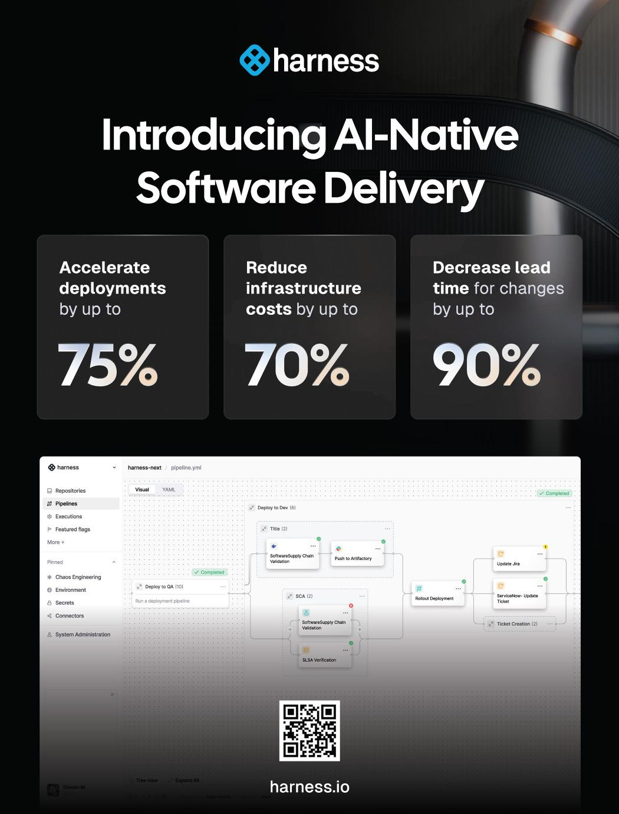
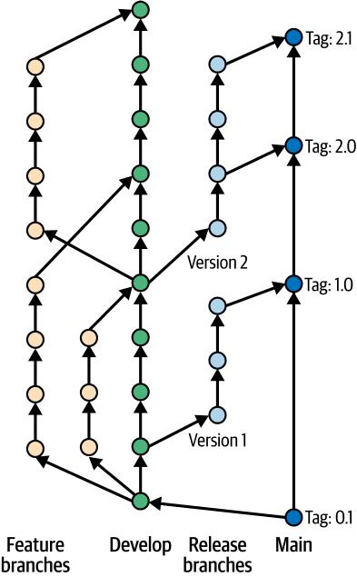
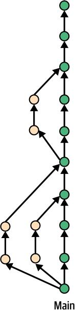
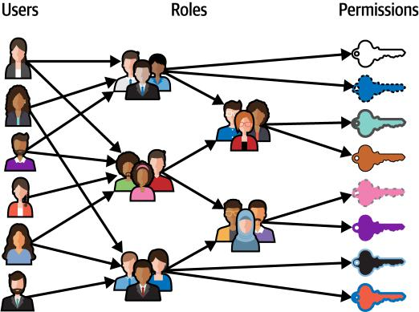
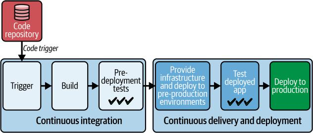
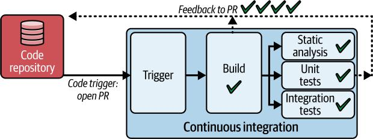
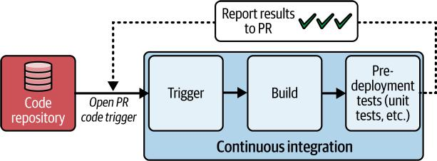
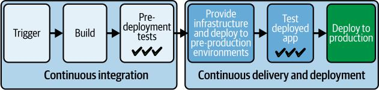
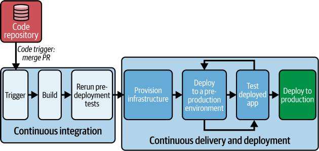

生产高质量软件更快速度的经验实践
Nick Durkin, Eric Minick
& Chinmay Gaikwad AI-Native软件交付
AI编码助手正在帮助团队比以往更快地创建软件。但要将这种速度转化为真正的创新，组织必须超越编写代码，快速、安全、可靠地交付软件。
虽然AI辅助编码现在已经成为主流，但代码编写完成之后发生的事情仍在追赶中。AI-Native软件交付是您将AI应用于整个交付生命周期的实用指南，从提交到生产及之后。
本书专为软件工程师、DevOps领导者和技术高管而写，探讨了领先团队如何使用AI来简化CI/CD、管理云成本、加强安全性并消除运营负担。本书还揭示了脆弱自动化的风险，并向您展示如何避免构建不可扩展的系统。
Nick Durkin 是Harness的现场CTO，负责组织的全球现场工程团队、售后工程团队和部分平台。
Eric Minick 是Harness的DevOps解决方案高级总监，专注于开发者体验和启用AI-native管道。
Chinmay Gaikwad 结合了深厚的AI-native DevOps和AppSec专业知识与战略营销领导力，担任Harness的产品营销总监。
您将学习如何：
• 在交付工作流程中集成AI以加速价值实现时间
• 避免分片自动化策略的常见陷阱
• 采用可随团队扩展的DevSecOps原则
• 在AIOps、混沌工程和SRE中应用实际做法
• 通过智能管道和反馈循环为您的交付做好未来准备
无论您是在演进传统交付流程还是设计新平台，本指南都将帮助您引领组织进入软件交付的AI-native未来。
软件架构
ISBN: 978-1-098-17200-8

生产高质量软件更快速度的经验实践
Nick Durkin, Eric Minick, and Chinmay Gaikwad
AI-Native软件交付 Nick Durkin, Eric Minick, and Chinmay Gaikwad 著
版权所有 © 2025 O’Reilly Media, Inc. 保留所有权利。
由O’Reilly Media, Inc.出版，141 Stony Circle, Suite 195, Santa Rosa, CA 95401.
O’Reilly图书可用于教育、商业或销售推广用途。大多数标题也有在线版本（http://oreilly.com）。如需更多信息，请联系我们的企业/机构销售部门：800-998-9938 或 corporate@oreilly.com。
采购编辑： Louise Corrigan 开发编辑： Jeff Bleiel 制作编辑： Elizabeth Faerm 复制编辑： J.M. Olejarz 校对： Krsta Technology Solutions
索引制作： Potomac Indexing, LLC 封面设计师： Karen Montgomery 封面插画师： José Marzan Jr. 内页设计师： David Futato 内页插画师： Kate Dullea
2025年8月：首版
首版修订历史
2025-07-25：首次发布
发布详情请参见 http://oreilly.com/catalog/errata.csp?isbn=9781098171995。
O’Reilly标志是O’Reilly Media, Inc.的注册商标。AI-Native软件交付、封面图像和相关商业外观是O’Reilly Media, Inc.的商标。
本作品中表达的观点是作者的观点，不代表出版商的观点。虽然出版商和作者已善意努力确保本作品中包含的信息和说明准确，但出版商和作者不承担任何错误或遗漏的责任，包括但不限于因使用或依赖本作品而导致损害的责任。使用本作品中包含的信息和说明的风险由您自行承担。如果本作品包含或描述的任何代码示例或其他技术受开源许可证或他人的知识产权约束，您有责任确保您的使用符合此类许可证和/或权利。
本作品是O’Reilly和Harness之间合作的一部分。请参见我们的编辑独立声明。
978-1-098-17200-8
软件行业正站在一个关键时刻。系统日趋复杂，用户需求呈指数级增长，而失败的代价——无论是财务、声誉还是运营方面——都达到了前所未有的高度。然而，尽管经过几十年的进步，许多团队仍然被过时的实践所束缚：手动部署、被动救火，以及在自身复杂性下崩溃的工具链。本书的存在就是为了弥合我们现在所处位置与我们需要到达位置之间的差距。它是引导我们从脆弱、高风险的交付转向AI驱动自治的路线图——一个软件自我部署、系统自我修复、创新速度超越风险的未来。
本书面向以下读者：
• 工程师和DevOps实践者，寻求用智能自动化取代繁重工作
• 技术领导者，负责将DevOps成熟度与业务成果（如速度、韧性和成本控制）对齐
• 产品经理和创新者，希望了解AI原生交付如何加速价值实现时间
• 任何投资于软件未来的人，从CTO到学生，准备重新思考部署、测试和可观测性的可能性
作为受过训练的软件工程师，我们花了多年时间研究软件开发和交付的演进。但OpenAI在2022年底推出ChatGPT标志着我们的一个关键时刻。像该领域的许多人一样，我们将生成式AI不仅视为编码助手，而是重新构想整个交付流水线的催化剂。
这本书不是关于追逐趋势。它是关于构建在复杂性中茁壮成长的系统。每一章都将理论与现实世界的例子相结合，从《凤凰项目》的DevOps寓言到AI驱动的部署。无论你是从头到尾阅读还是深入特定章节，你都将具备改变交付流程和团队影响力的能力。
前言 | xi，将平台视为以开发者为客户的产品——所有这些都通过一个实际案例研究加以说明，该案例展示了一家金融服务组织如何仅用6名平台工程师服务1,400名开发者就转变了其交付能力。
本书使用的约定
本书使用以下排版约定：
斜体
表示新术语、URL、电子邮件地址、文件名和文件扩展名。
此元素表示一般注意事项。
O’Reilly在线学习
40多年来，O’Reilly Media为公司成功提供技术和商业培训、知识和见解。
我们独特的专家和创新者网络通过书籍、文章和我们的在线学习平台分享他们的知识和专业技能。O’Reilly的在线学习平台为您提供按需访问的实时培训课程、深入学习路径、交互式编码环境，以及来自O’Reilly和其他200多家出版商的大量文本和视频集合。更多信息请访问https://oreilly.com。
如何联系我们
请将有关本书的评论和问题发送给出版商：
O’Reilly Media, Inc. 141 Stony Circle, Suite 195 Santa Rosa, CA 95401 800-889-8969（美国或加拿大） 707-827-7019（国际或本地） 707-829-0104（传真） support@oreilly.com https://oreilly.com/about/contact.html
xii | 前言 我们为本书建立了一个网页，其中列出了勘误、示例和任何附加信息。您可以在https://oreil.ly/ai-native-software-delivery访问此页面。
有关我们书籍和课程的新闻和信息，请访问https://oreilly.com。
在LinkedIn上找到我们：https://linkedin.com/company/oreilly-media。
在YouTube上关注我们：https://youtube.com/oreillymedia。
致谢
我们对许多人的专业知识、鼓励和坚定不移的支持表示深深的感谢，是他们将这本书从一个大胆的想法转化为现实。
特别感谢我们优秀的同事提供的主题专业知识：Matthew Schillerstrom、David Karow、Mridhula Venkat、Dan Gordan、Sean Roth、Harold Bell和Patrick Wolf。
我们还要感谢本书的技术审稿人——Charles Humble、Julian Setiawan、Sagar Gandhi和Laura Uzcategui——他们对本书技术方面提供的宝贵反馈。
同时感谢O’Reilly团队在这个有意义的过程中与我们合作：收购编辑Louise Corrigan、开发编辑Jeff Bleiel、制作编辑Elizabeth Faerm和总编辑Lisa LaRew。还要感谢Kristy Saunders。
前言 | xiii
通往AI原生DevOps之路
大多数软件开发团队都能讲述部署失败的惨痛故事。正是这些故事让我们踏上了现代化交付实践的道路。这里有一个例子：经过数周或数月的功能开发、大量重构以及漫长的测试和稳定阶段后，团队准备部署了。开发人员、运维团队成员、一群经理，甚至可能是一些高管聚集在”作战室”里。到目前为止，开发和运维之间的协作微乎其微。然而，现在这两个团队正作为一个整体共同工作。他们开始逐一检查长长的清单或手册中的手动步骤。然而，即使是详尽的清单也不能保证部署过程没有问题。鉴于发布中的变更数量，部署很可能既复杂又有风险。正如我们将在后续章节中看到的，依赖管理是具有挑战性的，“依赖地狱”可能是非常真实的。因此，团队可能会发现生产环境中缺少关键依赖。团队可能发现安装了不兼容的库版本，或者关键设置配置错误，或者迁移步骤失败或被遗忘，或者变更导致对合作伙伴服务的请求失败。
任何数量的失误都可能使已经复杂的部署偏离轨道。紧张情绪会加剧，救火会随之而来，时间会不断延长。团队希望在部署窗口内完成部署和任何后续的手动冒烟测试。如果部署无法挽回地失败且无法挽救，团队会希望回滚到之前版本不会导致意外困难，从而延长停机时间和复杂性。当部署最终完成时，疲惫不堪的团队撤退了。通常，在”重症监护期”内，团队需要在流量恢复时保持警惕。可能会有几天或几周的稳定期，在此期间开发团队可能会暂停所有功能工作，专注于热修复或补丁。
[1]
如这个故事所示，高负荷、高风险的部署对开发和运维团队来说都是令人疲惫的。这些大规模生产部署，伴随着稳定化工作周期，分散了团队继续构建增加业务价值功能的注意力。
相比之下，现代软件交付简化并加速了从开发者计算机到最终用户获取软件的整个过程。部署频繁、低调、低风险且高度自动化。但我们正进入一个新时代——一个超越自动化的时代。下一个前沿是AI原生(AI-native)软件交付。AI原生交付将AI编织到软件交付生命周期的每一层，使智能代理能够做出决策、优化工作流程并实时适应。这些代理——从代码和DevOps到安全和测试——自主协作，强制合规性，自愈基础设施，并使用强化学习持续优化软件交付管道。这一转变标志着从被动治理到主动治理，从孤立工具到统一生态系统，从静态自动化到动态自治的转变。
随着AI生成代码、编排管道并减少手动工作，开发速度得到加快。系统变得更加有弹性和安全，AI能够主动识别问题并自主解决它们。同时，通过智能优化降低云成本，随着AI驱动的代理以机器速度处理跨团队协调和决策制定，协作规模得到扩展。在本章中，我们将描述软件交付在过去25年中是如何演变的。我们将定义DevOps并描述DevOps实践如何实现现代软件交付。我们将研究当前DevOps状态面临的众多挑战。最后，本章将概述现代软件交付、DevOps实践和AI原生方法如何演变以应对这些挑战。
“DevOps”一词通常归功于Patrick Debois，他在2009年将”development”和”operations”两词结合起来，为他组织的一次会议命名，该会议旨在探索打破开发和运维团队之间传统壁垒以更快地交付软件。两个主要因素造成了这些壁垒：
沟通和协作不良
开发人员通常专注于编写代码和功能，然后基本上将完成的产品扔过隐喻的墙给运维团队。然后运维承担在生产环境中部署、维护和排除代码故障的责任。
[2 | 第1章：AI原生DevOps之路]
优先级冲突
开发团队优先考虑快速开发和新功能的快速发布，而运维团队专注于系统稳定性、安全性和防止停机。尽管优先级不同，这些团队本质上是相互连接和相互依赖的。无论您的代码或基础设施多么令人印象深刻，在部署并在生产环境中运行以服务于您的业务目标之前，它没有真正的价值。
这种目标不匹配，有时被称为”核心慢性冲突”，可能会在问题出现时导致摩擦和相互指责。
作为回应，DevOps原则鼓励在每个阶段进行沟通。它们鼓励运维在开发早期参与，并在代码部署后与开发人员建立持续的合作伙伴关系来支持代码。
越来越复杂的软件团队、新的软件方法论和新工具帮助为DevOps铺平了道路。在本节中，我们将研究这些因素。
在2000年代初期，组织对如何提高软件交付效率的新想法变得非常感兴趣和接受。基于精益制造理念的新”敏捷”方法论变得流行起来。这些方法论反对强调大量前期规划和严格线性序列不同阶段的”瀑布”软件交付模式。相反，敏捷提倡短开发周期和频繁发布，对变化高度响应。许多并行努力将新的敏捷实践正式化。1995年的一篇论文正式化了Scrum实践。Kent Beck在他1999年的著作《极限编程解释》(Addison-Wesley)中描述了一套软件开发的敏捷实践。2001年，Beck和其他敏捷流程的有影响力的倡导者在敏捷宣言中谈到了类似的主题，该宣言提倡适应性和响应性而非严格遵守计划。[1] DevOps从宣言的第一个原则借用了”持续交付”这个名称：“我们的最高优先级是通过早期和持续交付有价值的软件来满足客户。”
Jeffrey Fredrick观察到，Ken Schwaber的Scrum书籍从2001年到2007年的发展历程，可以作为敏捷日益成熟和组织影响力扩大的一种晴雨表。在这段时间里，由于其清晰的结构、规范性的角色和跨团队的适应性，Scrum正在迅速成为主导的敏捷实践。2001年，《使用Scrum进行敏捷软件开发》(Pearson)向刚开始探索敏捷方法的开发人员和小团队介绍了
[1] [Kent Beck等人，][“敏捷软件开发宣言”](https://agilemanifesto.org)，2001年，敏捷联盟。2010年6月14日检索。]
DevOps简史 | 3
这个框架。到2004年，《使用Scrum进行敏捷项目管理》(Addison-Wesley)解决了实际实施挑战，标志着在IT更广泛范围内的采用日益增长。到2007年，《企业与Scrum》(Microsoft Press)承认了将敏捷实践从单个团队扩展到整个组织的日益增长的需求。这些书籍反映了——并帮助塑造了——敏捷从边缘想法到企业必需品的旅程。
在接下来的十年里，技术组织越来越受到敏捷思维的影响。其中一个结果是采用了持续集成和持续交付(CI/CD)实践。
《敏捷软件开发宣言》产生了持续集成的实践，这使得敏捷的一个关键原则——频繁交付可工作软件成为可能。开发人员将他们的代码更改合并到共享代码库中。通过持续集成，每次合并都会触发自动化构建和测试过程。这个自动化系统能够快速捕获错误和冲突，使团队能够在开发周期的早期修复它们。持续集成鼓励更小、更频繁的更新，从而实现更快的交付、减少集成问题和更健康的代码库。
持续交付是持续集成的自然延伸。CD自动化了获取已通过集成构建和测试的代码并为发布到生产环境做准备的过程。这包括打包、配置和将软件部署到预发布环境等步骤。CD使团队能够快速可靠地推送新功能、错误修复和更新，确保可部署的软件始终可用。
在每个开发周期结束时交付”可能可发货的产品”是另一个关键的敏捷实践。可能可发货简单意味着可靠、经过测试、打包好的可以部署到生产环境的软件。(实际上，许多采用CD的组织只在内部交付，并继续不频繁地部署到生产环境。持续交付并不等同于持续部署。)
虽然敏捷方法论倾向于关注软件交付生命周期的规划和执行部分，早期的DevOps专注于交付和运维。在DevOps出现后的几年里，该运动获得了显著的发展动力。一个关键的里程碑发生在2009年，首届DevOpsDays会议举行。这个活动汇聚了专业人士分享他们在DevOps实践方面的经验和见解。
第1章：AI原生DevOps之路 | 4
另一个重要的发展是2010年Gene Kim、Kevin Behr和George Spafford出版的《凤凰项目》(IT Revolution Press)一书。这个叙述说明了一个虚构的IT组织面临的挑战，以及采用DevOps原则和实践如何导致其性能的戏剧性好转。它以一种技术和非技术受众都能产生共鸣的方式为DevOps论证了理由。第二年发布了另一本有影响力的出版物，Gene Kim、Jez Humble、Patrick Debois和John Willis合著的《DevOps手册》。这本实用指南通过提供实施DevOps的综合框架，帮助许多组织开始了他们的DevOps之旅。
2013年，Kim和Humble最初的Puppet Labs(现在的Puppet)“DevOps状态”报告引起了关注。该报告不仅关注技术指标；它强调了采用DevOps的商业效益，证明实施该方法的组织可以比同行快30倍地发布代码，故障减少50%。这将DevOps实践直接与领导者关心的商业成果联系起来。Nicole Forsgren、Jez Humble和Gene Kim合著的《加速：精益软件和DevOps的科学》(IT Revolution)一书更详细地探讨了这个主题。
Platform-as-a-Service (PaaS)和Docker在2013年的推出标志着另一个关键时刻，这些技术简化了应用程序的部署和管理，使DevOps实践在更大规模上变得可行。在此之前，管理基础设施和应用程序的复杂性使得DevOps的广泛采用变得困难。AWS Lambda在2014年的推出进一步改变了格局，它开创了大规模事件驱动函数执行的先河，使开发人员能够专注于编写代码而无需担心底层基础设施。与此同时，同样在2014年推出的Kubernetes为大规模编排容器化应用程序提供了强大的框架，确保部署可靠、高效且可扩展。
到2010年代后半期，机器学习(ML)技术开始渗透到DevOps工具链中，特别是在应用程序性能监控(APM)和测试领域。测试工具使用ML来优化测试执行并检测用户界面中的变化。与此同时，Datadog和New Relic等APM工具较早地将自己标记为”AI Ops”，因为它们使用ML来识别有问题的信号。到2018年，Harness将ML应用于持续交付来检测有问题的信号，使系统能够识别部署何时引起问题并触发必要的回滚。这些技术共同为现代DevOps奠定了基础，提供了高效管理复杂软件系统所需的工具和框架，为AI原生DevOps铺平了道路。
DevOps已经从一个松散的小众概念发展成一套完善的理念，我们可以称之为”DevOps 1.0”。其特征包括：
文化转型
认识到文化转变对于协调软件开发和运维团队的重要性
自动化实践
实施诸如持续集成和持续交付等实践来简化软件交付
自动化工具
利用特定工具来自动化软件交付管道的各个阶段，包括代码提交、测试、部署、配置和生产监控
DevOps 1.0实践的早期采用者获得了立竿见影的成果。在2010年代初期，许多工程团队按季度发布软件，需要数周的手动测试、协调和生产部署工作。这些发布流程缓慢、容易出错，并且需要在非工作时间进行调度以降低风险。当组织开始采用早期DevOps原则——让开发和运维团队更紧密地合作并自动化交付管道的关键部分——他们实现了更快的发布周期、更高的可靠性和更少的手动工作。对许多组织来说，这种转变使他们能够从季度发布转向双周甚至周发布，为更迭代的开发和更快的价值实现时间奠定了基础。
DevOps 1.0提供了有价值的概念、实践和工具。然而，如今的公司在充分实现DevOps收益方面面临新的挑战，原因包括：
• 引入复杂性并要求DevOps适应的软件趋势
• DevOps 1.0工具集要么功能不足，要么对许多组织来说过于复杂
以下章节将详细探讨这些挑战。
云原生和微服务架构的采用。新的架构模式涉及数十个离散的微服务，部署到单独的容器中。DevOps 1.0管道无法满足这些新架构的要求。
在过去十年中，微服务和云原生架构已成为现代软件开发的事实标准，这是由于对软件系统更大可扩展性、灵活性和敏捷性需求的驱动。这些架构为DevOps团队引入了重大的新要求。微服务的采用导致需要部署的服务激增，每个服务都有自己的依赖项和配置。在这些分布式服务中编排部署和维护一致性变得越来越具有挑战性。
容器(云原生系统的关键特性)和无服务器架构的使用需要部署和管理的新策略，并增加了另一层复杂性。DevOps团队现在必须处理跨数十甚至数百个短暂容器或无服务器函数的部署，这需要强大的编排工具、用于构建和管理容器生命周期的自动化流程，以及对这些新兴技术的深入理解。自动化容器的整个生命周期——从构建镜像到将其推送到注册表，再到以最小停机时间推出更新——对于高效的容器管理至关重要。
开源软件的兴起。开源软件(OSS)已成为现代软件开发中无处不在的一部分。虽然OSS提供了众多好处，但它为DevOps团队引入了新的挑战。管理依赖项、确保与不同版本的兼容性，以及在多个OSS组件中维护安全补丁可能是一项艰巨的任务。此外，团队必须仔细审查代码并确保其符合组织的安全和合规标准。
数字化体验和企业消费化的重要性。 在这个数字化颠覆的时代，Marc Andreessen的预言”软件正在吞噬世界”变得越来越准确。一家公司提供的数字化体验正在成为客户的主要接触点，塑造着他们体验品牌的方式。此外，企业技术的消费化意味着员工期待与面向消费者的应用程序相同的无缝体验和持续更新。这些期望给DevOps团队带来压力，要求他们提供更频繁的发布、维持高可用性，并支持实验以推动快速创新。
超越DevOps 1.0工具集
自2009年首届DevOpsDays以来的这些年里，我们对工具的需求已经发生了变化。交付节奏加快了，同时监管负担也增加了。以artifact registries为例：最初作为本地缓存来加速构建，现在它们对于确保跨多种语言的软件供应链安全至关重要。为了简化部署，我们进行了容器化，但我们的构建变得更长，使得我们的持续集成构建不再持续。我们从一套配置管理工具转向更新的、云原生的声明式工具。
DevOps简史 | 7
但我们仍然需要测试、保护和治理这些基础设施变更。与此同时，新工具不断出现——每个都承诺改进，但也需要与其他所有工具进行连接。对于许多团队来说，当前的技术栈正在崩溃。管道很快变得非常复杂。组织平均管理10个或更多不同的工具来部署软件。例如，一个部署Rails、Sidekiq和NodeJS应用的自动化管道可能包括以下工具：
• GitHub actions用于运行CI
• 用于监测Sidekiq、Rails和Puma并将应用指标推送到Prometheus的库
• Docker镜像构建和Kubernetes
• Artifactory用于存储镜像和Helm charts
• ArgoCD用于Kubernetes上的GitOps部署
• Helm用于管理部署和升级
• Terraform用于管理Amazon Web Services (AWS)基础设施、角色、权限等
• New Relic用于异常捕获和监控
• Kube-state-metrics用于收集容器指标
• Prometheus用于存储指标
• Grafana用于使Prometheus指标可消费
这个工具集的集成和管理可能对资源有限的团队构成相当大的挑战。让我们看看DIY方法的一些挑战。
广泛使用的开源工具往往不是最优的。 DevOps的DIY方法通常导致效率较低的管道。一些开源工具缺乏能够减少开发人员工作量和缩短生产时间的功能。例如，在Jenkins中维护正常运行时间和扩展需要大量资源。长时间的测试可能导致缓慢的构建。最后，重用管道的模型是复制/粘贴，导致”管道蔓延”，这可能难以维护且成本高昂。第3章将详细介绍这些问题。
DIY管道导致冗余和浪费的努力。 团队通常必须实现管道来将工具和系统整合在一起。这导致大量的重复造轮子。例如，Jenkins和ArgoCD是用于CI/CD的常用工具。这些工具为自动化软件开发和部署过程提供了强大的功能，但它们要求团队从头构建基本架构，如基于角色的访问控制(RBAC)、审计日志和通知。
第1章：AI原生DevOps之路 | 8
实施和维护这些功能的努力本可以用于为客户提供价值。
自动化往往不完整，需要手动步骤。 一个团队在大部分部署中使用自动化脚本，但需要手动干预来配置环境变量，如果不是所有团队成员都遵循相同的程序，这可能导致不一致的部署。不完整的自动化可能导致监控和反馈循环中的空白，因为手动步骤可能不会触发自动警报或指标收集。手动步骤引入了人为错误的风险，这可能导致停机或安全漏洞。因此，DevOps中不完整的自动化可能导致效率低下、错误和可扩展性问题。
治理是事后考虑。 没有前期治理，团队可能忽视合规要求（如满足通用数据保护条例[GDPR]标准），导致在后期发现问题时需要昂贵的返工或面临罚款。如果安全措施应用不一致或作为事后考虑，应用程序就容易受到攻击。没有明确的治理政策，云服务或基础设施等资源可能被过度配置或未充分利用，导致成本浪费（我们将在第9章中讨论这个话题）。没有监督，团队可能使用不同的工具、流程和标准，导致集成挑战和效率低下。
DevOps 2.0
DevOps 1.0已经显著加速了许多公司的软件交付过程。然而，其复杂性、留下的空白以及所需的投资为改进创造了空间。进入我们称之为DevOps 2.0的阶段——一个由更简单的开发者体验、端到端自动化以及易于管理所有移动部件的视图，以及增强整个管道的AI能力所定义的愿景。这种演进将焦点从工具和流程转向它们所服务的人员和结果。
DevOps 2.0 流程和工具通过强大的新功能增强了开发者体验。开发者可以在几分钟内启动新项目和服务，通过自动化开发和交付工具链的设置来实现。开箱即用的集成使团队能够轻松创建和连接代码库、敏捷项目和管道。为了进一步简化流程，模板封装了组织的最佳实践，确保了一致性，并在创建新服务时消除了工作管理开销。团队专注于构建他们的应用程序，而不是繁琐的基础设施设置。AI 代理执行越来越复杂的 DevOps 任务，例如自动诊断和解决基础设施和管道问题，优化资源分配，以及基于观察到的性能模式提出架构改进建议。
[DevOps 简史 | 9]
DevOps 2.0 工具通过更具凝聚力、紧密集成的工具集来理清 DevOps 1.0 解决方案的复杂性。基本构件(RBAC、审计日志)已经集成。对各种部署策略和实验方法的支持已内置，使团队能够进行频繁发布和快速迭代。新工具能够扩展以支持跨多个环境的大规模部署，包括本地、云和混合设置。DevOps 2.0 工具将提供安全管道和策略执行，以最小化开源采用和 AI 编写代码的固有风险。
最后，AI 正在被融入到整个软件交付管道的 DevOps 2.0 工具和流程中。新兴协议如 Agent Control Protocol (ACP)、Model Context Protocol (MCP) 和 Agent-to-Agent Protocol 正在帮助实现 AI 模型与工具、系统和数据的更广泛生态系统之间的无缝交互。这些协议定义了 AI 代理与工具交互、安全访问数据以及在护栏内执行任务的标准化方式——使工作流程更加动态和自主。
在现代 DevOps 环境中，这些协议充当 AI 能力和运营基础设施之间的桥梁，让 AI 不仅仅是观察和建议；它们使 AI 能够采取有意义的行动，同时保持可审计性和合规性。随着 DevOps 2.0 拥抱越来越智能的自动化，这些协议为安全、可扩展和有效的 AI 驱动运营提供了基础，从而增强开发者工作流程。想象一下能够生成代码、注释、测试和基础设施脚本，或使用自然语言搜索提取相关代码片段的工具。此外，机器学习通过仅执行相关测试来加速测试周期。
利用 AI，这些工具在入职期间提供个性化指导，检测漏洞并提供修复建议或启动修复，甚至帮助编写和理解策略。通过分析可观察性遥测来识别何时需要回滚，从而提高部署的可靠性。AI 分析功能实验以了解变更的影响。这种贯穿软件开发生命周期(SDLC)的 AI 驱动转型正在提高生产力、改善质量、降低风险并增强整体开发者体验。随着开发者可以通过 AI 编码助手越来越快地编写代码，企业快速安全地将变更交付到生产环境并了解这些变更是否有益的能力将成为创新的限制因素。要做好这一点，需要既要做好 DevOps 的基础工作，又要在交付的每个阶段都注入前沿的 AI。
[第1章：通往 AI 原生 DevOps 之路 | 10]
现代软件交付强调快速发布、无缝体验和持续创新，推动了对传统 DevOps 实践的变革需求。虽然 DevOps 1.0 通过 CI/CD 和初步的跨团队协作奠定了基础，但它依赖于由不同解决方案构建的复杂工具链，这产生了障碍。这些挑战源于应用程序架构复杂性的增长（微服务、容器）、开源组件的激增，以及管理日益多样化工具集的需求。DevOps 2.0 旨在通过简化开发者体验、提供更加集成和智能的工具集，以及在整个管道中原生地注入 AI 来解决这些问题。这种演进承诺更高的效率、增强的质量，以及专注于交付价值而不仅仅是管理工具。
此外，AI 原生软件交付用自主代理（例如，代码、DevOps、安全）替代静态自动化，以实现自我优化系统和主动统一的生态系统。它通过自主代码生成、上下文管道创建、预测性故障解决和实时决策制定来加速开发速度、增强可靠性、确保合规性、降低成本并促进可扩展协作。虽然这是变革性的，但组织必须解决 AI 治理、数据隐私和技能差距问题，才能充分利用其优势。
在第2、3和4章中，我们将介绍 DevOps 自动化的骨干。这包括用于有效版本控制的源码控制管理，使用持续集成进行高效开发的构建和测试，以及使用持续交付系统进行无缝软件发布的内部部署。我们将探索 DevOps 1.0 的方法和 DevOps 2.0 带来的机会。
[总结 | 11]
想象一个场景，你和你的团队正在协作一个复杂的软件项目。多个人在贡献，进行修订和改进。如果没有清晰的变更管理系统，你们会面临覆盖彼此工作的风险，并且无法追踪谁更新了什么以及他们为什么进行这些更改。如果没有清晰的系统来标记变更集，当问题出现时，你们将无法导航回到团队代码的前一个稳定版本。如果没有定义的工作流程和结构化访问控制，任何人都可以在任何时候更改任何内容，而没有监督。如果没有控制，你的团队无法确定在需要重新创建特定发布版本时使用了哪些代码文件。接下来，想象几个团队已经在一个新应用程序上工作了几个月，现在接近部署到生产环境的时间。各种开发和QA环境都进行了临时修复和调整，但这些修改并没有可靠地反映在生产环境中。重要的生产设置没有在QA环境中重复，开发环境差异很大。鉴于所需环境日益复杂，启动新环境已经成为一个耗时且容易出错的瓶颈，造成挫折和延迟。
这些情况是功能失调和浪费努力的根源。源代码控制管理(SCM)实践正是为了解决这些问题而创建的。其核心是跟踪和管理随时间对代码和其他关键资源（如配置）所做的更改。
如今，人工智能正在改变我们处理SCM的方式。AI可以自动检测有风险的更改，建议对代码或配置的改进，甚至通过理解修改背后的意图来帮助解决合并冲突。它可以识别环境间的不一致性，推荐修正措施，并优化部署工作流程。AI驱动的工具不仅仅是帮助团队管理复杂性——它们正在实现更快、更安全、更有韧性的开发周期。随着软件交付变得更加分布式和动态，AI正在成为使SCM更加智能、主动和高效的重要合作伙伴。
跨团队协调更改的问题可以追溯到编程的早期，SCM实践的历史与计算机编程的演进密切相关。在本节中，我们将探讨SCM是如何演变的，以及AI工具在现代SCM中发挥的关键作用。
在编程的早期，程序相对简单；它们受到有限硬件的约束，代码管理也很初级。随着CPU变得强大和复杂，计算和代码变得更加复杂。代码存储库（提供基本SCM功能的中央存储）最初出现在1970年代，与高级语言和结构化编程方法学的兴起同时出现。像源代码控制系统(SCCS)这样的工具提供了基本的版本跟踪功能，允许开发者回滚到以前的版本并查看更改历史。这些早期系统反映了向更有组织的程序开发的转变。
SCM在1970年代随着更结构化的软件工程团队的出现而进一步发展。像1982年引入的修订控制系统(RCS)和1986年引入的并发版本系统(CVS)这样的工具添加了对协作至关重要的功能，包括分支。这使得更复杂的项目管理和协作文化成为可能。
在1990年代早期，IBM Rational ClearCase作为SCM的商业解决方案出现。它强调强大的配置管理和流程定制，使其适合复杂的软件开发环境。Subversion(SVN)是由CollabNet开发的另一个集中式代码存储库，获得了广泛认可。SVN 1.0于2004年发布，以解决CVS的不足并提供缺失的功能。
2000年代初期敏捷方法学和开源的兴起对软件开发提出了新的要求。快速发布意味着团队需要对日益复杂的代码库有更多的灵活性和控制。团队本身也发生了变化，变得更大且往往地理分散。Git由Linus Torvalds（Linux内核的创建者）于2005年创建。他需要一个强大而高效的系统来管理Linux项目的庞大代码库，而现有选项都不够用。版本控制系统(VCS)是跟踪文件随时间变化的核心技术，构成任何SCM方法的基础。与大多数早期代码存储库不同，Git是分布式VCS。在集中式VCS中，每个人都从存储在中央服务器（存储库）中的代码库的单一副本工作。每个开发者都有他们自己的本地副本（工作副本）可以修改。当开发者进行更改并提交时，这些更改立即上传到中央存储库，使其他所有人都能看到。要查看其他人的最新更改，开发者只需从中央存储库更新他们的本地副本。
图2-1显示了集中式VCS。
分布式系统采用了不同的方法。在这里，每个开发者在本地机器上都有完整的代码库副本（包括仓库和工作副本）。开发者所做的更改在本地副本中是私有的，直到他们明确地与团队共享这些更改。这是通过将更改”推送”到中央仓库来完成的。同样，要查看其他开发者所做的更新，用户需要从中央仓库”获取”这些更改到本地副本。
[图 2-2] 展示了 Git 分布式版本控制系统。
[源代码控制管理介绍 | 15]

图 2-2. 使用 Git 的分布式版本控制
Git 对速度的关注、其分布式特性和强大的分支功能使其在许多方面都成为了游戏规则的改变者：
分布式促进离线工作
Git 的去中心化方法促进了高效和独立的工作，因为开发者可以在没有中央服务器的情况下在本地进行更改。这也使开发者能够离线工作。
灵活的分支和合并
Git 的分支系统极其灵活。开发者可以创建独立的分支来开发新功能或修复错误，而不影响主代码库。将这些分支合并回主代码库是一个顺畅且高效的过程。这使开发者能够更自由地进行实验和迭代。
对大型代码库轻量且高效
Git 在高效处理大型代码库方面表现出色。它只存储代码版本之间的差异，使其比传统的 SCM 系统更快且需要更少的存储空间。
非线性历史有助于组织
与一些强制线性历史的 SCM 系统不同，Git 允许开发者通过变基等功能重写历史。这种灵活性有助于维护干净有序的代码库。
[16 | 第 2 章：源代码控制管理] 第一个广泛使用的托管 Git 仓库几年后才出现。GitHub，现在最受欢迎的平台，于 2008 年推出。这些平台建立在 Git 的强大基础上，提供了用户友好的 web 界面、代码库的云存储和协作功能。这种组合将 Git 从一个强大但技术性的工具转变为一个可访问的社交软件开发平台，使其成为现代软件开发工作流程的基石。虽然传统的集中式仓库仍有历史遗留足迹，并在有特殊需求的环境中使用，但 Git 现在是主要选择。2022 年 Stack Overflow 调查发现，94% 的受访者使用 Git，98% 使用任何源代码控制的人都使用 Git。因此，我们将重点关注 Git 仓库的变体。
2010 年，Gitflow 分支约定出现，使用分支在开发、功能创建和发布准备之间提供清晰的分离。
[图 2-3] 显示了 Gitflow 工作流程。在 Gitflow 工作流程中：
主代码库位于名为”main”的分支上。这个分支通常被认为是稳定的，应该只包含生产就绪的代码。
创建一个新的”develop”分支，作为所有开发工作的持续集成分支。
功能开发发生在从 develop 分支分出的独立分支（feature/release 分支）上。开发者在这些功能分支上开发新功能和修复错误。一旦功能完成并经过彻底测试，就会合并回 develop 分支。
develop 分支充当所有完成功能的集成点。它代表即将发布的版本，并通过合并功能分支持续更新。
当需要发布时，从”develop”创建发布分支。可以在此分支上进行错误修复和小幅调整。一旦确定，发布分支将合并回”main”以创建官方发布。在”main”中创建相应的标签来标记发布版本。
[源代码控制管理介绍 | 17]

Pull request，有时缩写为 PR，是 Git 版本控制中用于代码审查和集成的核心协作功能，广泛用于 Gitflow 和其他分支模型。Pull request 为开发者提供了一种结构化的方式来提议对代码库的更改，并在将更改合并到主分支之前让其他人审查。
Gitflow 对计划发布和独立发布分支的强调受到了更新的 Git 分支模型的挑战。在持续集成和持续交付日益普及的推动下，这些模型优先考虑更快的部署和更频繁的更新。基于主干的开发完全摒弃了专用开发分支的想法。相反，功能在经过严格测试后持续集成直接到主分支（通常称为”trunk”或”main”）。
[图 2-4] 显示了这种模式。
[18 | 第 2 章：源代码控制管理]

图 2-4. 基于主干的开发
这种简化的方法允许更快的反馈循环和更快的部署，与现代 DevOps 实践保持一致。Pull request 在这些工作流程中仍然至关重要，确保在将更改合并到主分支之前通过代码审查来保证代码质量。
我们已经了解了代码仓库如何与编程和软件开发实践一起发展，以解决我们想象中的问题，使团队能够在源代码中有效协作。但是部署问题呢？我们如何高效系统地构建所需的环境，如何简化代码部署到生产环境的过程？这就是GitOps发挥作用的地方。在将Dev和Ops结合起来时，DevOps强调自动化在消除手动错误方面的重要性，并有助于确保跨环境的一致性。这转化为更快的部署、改进的可靠性和降低的风险。GitOps是指自动化基础设施配置的过程，特别是在现代容器优先的云基础设施中。GitOps强调使用代码仓库（通常是Git）作为系统所需状态的单一真实来源，并利用自动化来持续调和实际状态与所需状态。存储在我们仓库中的资源可以包括：
基础设施配置
定义环境所需组件的文件，虚拟机(VM)的类型和数量、存储配置、网络设置和安全策略。这可以包括声明式和命令式配置以及部署脚本。
环境变量
这些对于存储敏感信息（如密码或API密钥）至关重要，这些信息不应直接嵌入在代码中。基础设施即代码(IaC)工具通常具有安全管理和引用环境变量的机制。
其他资源
根据环境的复杂性，仓库可能还存储其他资源，如用于应用程序部署的容器镜像（通过git-lfs）。
使用我们的仓库作为单一真实来源，我们可以利用其强大的功能。我们获得详细的版本跟踪和变更历史，并且可以通过Git工作流管理基础设施更新，这些工作流通过拉取请求的代码审查等方式促进协作和监督。管理良好的基础设施自动化转化为更快的部署、更少的错误，以及每次需要创建新环境时的可靠环境。我们将在第4章中学习更多关于使用GitOps进行部署的内容。
我们在第1章中提到了微服务的重要性。在基于微服务的系统中，提高生产力的两个关键实践是使用monorepo和远程缓存。
Monorepo（单体仓库）是存储多个项目或服务代码的单一版本控制代码仓库。在微服务环境中，这种方法简化了协作，简化了依赖管理，实现了跨服务的原子更新，并减少了版本冲突。远程缓存是指在远程服务器上存储构建产物——如编译后的代码或测试结果。像Nx这样的工具使用这种技术显著加速开发工作流，通过允许团队重用以前生成的输出而不是从头重建，减少冗余计算。
monorepo和远程缓存一起支持更快、更高效的CI/CD管道，并有助于改善整体系统性能。然而，随着项目规模的扩大，monorepo可能会引入复杂性，如果没有周到的实施，远程缓存可能会引发供应商锁定的担忧。
AI工具已经彻底改变了开发人员处理编码的方式。GitHub Copilot、Cursor、Harness AI Code Agent和类似的编码助手/代理充当智能结对程序员，基于项目上下文提供实时代码建议。这些工具可以预测和建议整行或整块代码，显著加快开发过程。
除了代码补全外，AI助手还可以：
• 自动生成样板代码结构 • 建议不同的实现方法 • 提供代码解释和文档 • 协助调试和优化
AI原生软件交付始于AI原生SCM。AI与SCM的集成超出了代码补全的范围。在SCM内，AI可以分析仓库模式，在错误到达生产环境之前识别潜在bug，并基于在类似项目中观察到的最佳实践建议架构改进。这种主动方法显著减少技术债务，从开发的最早阶段就改善代码质量。我们将在本章后面探讨其中一些主题。
在接下来的部分中，我们将介绍SCM系统如何融入交付管道。在理解了这一点后，我们将讨论选择适合您团队的SCM时需要考虑的因素。最后，我们将查看现代代码仓库的特征，包括AI的作用，这些可以简化您的整个软件开发管道。
核心仓库是交付管道的关键组件，锚定整个管道流程。它作为代码的单一真实来源，确保一致性和可靠性，是开发人员持续交互的实体，启动集成和交付活动。
图2-5描述了代码仓库与持续集成和交付的关系。
让我们了解典型管道的三个主要部分：
代码仓库
开发人员对代码仓库进行操作，提交更改并打开和关闭拉取请求。
持续集成
持续集成由代码仓库中的特定动作触发。
这些触发器可以定制，包括代码提交、pull request的开启或关闭，或团队根据特定需求和实践确定的其他相关动作等事件。CI为开发者提供代码变更的快速反馈。通过自动化构建和测试，CI充当早期警报系统，提醒开发者注意潜在的错误、集成问题，甚至是代码风格违规。这种即时反馈使开发者能够快速解决问题，防止问题发展成更大、成本更高的问题。
通过CI，您的代码库保持在一致的可部署状态，为交付管道中的下一步做好准备。
持续交付和部署
持续交付和部署步骤自动化基础设施的配置以及新代码版本到一个或多个预生产环境的部署。通常会针对在预生产环境中运行的应用程序执行各种类型的测试。我们将在第4章中查看这些步骤。最后，自动或手动决策控制软件到生产环境的最终部署。我们将在第8章中详细讨论这些步骤。通过频繁部署较小的变更，CD简化了交付流程，降低了发布风险，并增强了快速响应用户反馈的能力。
22 | 第2章：源码控制管理 许多代码仓库内置了密钥检测功能。密钥可以包括以下内容：
API密钥
用于认证和授权访问各种Web服务和API的唯一标识符
访问令牌
授予应用程序或资源特定访问权限的临时凭据
OAuth令牌
用于委托授权的令牌，允许一个应用程序代表用户访问资源
私钥
在非对称加密中用于解密消息或验证数字签名的密钥
用户名和密码
用于系统和服务基本认证的凭据
数据库连接字符串
建立数据库连接所需的详细信息，通常包括主机名、用户名和密码等敏感信息
云服务连接字符串
用于连接云服务（如Azure存储或AWS S3）的字符串，可能包含访问密钥和其他密钥
一些代码仓库会在开发者尝试提交或合并包含检测到的密钥的代码时阻止或警告开发者。CI流程可以在密钥检测中发挥作用，防止它们到达生产环境。理想的方法是利用两者来实现全面的安全性。
鉴于SCM对软件开发的重要性，选择代码仓库是团队要做的首要决策之一。我们将把源代码放在哪里？是团队需要回答的问题，甚至在启动项目时就需要回答。首先，仓库必须支持对您团队至关重要的基本操作和开发者工作流：
代码仓库考虑因素 | 23
• 创建、导入和克隆仓库，支持分布式离线工作
• 分支、合并和定义分支规则以满足您特定团队的需求（例如，限制特定用户的分支创建/删除）
• 创建、审查和合并pull request，以及定义符合您团队所需治理的pull request策略（例如，要求所有变更都与pull request关联，禁止直接提交，或设置所需审查者批准的最小数量）
• 创建和修改标签，并定义标签策略（例如，强制标签名称遵循特定模式，如语义化版本控制）
虽然在实现细节上可能有差异，但这些都是预期的仓库功能。
在创建交付管道时，团队通常首先从仓库选择开始；因为这是一个对实现有深远影响的选择，确保您的代码仓库能够在更广泛的生态系统中支持无缝集成至关重要。您的代码仓库应该在一个增强团队生产力而不是增加工作负担的生态系统中运行。此外，解决方案应该具有成本效益，并提供您的组织所需的透明度。
设计良好的DevOps生态系统的特点是易于使用的工具和与交付管道所需的功能和服务的全面集成。这与零散的方法形成对比，在零散的方法中，开发者需要手动集成许多不同的工具，这可能导致难以排除故障的问题和安全风险。这也与过于复杂的单平台解决方案形成对比，后者通常存在功能臃肿的问题，难以配置。
流线化集成的一个例子是配置即代码。这种实践允许交付管道的更新像项目代码一样直接在仓库中进行版本化和跟踪。您可以通过强制要求通过pull request和审批进行变更的工作流来进一步加强协作和治理，这反映了标准的开发实践。
另一个功能示例涉及安全/漏洞扫描。在pull request上下文中显示检测到的漏洞和建议的修复方法有助于开发者快速理解和解决任何检测到的问题。
24 | 第2章：源码控制管理
过去几年里，使用大型语言模型来提高开发人员效率的编程助手或代理出现了爆炸式增长。这些编程助手可以帮助自动完成代码、生成代码建议、理解代码功能，以及许多其他用例。当AI助手与代码仓库集成以获得完整代码库上下文时——而不仅仅是孤立的代码片段——它们可以生成更准确和相关的建议。MCP在这里发挥关键作用，提供通用的标准化方式来连接AI模型和编程助手与各种数据源，包括Harness Code Repository、GitHub和Git等仓库。这消除了对自定义集成的需求，减少了开发工作量并提高了效率。生成式AI (GenAI)在代码仓库中的另一个强大应用是语义搜索——使用自然语言搜索整个代码库的能力。像Sourcegraph的Cody和Harness Code Repository这样的工具使开发人员能够询问”身份验证是如何实现的，这些代码在哪里？“等问题，而不是依赖于基于关键词的搜索，如”登录”或”身份验证”。这种能力对于新团队成员的入职特别有价值，帮助他们快速理解复杂的代码库，而无需深入熟悉项目特定的术语。
关于代码审查，像DeepCode和Codacy这样的工具使用ML算法来审查代码变更，自动检测潜在的错误、代码异味和编码标准遵循情况，比手动审查更加高效。AI在SCM中的其他用例包括：通过在代码提交前自动扫描漏洞和合规性问题来增强安全性，并为这些问题推荐修复方案，总结pull request，以及使用SCM作为数据源之一生成软件交付流水线。
需要注意的是，对于AI系统，结果很大程度上取决于用于训练AI模型的数据。因此，例如，“好”的代码会产生好的代码建议和审查，而”坏”的代码会产生坏的代码建议和审查。
衡量AI的影响在验证使用AI是否真正对开发人员产生积极影响方面同样重要。Harness Software Engineering Insights等工具可以帮助衡量使用不同编程助手的开发人员的生产力，并将其与不使用任何编程助手的开发人员进行比较。
AI驱动的SCM通过生成快速可靠的代码（特别是在训练良好的情况下）加速上市时间，通过从源头识别问题——包括安全漏洞——提高代码质量，并通过提升代码审查的质量和效率来增强团队协作。
您的DevOps工具是否开源是一个重要考虑因素。开源解决方案对于预算有限的组织来说可能具有成本效益，它们提供的透明性也有优势。专有解决方案通常声称能提供可靠的运行时间和专门的客户支持团队来解决您遇到的任何技术问题。但是，企业用户通常需要支付订阅费用，这对小团队来说可能是一个重要的成本因素。开源代码库免费使用，非常适合预算有限的团队。开源特性允许透明性和社区驱动的开发。开发人员可以访问源代码，能够根据特定需求自定义平台。但是，他们通常必须依赖社区进行故障排除和支持。虽然有价值，但开源可能无法提供与商业提供商相同级别的保证援助。此外，虽然开源促进透明性，但这也意味着潜在的漏洞是公开可见的。
像Harness.io和GitLab这样的开放核心解决方案提供了中间选择。它们提供免费的、功能受限的版本，类似于开源。
最后，如果监管要求需要或为了确保业务连续性，OSS可以托管。这提供了保证，即使工具提供商倒闭，您仍然可以访问构建、测试和监控应用程序以及重新创建开发、测试和生产环境所需的工具。
传统的、零散的DevOps工具链通常会创建数据孤岛，阻碍对整个SDLC的可见性。然而，单一的DevOps平台通过提供端到端的可见性提供了令人信服的解决方案。例如，它能够跟踪每一个变更，从代码仓库中的初始提交到生产服务器上的最终部署。这种整体视图帮助您识别瓶颈，在开发周期早期发现潜在问题，并衡量DevOps实践的整体效果。此外，全面的审计跟踪提供所有活动的清晰记录，简化故障排除并确保符合安全法规。
统一平台还简化了治理并释放了智能自动化的潜力。在不同工具间管理治理策略可能既繁琐又容易出错。单一平台允许您在整个开发流水线中一致地定义和执行策略。这确保代码遵循编码标准、安全最佳实践和内部指导原则。例如，您可以通过实施诸如”使用（您组织的）批准的安全扫描器在提交前、CI过程中和CD过程中扫描代码”的策略来简化治理。使用统一平台，这可以很容易地实现为可重用的模板。
此外，通过对部署环境的全面理解，包括基础设施和配置详细信息，该平台可以提供智能代码建议来优化性能和效率。想象一个由AI驱动的助手，它会根据服务的部署方式推荐代码调整，从而节省开发时间并提高代码质量。
当团队组装交付工具链时，通常会从单独的点解决方案开始。然而，这种零散的方法可能导致显著的运营开销。在这一节中，我们将以RBAC为例，看看一个统一的交付流水线如何简化操作并赋能开发团队。大多数协作工具都以某种形式使用基于角色的功能访问。代码仓库将支持内置角色，或者包含内置角色并允许用户定义自定义角色。例如，GitHub定义了Read、Triage、Write、Maintain和Admin等角色。这些角色对应不同的访问级别；Read角色推荐给非代码贡献者，而Admin角色则为需要对项目进行完全访问的用户设计，包括敏感和破坏性操作。
这些系统使用RBAC，这是一种管理系统内资源访问的方法，围绕三个核心要素，即用户、角色和权限：
• 用户代表需要访问权限的个人或账户。
• 角色是定义好的权限集合，授予对系统内特定资源或操作的访问权限。
• 权限是控制的基本单位，定义用户可以执行什么操作（如读取、编辑或删除数据）。
用户不会直接分配权限。相反，他们被分配一个或多个角色。一旦用户被分配一个角色，他们就会继承与该角色相关的所有权限。这种方法通过消除为每个用户单独分配权限的需要来简化访问管理。相反，权限在角色级别定义，用户根据分配给他们的角色获得访问权限。
图2-6展示了分配给角色的用户以及与角色关联的权限集合。

图2-6. 用户被分配给角色；权限与角色关联
使用基于角色的访问是一种常见模式，通过执行最小权限原则来减少管理负担并增强安全性—用户只被授予其工作职能所必需的权限。基于角色的访问还有助于合规性，因为它提供了谁在系统内访问什么的清晰文档。
想象一个由Git仓库、Jenkins、用于管理AWS基础设施的Terraform、用于配置管理的Ansible以及用于捕获性能指标的Datadog组成的DevOps生态系统。在这样一个由几个不同工具构成的系统中，你可能会发现需要在每个系统中定义类似的角色，并重复添加相同的内容。为新开发人员配置可能需要几个耗时的步骤。让我们看看一体化平台如何使用平台方法处理RBAC。例如，Harness平台具有三级层次结构。这三个级别或范围是Account、Organization（Org）和Project：
• Account是最高级实体。它可以行使控制权并对整个平台具有可见性。
• Organization是一个控制单元，来自同一业务单元的人员和项目可以在独立的层次结构中进行组织。一个组织可以有多个项目。
• Projects代表协作的基本单位，用户在其中组合在一起完成相同的任务。
Resource Groups是RBAC组件，定义用户可以访问的对象。对象是任何Harness资源，包括项目、流水线、连接器、密钥、代理、环境、用户等。当你为用户分配Resource Group时，Resource Group中定义的访问权限就会被授予目标用户。Resource Groups可以在任何范围内定义。
角色同样可以在每个范围内定义。角色与Resource Groups一起应用以创建完整的权限和访问集合。例如，你可以将Pipeline Executor角色分配给只允许访问特定流水线的Resource Group，而不是项目中的所有流水线。
在本章中，我们介绍了SCM，这是现代软件开发的基石。SCM解决了团队协作和随时间管理代码库变更的挑战。它使团队能够有效协作并随时间管理代码变更。
SCM对DevOps和CI/CD工作流程至关重要，随着AI原生SCM系统的出现，其作用正在扩大。这些智能系统可以生成、审查、分析和优化代码，改变了团队编写和管理软件的方式。通过自动化日常任务、提高准确性和洞察发现，AI驱动的SCM系统加速了开发并提高了交付效率。我们还讨论了选择合适代码仓库的重要性以及统一DevOps平台对于统一工作流程和更强治理的好处。有了坚实的SCM基础，第3章深入探讨了持续集成如何自动化构建和单元测试以确保代码质量和开发速度。
简而言之，我们现代的软件交付实践提供了一个结构来帮助我们规划、编写、构建、测试和部署软件。在第2章中，我们探讨了SCM系统如何在我们编写代码时帮助跟踪和管理变更。
在本章中，我们将把注意力转向持续集成。图3-1展示了一个CI/CD流水线，我们将在稍后详细了解，并在第4章和第8章中再次讨论。

图3-1. CI/CD流水线
我们将探索持续集成流水线，重点关注构建过程和部署前测试（静态扫描、单元测试和集成测试）。我们将演示AI原生方法如何通过GenAI、agentic AI和开放标准（如MCP实现）加速CI。这些技术在构建、缓存和测试阶段实现了自动化流程、预测性优化、标准化上下文管理和智能测试策略。
除了关键的持续集成步骤外，我们还将回顾持续集成工具，并讨论选择工具时需要考虑的因素。您将了解如何提高构建流水线的效率、质量和安全性。
这是一个熟悉的故事。1947年，在哈佛Mark II计算机上工作的一组工程师发现一只飞蛾被困在继电器中，导致机器故障。他们移除了飞蛾并将其贴在日志本上，注明”发现bug的第一个实际案例”，从而巩固了”bug”与软件错误的关联。在机器中发现bug准确地描述了软件开发早期的测试特点。开发人员会独立编写代码并进行集成。测试通常是手动进行的，且相当临时。团队专注于发现bug，当发现错误时从机器中清除”飞蛾”。Bug通常在生产环境中被发现，导致延迟和不可靠的软件。随着软件开发的发展，测试变得更加正规和严格，重点是尝试”破坏”软件以发现缺陷。正式的测试方法和标准开始出现，如IEEE 829软件和系统测试文档标准(1983年)。
瀑布方法论为软件开发引入了结构化方法，其中测试成为一个独立的阶段。在需求收集期间定义的验收标准概述了软件必须满足的条件。然后在开发结束时开发和执行测试用例来验证这些标准。记录缺陷并解决直到软件满足所有要求。然而，这种正式方法通常导致编码和测试之间的相当大的延迟，使得早期问题检测和解决变得困难，最终导致新产品和功能的市场投放时间变慢。
在第1章中，我们讨论了软件开发中敏捷方法论的出现，这是由瀑布开发的低效和局限性所推动的。敏捷方法论更灵活和响应性的开发模型强调频繁的反馈和迭代开发，需要能够跟上快速开发周期步伐的新测试方法。这导致了新测试方法的产生。
极限编程(XP)由Kent Beck、Ward Cunningham和Ron Jeffries开发，是一种由一套最佳实践定义的特定敏捷方法论。一个基本的XP实践是测试驱动开发(TDD)。在TDD中，您在编写相关代码之前先编写测试。Beck的影响力著作《极限编程解析》(Addison-Wesley)于1999年首次出版，向广大读者推广了TDD，而JUnit(用于Java)和NUnit(用于.NET)等早期工具为开发人员提供了在编写相应代码之前轻松编写这些类型测试的框架。
在编写代码之前先编写测试鼓励开发人员深入思考期望的代码行为，从而实现更好的设计和更少的缺陷。虽然这个概念以前就存在，但TDD的特定方法——先编写失败的测试，然后编码使其通过——与敏捷对短周期和频繁交付工作软件的关注很好地对齐。这种实践重新定义了完整性的概念：当代码工作时功能还没有完成，而是当自动化测试完成并通过时才算完成。 TDD期间创建的自动化测试提供了安全网，允许开发人员自信地重构代码，知道任何回归都会被测试快速捕获。这使得更快的迭代和更频繁的发布成为可能，进而允许从客户和利益相关者那里获得更快的反馈。测试本身也作为一种文档形式，清楚地阐述了系统的预期行为。
正如我们在第1章中介绍的，CI是自动化来自多个贡献者的代码更改集成到共享仓库的实践，频繁触发自动化构建和测试以确保软件保持在工作状态。这与TDD相互补充。
CI的起源可以追溯到1990年代。Grady Booch在1991年首次创造了”持续集成”这一术语，但真正将其付诸实践的是Kent Beck和Ron Jeffries，他们在1997年合作一个项目时实现了这一理念。他们的目标是解决由于代码合并不频繁而产生的”集成地狱”问题，在这种情况下冲突和错误会不断累积，变得越来越难以解决。早期的CI系统通常是定制构建的，针对特定项目量身定制。一个值得注意的例子是CruiseControl，由ThoughtWorks在2001年创建。它是首批开源CI服务器之一，允许团队在每次代码提交时自动构建和测试软件。然而，它缺乏用户友好的界面和灵活的作业调度功能，这导致了Kohsuke Kawaguchi在2005年开发Hudson。Hudson因其易用性和强大功能而迅速获得普及。
2011年，与Oracle的争议导致Hudson分叉成Jenkins，此后Jenkins成为不仅在持续集成方面，而且在持续交付和部署方面最广泛使用的工具之一。Jenkins的流行可以
归因于其灵活性、可扩展性和庞大的插件生态系统，使其能够与各种工具集成并适应不同的工作流程。
持续集成已经发展成为现代软件开发中的基础实践，CI/CD系统是任何交付管道的支柱。通过持续集成代码变更，团队已经开始依赖以下优势：
减少集成问题
CI通过确保开发人员频繁合并他们的代码变更来消除可怕的”集成地狱”，最小化冲突并使其更容易解决。
更快的反馈
CI的自动化构建和测试过程为开发人员提供了对其代码变更的快速反馈，使他们能够快速发现和修复错误，从而保持稳定和可部署的代码库。
提高效率和可靠性
通过自动化构建和测试过程，CI消除了人工错误和不一致性，从而产生更可靠和可预测的构建。
改善透明度
CI仪表板和通知提供对构建和测试状态的实时可见性，允许团队中的每个人跟踪进度，识别潜在问题，并更有效地协作。
加速发布
通过简化和自动化构建、测试和集成过程，CI使更快和更频繁的发布成为可能，使企业能够更快速地响应客户反馈和市场变化。
在”CI/CD管道中的持续集成”中，我们将审视CI在交付管道中的功能并探索CI工具的情况。
在第2章中，我们介绍了CI/CD管道，重点关注代码仓库和代码集成之间的关系。让我们回到这个管道，专注于持续集成，即构建步骤和执行预部署测试类型的步骤，包括静态分析、单元测试和集成测试。
图3-2中的管道显示了一个典型的CI过程。

图3-2. 由打开Git PR触发的CI管道
这个例子在开发人员打开pull request时触发。该管道的目标是在将变更合并到主分支之前验证PR中提出的变更。让我们逐步了解：
1. 代码触发器
开发人员或AI agent在托管仓库（例如GitHub、GitLab、Bitbucket）上打开pull request，这会触发管道。
2. 检出
管道从PR中指定的分支检出源代码。
3. 构建
代码被编译（如果需要）并构建为可执行文件或可部署的artifact(制品)。
4. 静态分析
诸如linters和代码分析器等工具扫描代码以查找样式违规、潜在错误和安全问题。
5. 单元测试
执行验证单个代码单元功能的自动化测试。
6. 集成测试
可能运行相对快速的测试来验证代码不同组件之间的交互。
7. 反馈
管道向开发人员提供关于PR状态（成功/失败）和发现的任何问题的反馈。这种反馈直接显示在托管仓库的PR中。
该管道检测并通知开发人员代码中的任何问题。构建步骤确定代码变更是否破坏了构建。测试步骤回答以下问题：这段代码是否按预期工作？这段代码是否包含安全漏洞、不安全操作、潜在错误、不良实践、已弃用的特性，甚至不一致的格式？
代码管道通过在打开或更新pull request时检测问题并运行快速测试，为开发人员提供近实时的反馈。它回答关于代码功能、安全性和质量的关键问题。开发人员然后可以快速解决问题，完善PR，或在所有检查通过时自信地合并它，加速开发并确保强大的代码库。
（在第4章中，我们将探索在PR合并时触发的补充CI管道。该管道将新代码部署到测试环境并执行长时间运行的测试套件。）
请注意，虽然我们的示例管道使用代码变更触发器，但CI/CD系统通常提供其他触发选项，如计划触发和手动触发，以获得更大的灵活性。
构建步骤涉及将代码打包成可部署的制品。可部署制品的示例包括容器镜像（用于在Kubernetes/serverless环境中部署）、特定语言包（如JAR、npm、NuGet等）和移动应用程序包（如APK或IPA）等。例如，用编译语言（如C++）编写的代码首先被编译，然后链接以创建机器码。解释型语言通常需要构建步骤将代码打包成中间格式，如Java Archive (JAR)文件，用于运行时编译。其他解释型语言，包括JavaScript，可以被转译或压缩以优化执行。
根据代码类型，此步骤或一系列步骤依赖于构建自动化工具、任务运行器或构建脚本。
构建自动化工具编排整个构建过程。流行的自动化工具示例包括以下几种：
Make和CMake
Make是最古老和最基础的构建工具之一。它使用Makefile来定义文件之间的依赖关系和构建它们所需的命令。
CMake是一个更新的跨平台构建系统生成器，可以生成Makefile、Visual Studio项目和其他构建脚本。它被广泛用于C和C++项目。
Ant
一个早期基于Java的构建工具，使用XML描述构建过程。它以灵活性和跨平台兼容性而闻名。
Maven
另一个流行的Java构建工具，不仅仅是编译。它管理依赖、构建、测试和打包项目。
Gradle
一个较新的构建工具，结合了Ant和Maven的优点。它使用基于Groovy的DSL来定义构建，提供更灵活和简洁的语法。
Bazel
由Google开发，Bazel是为大规模项目设计的强大构建系统。它以速度、可扩展性和对多种语言的支持而闻名。
MSBuild
一个通常与.NET框架和语言（如C#、Visual Basic .NET和F#）一起使用的构建自动化平台。
Cargo
Cargo是Rust编程语言的包管理器，用于构建、编译和管理Rust项目。
任务运行器自动化开发工作流程中的重复性任务，如压缩、连接和转译。JavaScript广泛使用的任务运行器包括以下几种：
npm scripts
Node Package Manager (npm)的一部分，npm scripts是在package.json文件中定义的简单脚本，可以自动化常见任务，如启动开发服务器、运行测试和为生产环境构建。
Gulp
一个使用JavaScript代码定义任务的流式构建系统。它以处理文件的速度和效率而闻名。
Grunt
JavaScript项目的另一个任务运行器，Grunt使用配置文件定义任务。它以其庞大的插件生态系统而闻名。
Webpack
主要用于JavaScript应用程序的模块打包器。它可以将JavaScript、CSS和其他资源打包成优化的生产文件。
Rollup
另一个模块打包器，以专注于生成比Webpack更小、更高效的包而闻名。
最后，构建脚本是自定义脚本（通常用Bash、Python或其他脚本语言编写），定义构建项目所需的具体步骤和命令。这些可以与构建自动化工具或任务运行器结合使用。
在构建代码之后，我们立即运行静态分析工具，其中可能包括linter。Linter是一种特定类型的静态分析工具，用于检查编码风格（例如，确保一致的格式和命名模式）；对于JavaScript等解释型语言，linter检查拼写错误、缺少分号或不正确的语言使用。这些工具在不执行源代码的情况下检查源代码，类似于在发布文档之前校对文档。它们有助于在开发过程的早期识别潜在问题。静态代码分析包含一系列技术来评估代码的：
潜在bug
识别常见的编程错误，如空指针解引用、资源泄漏或逻辑缺陷
安全漏洞
检测可能导致SQL注入、跨站脚本(XSS)或其他漏洞的不安全编码实践
代码异味
标记可维护性问题，如重复代码、过度复杂性或未使用的变量，建议需要重构的区域
遵循标准
强制执行编码指南，有时还包括特定语言或项目的最佳实践，确保一致性和可读性
通过将这些静态分析工具集成到开发过程的早期阶段，我们不仅确保了代码质量，还实现了一个被称为左移安全的最佳实践。左移安全是指在开发的最早阶段实施安全实践的策略。我们将在第5章深入探讨左移安全，并探索AI如何帮助快速修复安全问题。
自动化测试是CI/CD pipeline的基础。在我们的示例pipeline运行静态分析检查后，它对新代码执行单元测试和集成测试。让我们看看这些测试类型：
单元测试
这些测试验证最小的独立代码片段（单元），如函数或方法，以验证它们在隔离状态下按预期运行。想象一个简单的天气应用程序，它从外部API获取天气数据，处理数据，并向用户显示。单元测试可能测试处理原始数据的函数
天气数据，验证它们正确地将数据转换为所需的
格式。这些测试仅验证转换逻辑。
集成测试
这些测试专注于验证软件模块之间的交互，确保
正确的通信和数据交换。集成测试相对较快，通常在单元测试之后进行，并且与单元测试一样，有助于及早识别问题。同一天气应用的集成测试可能专注于数据获取和处理模块如何交互。这些测试可以验证应用程序是否正确从API检索和处理天气数据，包括错误场景，使用部分模拟来模拟真实世界的API响应。与隔离组件的单元测试不同，集成测试评估多个组件如何协同工作。在管道中早期使用的集成测试，如我们示例管道中的测试，应避免访问数据库、文件系统或其他外部系统等缓慢操作。
单元和集成测试框架数量众多，因语言而异，例如：
Java
JUnit 5和TestNG是单元测试框架。Mockito和Spring用于Java集成测试。
JavaScript
Jest和Mocha for JavaScript广泛用于单元测试。Jest还支持集成测试。
Python
pyTest和pyUnit (UnitTest)是单元和集成测试的选择。
.NET
NUnit和xUnit for .NET是单元测试的选择，而Moq和NSubstitute通常用于集成测试。
Ruby
RSpec支持Ruby的单元和集成测试。
移动端 (iOS/Android)
XCTest for iOS和Espresso for Android是移动端单元和集成测试的标准。
单元和集成测试作为第一道防线，提醒开发人员他们代码中的潜在错误或回归。这些快速的自动化检查只是我们测试策略的开始。在第4章中，我们将研究在PR关闭和合并时触发的后续管道。
对每个代码单元的彻底测试，包括所有可能的场景，会产生大量但至关重要的测试套件——即使对于看似简单的代码也是如此。然而，由于单元测试是隔离的且不依赖外部资源，它们执行迅速。我们的管道将这些快速的单元测试作为基础，然后是验证不同组件如何协同工作的集成测试，最后是模拟真实世界使用的少量综合端到端测试。
在”测试金字塔”中，我们将研究测试金字塔框架，它说明了如何平衡不同的测试类型以获得最佳的软件质量。
测试金字塔为我们提供了一个战略性构建测试的模型，根据测试的范围和速度确定不同类型的优先级。虽然测试金字塔有时被描述为每层都有特定的测试类型，但我们更愿意将层次概念化为包含广泛测试类别的层次，如图3-3所示。
在我们金字塔的底部是部署前测试，包括单元测试、集成测试和静态扫描等类型。这些测试规模小且执行快速。
集成测试可以指一系列测试策略。不与数据库和网络服务等外部系统交互的集成测试是快速的，包含在这个级别中。宽阔的金字塔底部反映了这些类型的测试套件应该很大，理想情况下覆盖完整的代码库。测试应该设计为向开发人员提供快速反馈。
向上移动金字塔，我们将中间层描述为包括我们在预生产测试环境中对已部署代码执行的任何类型的测试。通常，这些测试比上述测试慢，但提供了关于系统整体功能的宝贵见解。
在金字塔的顶峰，我们发现了手动测试。这些测试缓慢且劳动密集，在代码经过多层自动化测试审核后进行。采用金字塔方法允许团队在测试工作中平衡速度、成本和有效性。通过专注于小型和快速测试的坚实基础，并通过对已部署代码的战略测试进行补充，我们可以实现全面的测试覆盖，同时最小化所需的时间和资源。强大的测试策略是简化管道的关键，加速高质量版本的交付。在”持续集成工具”中，我们将考虑CI工具选择如何优先考虑该因素。
有效的CI流程对现代开发团队至关重要。在本节中，我们将研究传统CI工具以及表征现代工具的功能。一家大型全国零售商——我们的客户——预期数字需求激增，发现自己处于十字路口。其传统CI/CD工具，包括Jenkins，在客户web、移动和后端服务团队中分散，导致长时间构建，每年因开发人员闲置时间成本高达500,000美元。这些工具不仅抑制了创新，还构成了重大安全风险，每年花费800,000美元在维护和自定义脚本上进一步加剧了问题。这笔巨额投资将资源从增强客户体验中转移出来。面对日益严峻的挑战和不断攀升的成本，这家零售商寻求统一的CI/CD平台来简化操作、加速创新并加强安全性。
该公司不断累积的挑战揭示了Jenkins的固有局限性，特别是当组织规模扩大和数字化需求加剧时。让我们来看看这些局限性。
持续集成工具 | 41
Jenkins再思考
Jenkins值得称赞的是将持续集成带入了主流。作为一个开源自动化服务器，Jenkins利用庞大的插件生态系统扩展其功能特性，让用户能够无限定制其流水线。Jenkins插件市场是一个中央仓库，用户可以在这里找到并安装数千个社区开发的插件。Jenkins社区庞大，文档详尽。它是适应多样化开发环境的解决方案。
虽然Jenkins由于其专业插件（例如大型机）对传统系统仍有价值，但现代CI流水线要求更多。当今的开发环境需要能够提供速度、安全性、协作工作流程，以及与多个提供商的云技术、Kubernetes编排和容器化应用程序原生集成的CI工具。以下部分探讨了使Jenkins不太适合这些现代需求的具体挑战。
插件复杂性
Jenkins的灵活性和广泛的插件生态系统往往导致复杂且碎片化的架构，阻碍了可维护性并增加了开发者负担。依赖Groovy脚本进行流水线定制可能使故障排除和更新变得繁重，特别是随着流水线数量及其复杂性的增长。
此外，现代CI/CD解决方案通常采用”流水线即代码”范式，使用YAML等声明式语言来定义流水线。这种方法通常被认为比Jenkins重脚本方法更直接、更易维护。基于YAML的流水线通常比Groovy脚本更易于阅读和维护（可能有例外），而Groovy脚本随着流水线规模和复杂性的增长可能变得复杂且难以调试。将流水线定义为代码允许它们与应用程序代码一起存储在版本控制系统中。这确保流水线更改被跟踪、审查和审计，实现团队成员之间更好的协作。因此，流水线即代码方法允许更好的版本控制、协作和更容易的故障排除。最后，需要管理众多插件，每个都有自己的配置，这引入了维护开销。团队成员发现自己花费宝贵时间在解决插件冲突、更新依赖项和破译神秘错误消息等平凡任务上。这偏离了对创新和核心开发的关注，减缓了创新和功能交付。
42 | 第3章：持续集成的构建和预部署测试步骤
可扩展性挑战
Jenkins的架构主要为单服务器设置而设计，当作业、流水线和用户数量增加时，往往难以高效扩展。这可能导致性能瓶颈、更慢的构建时间和整体系统不稳定。虽然Jenkins提供分布式构建和集群选项，但设置和维护这些解决方案可能复杂且资源密集，需要专业知识和显著开销。因此，水平扩展Jenkins以满足大型组织或高吞吐量CI/CD工作流的需求往往成为重大挑战。
安全顾虑
虽然Jenkins插件提供可扩展性，但它们也引入了潜在漏洞。每个插件都有自己的代码库和依赖项，扩大了Jenkins实例的攻击面。监控这些插件的漏洞并确保及时更新成为管理员的持续开销。此外，配置Jenkins安全性，包括用户权限、访问控制和网络配置，可能很复杂。错误配置可能使系统暴露于未经授权的访问或恶意活动。插件生态系统的动态特性和错误配置的潜在性意味着您必须vigilant地监控风险并主动缓解Jenkins环境中的风险。
资源使用和效率顾虑
Jenkins的资源消耗可能是一个重大缺点，特别是随着作业和插件数量的增加。基于Java的架构（JVM的运行时要求、垃圾收集行为和框架抽象）往往导致高内存使用，管理众多并发构建可能对CPU和磁盘资源造成压力。这可能导致更慢的构建时间、增加的基础设施成本和潜在的性能问题。在大型环境中，水平扩展Jenkins可能变得复杂且资源密集，需要额外硬件和仔细配置。
此外，在CI流水线中构建Docker镜像可能很快变得资源密集且昂贵，特别是在处理大型代码库或频繁提交触发众多并行构建时。每个镜像都需要计算资源、存储空间和网络带宽——成本在各环境和分支中倍增。同样，虽然全面的可观测性提供了有价值的系统洞察，但实施过度日志记录可能创造自己的问题：存储成本激增，信噪比下降，处理开销增加。在全面覆盖和资源效率之间找到正确平衡仍然是关键挑战。
持续集成工具 | 43
超越Jenkins
由于 Jenkins 的局限性，像我们的全国零售商这样的公司往往会超越它的能力范围，并寻求提供以下功能的现代化、完全托管的解决方案：内置、完全支持的构建块
现代 CI/CD 工具提供广泛的内置、完全支持的构建块库，简化了流水线设置。这消除了对社区维护插件的依赖，确保了可靠性和稳定性。然而，认识到定制化的需求，大多数解决方案仍然支持通过自定义插件进行扩展。这使团队能够自动化独特的工作流程，并根据特定需求定制 CI/CD 环境。
声明式定义流水线
现代 CI/CD 工具使用 YAML 等声明式代码简化流水线定义，使其比 Jenkins 的 Groovy 脚本更易于访问和维护。这加速了设置过程，并最大限度地减少了与手动脚本相关的错误。
对容器化和编排的原生支持
Jenkins 早于 Docker 和 Kubernetes 的广泛采用，虽然 Jenkins 流水线可以使用插件来处理和编排容器，但缺乏原生支持往往导致配置繁琐。相比之下，更新的工具无缝集成了容器化和编排功能，简化了容器化环境中应用程序的部署和管理。
在接下来的章节中，我们将探讨比 Jenkins 更新的工具提供的其他现代功能。在我们将注意力转向这些功能之前，让我们考虑在选择 CI/CD 工具时的一个基本问题：是自己托管和管理工具，还是选择完全托管的解决方案。这个决定将影响从开发速度和成本效益到维护需求的一切。考虑到移动端的重要性，选择一个能够处理移动应用程序构建和部署复杂性的 CI/CD 设置至关重要，我们将研究移动应用开发特有的考虑因素。
组织在其 CI/CD 系统方面有三个主要的构建基础设施选择：本地自托管、云端自托管和供应商托管（云端）。每个选项都有独特的优势和缺点，应该仔细考虑：
本地自托管解决方案
在本地自托管 CI/CD 系统给予您对其基础设施和数据的完全控制和所有权。这种方法允许最大程度的定制，能够根据特定的安全协议和组织需求进行定制。此外，一些组织可能更喜欢与本地解决方案相关的一次性付费模式。然而，这种方法有几个缺点。它需要在硬件和软件方面进行大量的前期投资，以及维护和更新所需的时间和精力。持续维护的需求和潜在的可扩展性挑战可能会给资源带来压力，特别是对较小的组织。
云端自托管解决方案
自管理的云托管模式在控制和可扩展性之间取得了平衡。组织在利用云的灵活性和可扩展性的同时保持对其 CI/CD 软件的控制。与本地解决方案相比，这种方法减少了对物理硬件的需求，并简化了扩展。
云托管应用程序在称为 hypervisor(管理程序)的虚拟化环境中运行，在考虑云托管时，您选择的 hypervisor 类型将影响简单性和性能。需要了解的两种 hypervisor 类型是：
Type 1 裸机 hypervisor
这些直接在硬件上运行，提供卓越的性能和隔离，但需要专用硬件。
Type 2 嵌入式 hypervisor
这些在操作系统之上运行，提供更容易的设置和灵活性，但性能可能较低。
裸机可能更适合要求严格的高安全性设置，而嵌入式可能适用于不太密集的需求和预算约束。
任何云托管工具集都需要持续的维护和更新，您的组织仍将负责管理云基础设施。这可能导致与本地解决方案类似的挑战，尽管前期成本可能有所降低。
完全托管的供应商托管解决方案
供应商托管的 CI/CD 解决方案提供完全托管的服务，供应商处理基础设施、维护和更新。您的组织专注于开发而不是基础设施管理。这些解决方案高度可扩展，易于使用，通常遵循按需付费模式，使其具有成本效益。然而，它们可能提供比自托管选项更少的定制化，并可能限制您组织根据特定需求定制系统的能力。此外，这种方法可能会出现对数据安全的担忧和潜在的供应商锁定。
拥有强大且高效的 CI/CD 解决方案对于跟上快速发布周期和移动用户期望的高质量应用至关重要。移动开发带来了独特的挑战：您的流程和 CI/CD 工具必须能够管理设备碎片化和频繁的移动操作系统更新。在选择自托管和完全托管的 CI/CD 解决方案之间进行选择时，请考虑自托管解决方案虽然提供控制和定制化，但可能导致物理硬件约束等挑战。此外，您的团队将负责对构建环境进行持续维护和更新。这些复杂性可能导致意外成本。像 Xcode 这样用于 iOS 开发的工具的频繁发布周期需要定期的硬件更新，这对任何团队来说都可能是重要的时间和资源消耗。
另一方面，完全托管的 CI/CD 解决方案通过提供构建环境的自动更新和可预测的成本来缓解这些痛点。这使您的团队能够专注于构建功能和改进应用程序，而不是管理基础设施。此外，专门为移动开发优化的完全托管 CI/CD 解决方案提供了移动端特定的集成和功能，可以简化开发流程。这些平台中的许多都为您完全管理移动开发的挑战，如设备分片和操作系统更新。
回到我们的零售商例子：它研究了更新的选项，决定摒弃 Jenkins 以及与之配套的插件和工具集合。该公司选择了一个统一平台，简化了工具集，同时提供了所需的可扩展性和成本节约。它能够将服务、客户端 web 和移动团队的 CI/CD 流程整合到这个单一平台上。新平台消除了大量脚本编写的需求，节省了开发人员的时间，使他们能够专注于创新。它还利用 AI/ML 进行测试，进一步节约了成本并实现了更快的构建。此外，统一平台通过在流水线早期支持安全测试来提高安全性，实现了更快的漏洞检测和修复。新平台的效率、安全性和可靠性使零售商能够轻松应对其数字化增长。在接下来的章节中，我们将探讨现代系统中能够实现更快、更具成本效益和更安全流水线的功能。
现代构建环境是临时的，通过提供隔离的、具有成本效益的和可扩展的设置来增强敏捷性，这些设置加速开发周期，同时在 CI/CD 流水线的各个阶段保持一致性。然而，临时环境需要每次从头开始设置整个构建过程，包括
第3章：持续集成的构建和预部署测试步骤 | 46
下载依赖、编译代码和生成构件。这是很耗时的。
缓存是 CI/CD 中使用的一种技术，用于存储和重用构建构件、依赖项、Docker 层和中间结果。这通过避免冗余操作并专注于仅构建已更改的内容来显著减少构建时间，这不仅加快了开发周期，还节约了计算资源和能源。现代 CI/CD 系统智能地管理这个缓存过程，在无需手动干预的情况下优化构建。缓存可以在不同阶段进行——缓存软件依赖、缓存 Docker 层，以及缓存来自 Bazel、Gradle 和 Maven 等工具的构建输出。
原生 AI 的 CI 解决方案将无缝集成 GenAI、智能体 AI 和 MCP 来增强软件构建、缓存所需组件和测试每个构建。让我们更详细地了解这些增强功能。
构建阶段增强。 GenAI 可以自动化重复任务的样板代码创建（例如，Dockerfile 模板、CI 配置文件），减少手动工作。它还可以分析历史构建数据来预测依赖冲突并建议最优版本，最大限度地减少构建失败。GenAI 的另一个有趣用例是根据项目结构生成优化的 CI 流水线 YAML 配置，减少试错设置。
智能体 AI 可以检测构建失败（例如，缺失依赖），然后自动使用修正的配置重试并记录根本原因。它还可以根据工作负载需求动态扩展构建资源（例如，云实例），平衡速度和成本，并可以动态将单体构建拆分为可并行化的任务，减少执行时间。
MCP 可以在分布式团队中标准化环境变量、构建标志和工具链版本，确保一致性并通过 MCP 的集中式缓存在相关项目之间共享预构建构件，避免冗余构建。
缓存阶段增强。 GenAI 可以用来使缓存技术更加智能。它可以根据代码更改预测需要哪些依赖（例如，node_modules、.m2 构件），在构建开始前预缓存它们。ML 模型可以用来通过分析代码差异模式识别过时缓存，确保只保留相关构件。智能体 AI 可以实时标记和清除有毒缓存（例如，损坏的构件），防止构建失败。在可扩展基础设施中使用 MCP 具有许多优势，包括通过标准化 API 在 CI 流水线之间实现安全、低延迟的缓存共享，以及
持续集成工具 | 47
通过在 CI 运行之间缓存中间构建输出（例如，Docker 层）来减少冗余数据传输。MCP 可以通过标准化 API 在并行 CI 作业之间实现安全的缓存共享，消除单体仓库架构中的冗余构建。
测试阶段增强。 考虑这样一个场景：开发人员在大型应用程序中一个很少使用的组件中修改了一行代码。我们通过大型且健壮的单元测试集实现了高代码覆盖率；这些是我们测试策略的基础，是测试金字塔的基座。然而，当代码更改很少时，执行整个测试套件会导致冗长、资源密集且非常低效的测试周期。
现代工具可以通过智能选择并仅执行与修改代码直接相关的测试的 AI 工具来缓解这些问题。这种方法显著减少了测试所需的时间和资源，从而实现更快的反馈循环和更高效的开发过程。
让我们看看 TI 是如何在底层工作的。三个组件共同工作来启用 Harness TI：
该服务使用 AI 并理解您的仓库、Git 提交和单元测试，并使用这些数据动态构建一个图表，映射代码方法与其对应单元测试之间的关系。该图表会持续更新以反映代码库的变化。
该组件与服务通信并执行测试。
这是您添加到 CI 管道中的步骤，用于将 TI 集成到您的工作流程中。
TI 工作流程从开发者发起拉取请求并触发管道时开始。TI 服务分析代码变更并将其与图表进行比较，以识别需要执行的测试。它不仅考虑代码修改，还考虑对测试本身的任何更改或添加。这确保代码库的所有相关方面都得到彻底测试，同时避免冗余的测试运行。
因此，通过专注于受影响的测试，智能测试方法可以显著减少测试时间，特别是在具有大量测试套件的大型项目中。这转化为更快的构建和更快的开发者反馈，使他们能够更快地识别和解决问题。
现代 CI/CD 工具还利用 GenAI 来自动化繁琐的任务，并在出现问题时提供洞察。例如，工具可以自动生成您的管道，分析代码中的潜在问题，并实时排除构建和部署故障。如果 CI 构建失败，GenAI 可以分析日志文件，定位错误，甚至建议潜在的修复方案。这节省了您的时间，减少了停机时间，并加速了软件交付过程。
代理 AI 也可以用来根据您组织的黄金标准提出优化现有管道的建议。这个功能将非常有价值，因为组织通常更多地优化其当前管道而不是创建新管道。
GenAI 的另一个优秀用例是编写基于意图的测试。测试，特别是 UI 测试，如果 UI 发生变化，可能会非常手动化且不稳定。通过使用 GenAI，开发者和 QA 工程师可以简单地陈述测试的意图，让 GenAI 找出步骤。我们将在第 4 章详细讨论基于意图的测试。
最后，AI 还可以用于道德且负责任地为测试生成数据。一些例子包括在使用生产数据进行模型训练时确保符合 GDPR 和其他法规，在整个数据生成过程中保持数据隐私和安全，以及使用适当的算法生成合成数据。
现代 CI/CD 解决方案应该是团队合作伙伴，与您企业生态系统中的其他关键平台协作，特别是您组织依赖的可观察性平台，用于理解系统行为，识别性能瓶颈，并在问题影响用户或业务运营之前主动检测和解决问题。可观察性平台包括带有 Logstash 和 Kibana 的 Elastic（一个流行的开源平台），以及 Datadog 和 Splunk 等知名商业选项。
现代持续集成工具通过实施 OpenTelemetry（一个开源框架）向这些平台提供遥测数据。这引入了 CI/CD 指标，以启用可观察性和仪表板，帮助您了解正在发生的事情并改进构建性能和可靠性。
在管理跨多个仓库的复杂代码库时，版本控制和依赖管理变得非常具有挑战性。Monorepos 是包含项目或组织所有代码的单一仓库，提供了管理复杂代码库的集中化方法。单一仓库通过保留任何共享库或组件的单一副本来简化依赖管理，并简化了不同项目间的代码共享和重用。
虽然 monorepos 增加了合并冲突的风险并需要仔细设计以避免紧密耦合的代码，但许多大公司已经成功地为大规模代码库采用了它们，证明了有效管理的 monorepo 可以提供非常可扩展的方法。
在采用 monorepo 策略时，重要的是要理解 monorepos 对代码仓库和 CI 工具的独特要求。随着可能有数百名开发者为大型 monorepo 做贡献，高效地管理变更和拉取请求变得至关重要。团队必须能够按子目录定义适当的访问权限，部分原因是确保只有相关的审查者收到每次变更的通知。仓库应该支持特定于子目录的所有权。
Monorepos 需要能够选择性构建和测试变更组件的 CI 系统，并支持高级依赖管理、缓存和并行执行。像 Harness CI 这样的工具通过基于路径的触发器等功能支持这些需求，该功能仅在仓库中特定目录发生更改时运行管道（例如，为 serviceA/ 的更改触发服务 A 的管道），以及稀疏检出，它克隆子目录而不是整个仓库。这优化了资源使用并加速了反馈循环，同时保持了依赖完整性。
CI已经成为一项不可或缺的实践，减少了集成问题，提供更快的反馈，并提高了整体效率。在本章中，我们研究了现代全托管CI/CD工具的功能，对比了自托管的成本和挑战中的权衡。我们研究了优先考虑更快、更小的单元测试以获得快速反馈的重要性，然后是较慢的测试类型以获得全面覆盖。我们研究的持续集成pipeline体现了这一实践：在打开PR的上下文中，我们构建、完成静态扫描，然后运行快速测试以确保我们的代码按预期工作且不会引入回归。我们还探讨了AI原生CI工具可以使用GenAI、代理AI(agentic AI)和MCP来增强CI的构建、缓存和测试阶段的各种方式。
在第4章中，我们将继续讨论CI/CD，重点关注部署到测试环境并执行评估系统性能、弹性和端到端行为的较慢测试。
在第3章中，我们探讨了持续集成的基础知识，重点关注CI/CD pipeline中的早期步骤：主要是构建和部署前测试。我们演练了一个当PR打开时触发的示例pipeline，如图4-1所示。

图4-1. CI pipeline
这个pipeline构建并打包代码，进行静态代码分析，并执行早期、快速的测试，包括单元测试和轻量级集成测试，为PR提供构建和测试反馈。这些步骤确保pull request中的代码已准备好合并，提供信心保证合并的代码将按预期运行且不会引入任何回归。假设PR中的代码更改证明已准备就绪，开发人员可以合并PR。
随着我们的新代码合并，下一步是通过部署到测试环境然后运行一系列测试来为生产做好准备。AI和ML工具正在被集成到部署过程中。这些工具帮助团队做出更好的部署决策，主动识别潜在问题，并简化验证过程。实施良好的AI实际上减少了开发人员的认知负荷，同时提高了部署可靠性，而不是增加复杂性。在CI步骤和生产发布之间，我们主要专注于测试。我们想了解发布是否为我们的用户准备好了。如果发布安全，我们希望快速将其交付给用户，以增强用户体验并可能推动更高的客户参与度和忠诚度。如果我们的软件有问题，我们需要快速检测和解决它。这种动态是发布有价值更新的障碍，缺陷引入和将其带回开发团队之间的时间越长，相关开发人员就越不可能记住这些工作。他们将不得不花费更多时间和精力熟悉这些代码部分，使修复变得更加昂贵。如果开发人员已经深入他们的下一个任务，该任务可能会被中断，完成起来也会变得更加昂贵。当发布准备好时，我们将把发布部署到一个或多个环境中，在那里我们可以对运行的代码进行测试。正是在这些预生产环境中，我们弥合了开发和现实使用之间的差距，确保我们的软件不仅功能正确，而且为现实场景做好准备。
图4-2给出了我们整个交付过程的高层描述。越来越多地，AI被嵌入到整个pipeline中以加强测试和部署决策。

图4-2. 高层交付过程
在本章中，我们将研究配置基础设施、部署到一个或多个预生产环境以及对软件进行测试的步骤。此外，我们将涵盖关键最佳实践，包括：
• 使用IaC创建与生产一致但规模较小的下级环境 • 使用”类生产”部署来一致地移动你的应用程序 • 将测试连接到部署pipeline • 选择在部署中何处应用AI以及何处保持谨慎
这个pipeline阶段是关键的，开发和运维关注点在此交汇。通过理解和实施这些最佳实践，你将能够很好地确定特定项目需求的最佳测试环境数量和类型，无论项目规模或复杂性如何。你将了解如何平衡开发速度和运营稳定性，确保你的软件经过彻底测试并为发布做好准备。
当我们继续沿着交付pipeline导航前往生产时，我们需要考虑必要的部署步骤和部署环境。对于可预测和可靠的交付过程，我们需要可预测和可靠的部署步骤和环境。
在本节中，我们将介绍最佳实践，以获得我们所追求的可预测性和可靠性，从测试到生产。在第8章中，我们将更详细地介绍生产发布和生产环境。
自动化是DevOps的基础，我们交付pipeline的一个关键功能是自动化我们预生产环境的设置和对这些环境的部署。正如我们需要在将软件发布到野外之前验证我们的软件一样，我们需要有措施来验证我们如何部署我们的软件。
我们通过在部署到预生产环境时始终使用与部署到生产环境相同的方法来实现这一点。这种一致性测试了我们的部署方法，并最大限度地降低了在重复这些步骤将软件部署到生产环境时出现意外问题的风险。
以下最佳实践有助于提供我们所追求的可预测性。
开发人员使用简单工具创建自己的轻量级部署流程来部署到测试环境，而运维团队专注于使用企业工具面向生产部署的流程，这种情况并不少见。流程之间的不一致性导致变更在”出错时”进行沟通，开发人员会更新他们的流程，但忘记通知运维，直到出现问题。
应该避免这种方法，因为它限制了在非生产环境中测试的有效性，并导致自动化脚本工作的重复。相反，应该为所有部署采用统一的工具集。
鼓励一致性的一种方法是为开发人员提供简单、预制的模板管道，称为”黄金管道”或”铺好的道路”。我们将在第10章中更详细地研究这一点。至少，您的开发人员和运维团队需要就执行部署的通用工具集达成一致。
无论您使用的是CI/CD工具还是自定义部署脚本，操作序列都应该在各个环境中保持一致。金丝雀部署或蓝绿部署等高级部署策略通常是基于降低生产部署风险而选择的。如果您的生产环境使用这些策略，请在预生产环境中复制它们。同样，如果您要在生产环境中使用功能开关(feature flags)来发布单个功能，请使用功能开关在测试环境中推出功能。这种一致性最大限度地减少了在部署过程中引入差异或疏忽的机会。
我们将在第7章和第8章中更全面地介绍生产部署和这些渐进式部署策略。现在，请注意您使用的步骤和策略应该在每个级别上复制。虽然测试环境可能由于成本或资源限制而较小，但部署时应将其视为生产环境。例如，生产环境中的滚动部署可能一次向10个目标部署两个节点，而在测试环境中，您可以一次向3个目标部署一个节点。这种方法确保您的生产部署步骤和策略在部署到测试环境的每个版本中都得到彻底测试。
在第7章中，我们将深入研究AI技术如何验证部署不会在新环境中造成问题。同样的方法应该在较低的环境中使用，以验证它们是否正常工作，并保护我们的测试不会针对有故障的安装运行。
不可避免地，环境之间会存在差异。目标名称、服务URL和密码可能不同。与其为每个环境创建唯一的部署脚本，不如利用变量来适应这些差异。这允许您维护一个可适应的脚本或管道，可以在运行时针对特定环境进行定制。
通过在部署中保持一致性，您将创建一个强大可靠的交付管道，让团队对无缝高效地发布软件的能力充满信心。
在第3章中，我们讨论了自动管道创建。模板化仍然是一个好的模式——您希望AI利用组织的模板并为您的项目和团队引入正确的调整和变量。无论是您还是AI在创建或维护管道，管道代码需要管理的越少越好。
我们希望有一致和可预测的环境来将发布交付到生产环境。IaC为我们提供了一种不仅实现一致性，还能像控制代码资源一样小心控制配置的方法。在其核心，IaC将基础设施配置视为软件代码。工程师在本地对IaC代码进行更改，并在开发环境中测试它们。然后，这些更改像应用程序代码一样提交到版本控制系统(VCS)。通过管理我们的IaC，我们利用了VCS和CI/CD管道的这些功能。
代码化的特性使IaC成为DevOps领域中快速受益于大型语言模型的一个领域。AI编码助手能够很好地生成和解释IaC代码，为开发人员和基础设施专业人员采用新的IaC语言降低了门槛。对于能够访问环境性能数据或将云成本功能与IaC管理相结合的DevOps平台的主要云提供商，未来的代码生成工具可能会基于实时工作负载包含以下运行时优化：
协作和代码审查
版本控制使多个团队成员能够同时处理文件并管理冲突。我们可以定义和执行策略，要求对我们的基础设施配置更改进行代码审查。
分支和实验
版本控制允许您创建分支来试验不同的配置，而不影响主要的生产环境。
可追溯性和可审计性
VCS提供了对配置设置更改的完整历史记录。提交消息和更改历史帮助您了解系统演进的原因，审计跟踪对于支持符合安全框架的合规性非常重要。
回滚和恢复
如果基础设施配置更改引起问题，您可以快速恢复到之前的工作版本，最大限度地减少停机时间和对系统的影响。此外，在发生灾难性故障的情况下，您可以使用版本控制的配置将系统恢复到已知的工作状态。
自动化测试
交付流水线可以对IaC代码运行自动化测试，包括语法检查、安全扫描和合规性测试。然后将更改应用到预发布环境进行集成测试，最后通过仔细的发布策略推广到生产环境。
安全性
版本控制可以帮助强制执行围绕配置更改的安全策略和控制，确保只有授权人员可以进行修改。考虑一个技术行业中许多人都太熟悉的场景：应用程序在开发中运行完美，在预发布中运行顺利，但部署到生产环境时却陷入混乱。这种差异往往源于跨环境基础设施配置的不一致性。通过IaC配置定义，您可以确保从开发到生产的每个环境都以相同方式配置。
这种系统化的过程确保您的基础设施以受控、可预测的方式发展。它通过消除环境之间的意外差异来解决”在QA中工作”的问题。通过以与应用程序代码相同的尊重和严谨度对待您的基础设施，您获得了一致性、可靠性和敏捷性。
IaC提供了超越控制和一致性的多种优势。通过单个命令，您可以启动与现有基础设施完全相同的新环境。这不仅使您的流程可重复，还作为准确的活文档。由于环境易于创建和销毁，您可以在不使用时拆除它们，节约资源并降低成本，同时确信它们可以毫不费力地重新创建。
要有效实施IaC，您需要正确的工具，有几个流行的选择可用。Terraform及其更开放的分支OpenTofu使用云无关的方法。如果您完全投入特定的云提供商，像AWS CloudFormation或Azure Resource Manager这样的原生工具可能更合适。
GitOps是一种更新且日益流行的软件部署方法，建立在代码存储库的能力基础上。使用GitOps方法，您可以在版本控制的配置中描述基础设施的期望状态。这种描述是声明式的。GitOps工具包括一个代理，定期协调实际环境和Git控制配置中描述的期望状态。您不是运行脚本直接部署软件，而是通过更新代码存储库中的配置来启动软件部署。这种方法和GitOps工具通常在Kubernetes环境中使用，在机器集群中编排容器化应用程序。
使用这种方法，您依赖代码存储库来强制执行安全性、提供治理并实施组织政策，例如通过代码审查和批准要求监督。您的更新是可追踪和可审计的。您可以协作、实验并回滚用于部署软件的配置更新。一旦您进行更新并合并它，GitOps协调代理就会完成其余工作，获取更新并将更改实施到目标环境。
这种方法获得了关注，因为管理描述复杂编排云系统的复杂配置是一个非常适合代码存储库能力的应用程序。此外，GitOps解决了环境漂移的问题；即环境从期望状态中操作性改变。协调代理自动检测和修复，防范环境中的不一致性。
虽然GitOps方法很强大，但在CI/CD交付流水线中使用GitOps方法部署比简单地用脚本推送应用更新更复杂。使用GitOps，您的流水线必须自动化以下步骤：
然后GitOps协调就从那里接手。
您可能还会遇到地理复制到多个集群的应用程序的复杂性。由于许多GitOps协调器针对部署应用程序到单个集群进行了优化，因此跨集群维护一致性和同步可能很困难。您可能需要平衡单一真实来源的需求与某些配置需要针对特定集群定制的现实。商业GitOps工具通常在这些更复杂的场景中提供编排和可见性，扩展了开源提供的功能。尽管有这些挑战，在协作、可追溯性和自动化协调方面的好处使GitOps成为广泛利用Kubernetes的组织的一个令人信服的选择。
现在我们了解了可预测和可靠的部署步骤和环境的重要性，让我们回到交付流水线。随着新代码的合并，我们现在希望将其部署到一个或多个环境中，在那里我们可以针对运行的代码进行测试。图4-3显示了一个示例流水线。

图 4-3. 在预生产环境中测试我们的代码
在本节中，我们将重点关注管道：
1. 代码触发
拉取请求被审查、批准并合并到主分支。在此管道中，PR 合并触发管道。
2. 持续集成
管道重复我们在上一章中审查的持续集成步骤，检出、构建和执行持续集成测试。
3. 配置基础设施
管道配置测试所需的预生产环境。
4. 部署到一个或多个预生产环境
管道将应用程序部署到一个或多个预生产环境。
5. 针对已部署的应用程序进行测试
管道针对已部署的软件进行测试。可以运行各种类型的测试，具体取决于软件类型和您的组织优先级。我们将在下一节中查看多种不同类型的测试。管道可以配置为并行或顺序运行多种类型的测试。某些测试可以重复使用相同的预生产环境，而其他测试可能需要根据测试要求定制的预生产环境。通常，较快的测试优先于较慢的测试。
6. 部署到生产环境
最后一步是部署或推广到生产环境。根据您的交付流程，部署到生产环境的决策可以是自动化的或需要手动批准。我们将在第7章中查看推广策略和部署到生产环境的步骤。
术语持续交付和持续部署经常互换使用。持续交付通常被宽泛定义为一个将软件发布自动化到生产部署点的流程，在变更上线前需要手动批准。另一方面，持续部署完全自动化整个流程，包括部署到生产环境。
混淆源于管道自动化部署到中间测试环境。一些人使用”持续交付”来涵盖这些自动化的中间部署，而其他人将其保留给不自动部署到任何环境的流程。类似地，“持续部署”有时被广泛用于描述任何自动化部署，包括到测试环境。
为了避免混淆，我们更愿意广义地使用”持续交付”来指代频繁向用户交付软件的流程。减少手动步骤的数量往往会使这个流程更加频繁。当我们讨论特定交付流程中的部署步骤时，我们会包含关于部署环境（中间或生产）和类型（自动化或手动）的详细信息。
测试环境对于运行测试至关重要，但测试的选择很大程度上取决于正在开发的应用程序类型、目标用户、软件架构以及预算和时间限制。例如，一般来说，网站的测试优先级与嵌入式软件或 web API 的测试优先级会有很大不同。高度监管行业中的软件服务与必须对大型零售用户群直观且引人入胜的软件之间的测试优先级会有所不同。您对测试的选择和频率会显著影响应用程序质量、基础设施成本和整体交付速度。
AI 驱动的测试平台越来越多地使用 ML 来优化测试策略。这些平台分析历史测试数据、代码更改、应用程序架构和过去的部署问题，以智能地选择和优先处理测试。例如，AI 驱动的测试选择工具识别针对每个代码更改要执行的最具影响力的测试，显著加快测试周期。Harness、Tricentis SeaLights 和 CloudBees Launchable 等供应商正在使用 AI 和 ML 技术来优化测试选择。
以下是在此阶段发生的常见测试类型：
端到端或功能测试
这些测试是最直接的测试类型，模拟真实世界的用户场景并验证从开始到结束的整个应用程序流程，以确定软件是否按预期工作。这些测试可以是自动化的或手动执行的。现代团队自动化更多。Selenium 是许多商业工具也基于的常用开源测试自动化框架。ML 在这些工具中存在已久，但我们越来越看到向 AI 优先方法的转变，我们很快会深入探讨。
AI 驱动的测试
AI 可以自动生成测试用例，识别边缘情况，并从以前的测试运行中学习，专注于最可能出现问题的区域。AI 测试很可能会补充或成为您的端到端（功能）测试程序的一部分。
API 测试
功能测试的一种形式是 API 测试，它验证 API 是否按预期工作。在分布式系统中，服务通过 API 交互，因此确保 API 性能良好很重要。常见的 API 测试框架包括 SoapUI、Postman、Insomnia 和 Swagger。AI 增强的 API 测试超越了简单验证，能够智能地探索 API 行为和边缘情况。这些系统可以通过分析 API 文档或实际使用模式自动生成 API 测试场景。
用户体验测试
开发人员、测试人员和产品经理可能会评估新功能，以确保它们易于使用且直观。虽然这可能测试与端到端测试相同的系统，但重点是评估可用性。
用户验收测试
这些测试通常作为最终检查来完成，以确保软件满足最终用户的需求，符合要求，并按预期运行。用户验收测试可以包括许多其他类型的测试，从端到端测试到用户体验和性能测试。这些测试从最终用户的角度进行，目的是为软件发布提供最终和正式的验收。
可访问性测试
这些测试确保我们的软件对有视觉、听觉或认知障碍的残疾人可用，以服务我们的用户并符合法律、合同和监管要求。开源可访问性扫描器包括Lighthouse和Pa11Y。包括accessiBe在内的公司也开始提供AI增强的测试和修复工具。
本地化测试
本地化测试对于面向全球受众的软件很重要。它涉及对产品在特定目标地区的语言准确性、文化适宜性和功能正确性的综合评估。这包括验证翻译、根据文化敏感性调整视觉元素，并确保软件在本地格式和法规下正确运行。
性能测试
这些测试模拟工作负载，评估应用程序在不同条件下的速度、响应性和稳定性。这些测试帮助识别性能瓶颈并确保应用程序能够处理预期的流量。这种类型的测试对于有季节性峰值的应用程序至关重要，以确保发布版本能够承受峰值需求。Apache JMeter、Gatling和Grafana k6经常用于性能测试。AI可以利用性能测试的数据来推荐要运行的弹性测试。这些AI驱动的性能测试系统现在可以比传统的基于阈值的方法更准确地检测性能异常。这些系统建立基线性能模式并识别可能表明即将出现问题的细微偏差。更高级的平台甚至可以通过将测试结果与代码更改和架构图相关联来准确定位导致性能下降的具体组件或代码更改。
弹性测试
在现代分布式系统中，生产系统有许多组件。唯一确定的是某个地方总会出现故障。弹性测试，也称为混沌测试，评估当软件所依赖的服务失败时，软件是否能够保持有用。我们将在第6章中回到弹性测试。
安全测试
这些测试识别应用程序中可能被攻击者利用的漏洞和弱点。它们有助于确保应用程序的安全性和完整性。动态应用程序安全测试(DAST)是一种特定类型的安全测试，它自动化渗透测试，检查您正在运行的应用程序的安全缺陷。DAST尝试像恶意用户那样攻击您的应用程序。ZAP是一个常用的免费工具，而Veracode和Checkmarx的商业产品也很受欢迎。我们将在第5章中回到安全测试。
虽然上述概述的测试类型被普遍使用，但重要的是要注意，软件测试没有一种通用的方法，术语在不同组织中可能有所不同。您选择的具体测试以及如何分类它们将取决于您独特的开发流程、应用程序架构和风险承受能力。
传统的自动化功能和端到端测试方法通常严重依赖脚本化测试或简单的录制和回放方法。虽然最初很方便，但这些测试很快就会变得脆弱且难以维护，每当发生轻微的UI更改时就会中断。这种脆弱性造成了高维护负担，减慢了开发速度，并经常导致团队完全放弃自动化测试或限制其范围。
一种新兴的AI优先测试方法，称为基于意图的测试，旨在克服这些挑战。团队不是明确编写脚本或手动记录每个测试步骤，而是表达测试场景的意图，描述他们期望的结果而不是实现它的确切操作序列。然后AI原生测试工具通过与您的应用程序交互来动态生成和执行这些测试，就像人类用户一样。
例如，您可以简单地描述目标：“使用信用卡购买产品”，而不是为电子商务结账流程记录精确的点击和表单输入。AI会自动确定通过您的应用程序的最合适路径，智能地与按钮、表单和工作流程交互。
一个重要的好处是提高了测试的弹性——解决了基于UI的测试脆弱的挑战。如果UI后来发生变化，AI会适应新的布局或修改的交互，显著减少维护开销。测试自动化工具多年来一直试图自动修复测试，使用从跟踪DOM对象到实施ML的技术。转向理解测试背后的意图，并尝试在响应UI改版时重新生成整个脚本，带来了新的恢复水平。
这些工具也可以帮助补偿从专业测试人员向要求开发人员承担这些测试的转变。这些工具可以推荐与现有测试相关的额外测试和断言，这可能有助于乐观的开发人员记住检查边界情况和不良用户行为。AI的高级用例包括将在Selenium和Playwright等传统工具中编写的测试迁移到基于意图的测试工具中，以及生成和运行不仅仅是单个测试，还有整个测试用例。
在传统软件开发中，测试通常被分隔在专用的环境中，每种类型都有独立的环境。例如，这确保了手动用户体验测试永远不会受到并发自动化性能测试的影响。然而，这种隔离是有代价的：测试环境的激增是昂贵的，并且管理起来可能很耗时。当单个新版本必须通过众多阶段时，面对加速的发布节奏和不断增长的应用程序复杂性，这种方法变得越来越不可持续。
当你试图加速发布节奏并且应用程序变得更加复杂时，跨多个阶段进行测试变得越来越不可持续，每个阶段都需要一个新的环境。图4-4说明了这种阶段化方法。
图4-4. 通过多个预生产环境的传统测试
另一方面，更现代的测试方法挑战了这种模式。这种方法有时被称为”中间层空心化”。不是跨多个环境进行多次顺序测试，而是在更少的环境中并发运行测试。这种实践倡导将测试既向左移动又向右移动。
我们在第3章中介绍了左移安全。通过将SAST、SCA、依赖扫描和秘密检测移入预部署步骤，我们的示例流水线体现了左移。我们将这些关键测试早期纳入，使得通过它们成为合并代码的先决条件。作为合并工作流程一部分完成的单元测试和其他早期测试也代表了左移方法。这有助于更早发现问题，减少对广泛下游测试的需求。
右移方法倡导在实时生产环境中对新版本执行某些类型的测试，这些测试传统上是后期测试类型。我们不是配置一个或多个预生产环境并将版本从这些隔离环境中移动和使用这些隔离环境进行测试，而是将应用程序直接部署到生产环境并在那里进行验证。例如，负载测试可能很难很好地执行，环境可能需要很大。部署到生产环境的一部分，对目标基础设施施加负载，并使用生产可观测性工具测量影响，这可能是传统负载测试的可行替代方案。图4-5说明了这种方法。
图4-5. 测试的”中间层空心化”方法
我们可以看到，消除对密切镜像生产环境的预生产环境的需求可以节省成本和维护负担，但是在生产环境中进行广泛测试如何能够安全呢？右移依赖于新工具和生产部署实践。通过先进的流量管理、可观测性工具和容器化，许多组织发现这些测试实际上可以在生产环境中执行，副作用最小。除了显著削减基础设施费用外，这种方法还具有产生更准确结果的优势。我们将在第7章中讨论这些新工具和生产部署实践。
中间层空心化优化了测试，是组织为促进更快交付而采取的一种现代策略。通过重新设计我们在环境之间移动软件的方法，我们同样可以加速我们的交付过程。在”环境之间的推广”中，我们将研究我们应该如何以及为什么在环境之间推广我们的版本。
在前一节中，我们研究了一个典型的交付过程，该过程需要让我们的软件通过多个测试阶段，每个测试阶段都在单独的预生产环境中进行。在这个过程中，我们希望尽可能快速和智能地推广我们的版本，这意味着我们软件的新版本应该毫不拖延地进入下一个环境和阶段。AI开始在这个推广过程中发挥越来越重要的作用，分析测试结果、性能数据和部署历史，以就何时以及如何推广版本做出智能决策。这些系统可以同时评估多个指标，检测可能指示风险的微妙模式，并通过机器学习随着时间的推移变得越来越准确。
理想情况下，我们的推广过程很简单：如果一个阶段的测试通过，我们的版本立即推广到下一个环境，该环境已准备好并可用于下一轮测试。推广决策是自动且即时的，仅基于前一阶段测试是否通过。在实践中，版本推广，即使在测试环境之间，也会成为许多交付过程的瓶颈。这可以归因于几个因素：
推广决策由委员会决定
推广决策不是自动化的，需要小组审查和批准测试结果。
推广依赖于繁琐的手动步骤
触发下一次部署的手动干预会创造瓶颈。
测试环境数量不足
如果下一个环境正被用于测试另一个版本，新版本必须等待。
在本节中，我们将探讨缓解这些问题的方法。我们将介绍的实践帮助我们将发布从一个预生产环境推进到下一个环境，同样也适用于将应用推广到生产环境。然而，最终发布到生产环境有一些特殊考虑，这将在第7章中更深入地讨论。
人工决策制定，无论是委员会讨论还是可信个人的决定，在将发布从一个阶段推进到下一个阶段时都不可避免地会引入延迟。团队成员需要被通知，然后花时间分析测试结果，最后做出决定并采取行动。虽然这可能并不总是劳动密集型的，但无疑会拖慢进度。
虽然传统自动化依赖于简单的通过/失败标准，AI系统提供了更复杂的决策能力。现代AI推广引擎可以同时评估数百个指标，超越简单的测试结果，全面分析系统行为。这些系统可能考虑诸如性能趋势、错误类型、用户影响评估，甚至基于过去部署模式的代码变更风险级别等因素。通过适当权衡这些因素，AI可以做出比传统基于规则的方法更细致的决策。
我们的目标是通过自动化推广发布的决策来简化这个过程。我们将在第7章中详细重新讨论这个话题。
一旦您自动化了决策制定过程，实际推广构建就变得相当容易。关键是确保部署到下一个环境在做出继续决定后立即触发，消除不必要的等待时间。
您如何实现这种自动化取决于您选择的持续交付工具。一些工具提供端到端管道，具有简单的内置触发器，可在各阶段之间无缝推广。其他工具允许您在当前管道中调用另一个管道或作业作为步骤，提供了灵活性但可能需要更多配置。虽然实现的易用性各不相同，但实现这种自动化级别几乎总是可能的。
然而，GitOps风格的部署在这个领域经常呈现出独特的挑战，正如我们在”利用GitOps的Git工作流”中讨论的那样。为了执行部署，我们需要自动化对GitOps配置的Git更改，而不是依赖手动更新。为此，我们通常会在CI/CD管道中直接自动化pull request步骤及其批准。我们维护Git作为GitOps所知的真实来源，同时自动化发布推广的每个步骤。
例如，想象一个场景，您的管道已经确定构建准备好推广到用户验收测试(UAT)环境。当我们的管道被设置为生成必要的pull request、触发任何需要的批准，并且（一旦批准）将更改合并到主分支时，我们的管道无缝地启动到UAT环境的GitOps部署。
在交付过程中自动化各阶段和环境间推广的最后一个挑战是确定您需要的”合适”环境数量。拥有过多环境由于维护其底层基础设施的成本而成为财务负担，而拥有过少环境则在将发布推向交付时创建瓶颈和延迟，因为过程等待资源变得可用。
临时环境(Ephemeral environments)为这个困境提供了常见解决方案。这种方法涉及在需要测试时按需创建环境，并在测试完成后立即拆除它们。在云计算之前的时代，环境创建是一个繁重的过程，通常需要数天时间。现在，由于可编程的云基础设施，环境可以在几分钟内启动和拆除。
基础设施即代码管理(IaCM)工具简化了临时环境。这些专业的CI/CD平台使用代码自动化基础设施资源的配置、配置和部署。与专注于应用程序的传统CI/CD工具不同，IaCM工具管理底层基础设施。使用IaCM工具，您可以使用声明性代码模板定义所需的基础设施状态，使配置更易管理、可维护和版本控制。
理想情况下，为了实现我们”类生产”测试环境的目标，应该使用相同的模板来创建预生产测试环境和生产环境，只对变量进行调整。当您的管道与IaCM工具无缝集成时，部署到”测试”阶段会自动触发相应”测试”环境的创建。一旦这个环境被配置并配置了必要的详细信息，如IP地址、密码和其他特定于环境的变量，部署和测试过程就可以继续进行。完成后，IaCM工具有效地拆除环境，释放资源。
虽然这种策略在一致性、灵活性和成本降低方面提供了显著好处，但重要的是要注意环境创建和拆除过程可能会给整个测试周期增加几分钟时间。因此，对于针对极快交付节奏的管道（如以分钟为单位衡量的管道），临时环境可能不是理想的解决方案。然而，对于以小时、天或周为单位衡量的交付周期，临时环境提供了一种强大的方式来打破瓶颈、提高一致性并优化基础设施成本。
总结
在本章中，我们继续导航交付流程，专注于持续集成之后的持续交付步骤。这些主要是测试步骤，我们回顾了对验证软件所有方面都很重要的测试类型。我们讨论了可靠和可预测的预生产环境对测试的重要性，以及为我们提供这些环境的最佳实践。通过自动化在测试阶段之间推进发布的所有方面，包括推进决策制定，我们可以显著加速软件的交付。
完成测试后，只剩下一步就能将我们的最新软件发布交到用户手中：实际部署到生产环境。我们将在
总结 | 67
保护应用程序
和软件供应链
在本书中，当我们从SCM导航到持续集成和交付的交付流程时，我们已经涉及了安全工具和实践。我们讨论了现代工具中的RBAC和Policy-as-Code (PaC)治理如何帮助保护您的代码仓库和管道，我们还提到了早期安全测试在持续集成中的作用。我们研究了动态测试以发现应用程序中的运行时漏洞。这只是对安全性的轻描淡写。在本章中，我们将把安全性提到前台，在一个网络攻击在频率和复杂性方面都在增长的世界中，给予它应得的关注。备受瞩目的安全漏洞经常成为头条新闻，全球法规正在收紧，客户越来越多地基于安全态势来评估供应商。由于发布周期以天而不是月为单位衡量，传统的将安全作为生产前最后关卡的模式已经变得不可持续。相反，我们已经将负担”左移”到开发者身上，他们现在必须将安全实践集成到他们的日常工作流程中。不是安全专家的开发者现在承担着前所未有的安全责任负担。
人工智能为这种紧张关系带来了一些缓解。AI驱动的安全工具正在提高检测准确性，显著减少浪费开发者时间的误报，甚至自动生成修复代码。AI不是简单地将安全负担左移，而是帮助分担这一负担，为开发者提供专家级的安全指导，而不要求他们成为安全专家。
69
本章将涵盖向AI原生软件交付的演进如何改变了我们处理安全性的方式——不是简单地添加更多工具或流程，而是从根本上改变我们识别、优先级排序和修复安全问题的方式。我们将了解软件供应链安全的重要性，它保护着参与软件构建和交付的工具、流程和人员，从初始代码到最终产品。这是一个关键关注点，因为现代软件严重依赖互连组件，每个组件都可能成为恶意攻击者可以利用的潜在漏洞。理解供应链关注点并学会用安全视角评估您的SDLC将使您能够建立强大的安全措施，更好地保护您的应用程序、数据和组织的声誉。
构建和部署现代软件应用程序严重依赖分布式和复杂的软件供应链。这些供应链通常包含一个由代码仓库、开源依赖、第三方组件、构件仓库和CI/CD管道组成的庞大网络。虽然这种互连性促进了创新并加速了我们的开发周期，但它也在整个过程中引入了安全风险。不断扩大的攻击面以及漏洞在整个供应链中传播的潜力使我们的软件供应链成为恶意攻击者的主要目标。
在本节中，我们将研究这些威胁，并了解管理软件供应链的合规性框架如何演进以应对这些威胁。最后，我们将了解新的合规要求如何影响您的组织。
软件供应链包括创建和交付软件所涉及的所有人员、流程和工具。它涵盖软件开发的完整生命周期，从初始代码创建到部署和维护。这是一个复杂的生态系统，其中每个元素在最终产品中都发挥着至关重要的作用。软件供应链由两个主要关注点组成：应用程序和DevOps工具链，如图5-1所示。
70 | 第5章：保护应用程序和软件供应链
图5-1. 软件供应链
这里的”应用程序”是指软件的所有组成部分，包括专有源代码；开源依赖项如库、框架和模块；以及在开发过程中产生的软件工件。根据Synopsys发布的2024年开源安全与风险分析报告，96%的代码库包含开源组件。重要的是要记住，我们的组织有责任保护所使用的开源组件，就像保护内部开发的代码一样。由于开源使用如此广泛，我们不应该对应用程序中发现的80%以上的漏洞来自OSS依赖项感到惊讶。2021年在广泛使用的Java日志库Log4j中发现的漏洞就是开源引入威胁的一个例子。该漏洞允许攻击者仅通过向应用程序日志发送精心制作的字符串就能远程执行受影响系统上的代码。由于Log4j在应用程序和服务中的广泛使用，这个漏洞极其危险，导致大规模的紧急修补和漏洞缓解行动。
在广泛使用的XZ Utils数据压缩工具中发现后门提供了另一个例子。XZ Utils和许多OSS项目一样，由志愿者维护，他们在解决安全问题方面的资源有限。有一个受信任的贡献者被发现实施了后门，这本可以让攻击者获得运行该工具构建软件的系统的管理员权限。该实用程序存在于大多数Linux发行版中，幸运的是在该工具被广泛部署到生产系统之前被发现了。
现代应用程序和网络威胁态势 | 71
应用程序供应链中另一个新兴威胁是利用AI编码助手的幻觉。当AI模型幻觉包名时，推荐不存在的库或错误的包标识符，它们为攻击者创造了机会。恶意行为者可以监控流行的AI编码助手的此类幻觉，然后在公共存储库中注册这些幻觉的包名。当开发人员尝试使用这些不存在但AI推荐的包时，他们无意中安装了恶意代码。这种”幻觉抢注”攻击向量已经在野外被观察到，研究人员发现常见的编码助手经常建议不存在的包。
软件供应链中的DevOps风险
DevOps工具链包括用于自动化软件构建、测试和部署的工具和流程套件。这包括代码存储库、CI/CD工具和管道、工件注册表以及简化开发过程的其他工具，如GitOps和IaCM工具。
SolarWinds黑客攻击是一个鲜明的例子，说明了被入侵的DevOps工具链如何被利用来传播恶意代码。在这次复杂的攻击中，威胁行为者渗透了SolarWinds Orion软件构建系统，将恶意代码注入合法的软件更新中。这些被污染的更新随后分发给了18000个SolarWinds客户，让攻击者广泛访问他们的网络。这一事件突出了攻击者利用DevOps管道中固有的信任和自动化来大规模分发恶意软件的潜力，将常规软件更新转变为毁灭性的网络攻击。
2021年的Codecov供应链黑客攻击是工具链安全漏洞的另一个例子，影响了数千个组织。恶意行为者修改了Codecov Bash Uploader脚本（客户用来上传代码覆盖数据的工具）。这种修改允许攻击者从Codecov客户的持续集成环境中窃取敏感信息，如令牌、密钥和凭据。该漏洞未被发现超过两个月，可能暴露了存储在客户持续集成环境中的敏感数据。
不断增长的威胁
软件供应链攻击不会消失。Gartner Research预测，到2025年，全球45%的组织将遭受对其软件供应链的攻击。代码行、第三方库或管道中工具的安全缺陷可能产生连锁反应，危及整个软件产品。保护软件供应链不仅是保护各个组件，还要确保整个开发和交付过程的完整性和安全性。
第5章：保护应用程序和软件供应链 | 72
鉴于威胁的增加，政府和监管机构已经制定了旨在通过建立最佳实践、促进透明度和要求组织采取主动措施来保护其软件供应链来应对这些挑战的法规。一些最重要的合规和监管框架包括：
美国行政令14028，改善国家网络安全
该行政令于2021年发布，要求联邦机构及其软件提供商加强其软件供应链安全实践。它强调使用安全的软件开发实践、漏洞披露和事件响应。
欧盟网络和信息安全2指令（NIS2指令）
该指令旨在在整个欧盟建立高度通用的网络安全水平。它包括关于软件供应链安全的规定，要求组织评估和管理与软件组件和第三方依赖项相关的风险。
NIST SP 800-218，安全软件开发框架（SSDF）
本美国国家标准与技术研究院出版物提供了将安全集成到SDLC中的指导，包括供应链风险管理。它为安全软件开发实践提供了全面的框架。
ISO/IEC 27036-2:2023
该标准提供了管理与供应商和供应链相关的信息安全风险的指导原则。它涵盖了各个方面，包括供应商选择、合同管理和绩效监控。
支付卡行业数据安全标准 (PCI DSS)
虽然不完全专注于软件供应链，但PCI DSS要求处理支付卡数据的组织实施安全的软件开发实践，其中包括管理供应链风险。
网络弹性法案 (CRA)
这项拟议的欧盟法规旨在增强数字产品和服务的网络安全。它包括对漏洞处理、安全更新、软件物料清单(SBOM)以及在意识到后24小时内报告被主动利用的漏洞的要求。
现代应用程序和网络威胁环境 | 73
此外，质量体系法规(QSR)(21 CFR Part 820)和通用数据保护法规(GDPR)是规范软件实践的框架，间接影响软件供应链问题。QSR要求严格的控制和流程以确保医疗设备的安全性和有效性，包括软件组件。这包括要求制造商验证和控制集成到其设备中的软件。同样，GDPR对保护个人数据的严格要求需要组织实施强有力的技术和组织措施，可能延伸到软件及其供应链的安全性，特别是如果它处理个人数据的话。
这些框架和法规有助于构建更安全、更有弹性的软件生态系统，造福企业和消费者。然而，增加的复杂性可能会影响开发团队。理解这些要求并将其集成到您的流程中对于成功合规至关重要。
通过左移保护现代应用程序
面对高度积极的黑客，我们传统的等到最后才进行安全检查的方法是不够的。这些措施不仅不能提供我们需要的保护，而且传统的安全测试还会减慢我们软件的交付速度。为了保护现代应用程序，组织必须使用专为现代DevOps工作流程设计的工具和实践。在本节中，我们将看看组织在实施安全实践方面面临的挑战。在第3章中，我们谈到了左移安全，即在开发的最早阶段实施安全实践。我们将研究如何使用这种方法来减轻风险，以及实施左移安全和以开发者友好的方式管理漏洞的最佳实践。
开发者友好的左移安全的必要性
与其等到软件开发周期结束时才测试应用程序的安全性，您必须在每个可能的阶段积极解决和测试安全问题。这种方法不仅通过避免后续对软件代码的大量返工来节省时间和精力，还提高了最终产品的整体安全性和效率。图5-2对比了左移安全方法与传统应用程序安全方法。
值得注意的是，有效的左移安全不仅仅意味着在交付过程的早期进行安全测试。虽然这可能有助于让开发者避免在几天或几周后返回代码时的上下文切换成本，但最终并没有节省工作量。真正有效的实现需要选择与您的CI/CD管道无缝集成的安全工具。这些工具不仅应该识别漏洞，还应该根据严重性对其进行优先级排序并提供可操作的洞察。您选择的工具应该标准化和去重复发现，以帮助开发者避免警报疲劳并专注于最关键的风险。这种集成方法确保安全性绝对是开发过程的核心。
图5-2. 左移方法与传统测试方法的对比
应用程序安全扫描器
有许多扫描器和工具可用于进行安全测试和分析，现在许多都增强了AI能力。让我们看看这些扫描器和工具的最常见类别：
软件组成分析 (SCA)
这种类型的扫描器通过分析软件物料清单(SBOM)来检测库和框架中的已知漏洞，从而识别第三方组件和依赖项中的漏洞。我们将在本章后面讨论SBOM。SCA工具在漏洞被访问或利用的可能性方面具有显著的机器学习能力。Snyk是SCA扫描器的一个流行例子。
静态应用程序安全测试 (SAST)
SAST工具在不执行应用程序的情况下分析源代码以查找潜在漏洞，通过扫描代码查找表明漏洞的模式，如SQL注入、XSS和缓冲区溢出。AI正在增强SAST以减少误报的发生率，浪费更少的工程师时间。SonarQube、Checkmarx和Fortify是SAST工具的例子。
容器扫描
这种类型的扫描通过分析容器镜像的内容以查找已知漏洞和配置错误来识别容器镜像及其依赖项中的漏洞。
通过左移保护现代应用程序 | 75
密钥检测扫描
这种类型的扫描可以检测敏感信息，如API密钥、密码和令牌，这些信息存在于代码仓库和配置文件中。借助AI，密钥检测工具在检测混淆密钥和区分实际凭证与测试数据方面变得更加出色，从而减少误报和相关的工作量。
这种测试方法分析运行中的应用程序，通过模拟外部攻击来识别漏洞。它像真实用户一样与应用程序交互，检测诸如注入缺陷、身份验证问题和配置错误等问题，而无需访问源代码。AI增强的DAST工具基于应用程序行为生成测试用例，而不是使用固定模式。它们试图自动验证其发现，以解决误报问题。
这种类型的扫描分析IaC文件，在部署前识别安全漏洞、错误配置和合规性问题。
这些类型的扫描器在软件开发流水线的早期阶段就被集成，符合左移方法。密钥扫描是一种推荐的安全实践，它自动识别并提醒用户代码仓库和其他数据源中的敏感信息。
这可以防止敏感信息从一开始就被纳入代码库。SCA工具通常也在流水线的早期集成，在代码提交之后、构建之前。SAST扫描可以是构建阶段的一部分。容器扫描通常在容器镜像构建完成后、部署前进行集成。
通过在整个开发流水线中集成SCA、SAST、容器扫描、密钥扫描、DAST和IaC扫描，您可以有效地实施左移安全并主动保护您的应用程序免受漏洞影响。
您的测试工具识别的每个问题都必须进行分类。审查问题、确定其是否真实然后进行修复都需要成本。误报（报告但实际不存在的问题）是一个重大问题。它们浪费审查者的时间，消耗本可用于其他安全工作和创新的资源。此外，通过”狼来了”的方式，它们降低了工程师对安全发现的信任，并可能延缓对其他真实问题的响应时间。
考虑到这一点，毫不奇怪减少误报数量是许多扫描工具中AI的关键优先事项。涉及的扫描器数量加剧了分类问题，它们可能以不同方式发现相同的问题。在一些组织中，甚至可能在同一代码库上使用多个SAST工具。在这些环境中，可能使用安全测试编排层来去重并将发现规范化为单个可管理的列表。在AI原生环境中，AI/ML在模式匹配以及减少开发者工作量方面发挥着作用。
将在所有这些类型的扫描器中检测到问题并需要修复。安全工具越来越多地通过专门的AI编程助手提供自动化或半自动化修复，以简化开发人员的这一过程。
在本节中，我们将研究当今软件供应链固有的常见安全风险。我们将审视与代码仓库、CI/CD流水线、工件仓库、开源依赖项以及支撑软件开发过程的基础设施相关的风险。AI正在改变组织检测和响应这些风险的方式，通过识别复杂供应链中的模式和异常，这些在规模化手动监控下是不可能的。我们将了解可用于评估工具链安全性的各种框架和基准。到本节结束时，您将更好地理解潜在威胁以及如何缓解它们。
现代软件供应链的复杂性为人工智能创造了理想的用例。AI系统可以持续监控仓库、构建系统和部署中的可疑模式。例如，ML模型可以检测可能表明开发者账户被攻陷的异常提交模式，识别表明潜在供应链攻击的可疑包行为，或发现可能创建安全漏洞的配置偏移。这些AI能力在互连组件之间提供了前所未有的可见性和保护。
Open Worldwide Application Security Project (OWASP)，一个专注于改善软件安全的领先组织，已经识别出前10个CI/CD安全风险。如下面的列表所示，威胁的范围是多样的。理解这些风险并实施推荐的缓解策略将帮助您保护和加强您的CI/CD生态系统：
CI/CD流水线中的流量控制机制不足可能被能够访问您流水线的攻击者利用。通过绕过必要的审查和批准，恶意代码或工件可以通过流水线推送，可能到达生产环境并造成严重后果。
跨各种系统管理众多身份的复杂性，加上过度宽松账户的倾向，可能导致妥协。如果任何用户账户被攻陷，攻击者可能获得广泛访问权限，可能到达生产环境。
依赖链滥用是指利用您的依赖关系管理方式中的漏洞
开发和构建系统获取代码依赖项。当这些系统被欺骗获取并执行恶意包而非合法包时，就会发生这种情况。攻击者通过发布与内部包同名的恶意包（依赖混淆）、劫持维护者账户（依赖劫持）或依靠拼写错误（拼写蹲点）来欺骗开发者下载他们的包来利用这一点。
这是一种网络攻击，恶意代码被注入到CI/CD管道中，通常通过被攻陷的源代码控制系统。中毒的代码随后可以在管道内执行，可能授予攻击者与构建作业相同的访问权限和特权。攻击者可以操纵构建配置文件或管道依赖的其他文件，导致凭证窃取、数据外泄或部署恶意工件等行为。
当管道执行节点对资源和系统拥有过多访问权限时就会产生风险。攻击者可以利用这一点在管道内运行恶意代码，滥用授予管道的权限在CI/CD系统内部或外部横向移动。
凭证卫生不足是在凭证广泛用于不同系统和环境中的环境里的重大风险。例子包括意外推送包含凭证的代码、在构建和部署过程中不安全使用、未轮换的凭证，以及凭证被打印到控制台输出或存储在容器镜像中。
由于典型工具链中存在众多系统和供应商，不安全的系统配置是常见漏洞。错误配置，如过时的软件、过于宽松的访问控制或不安全的默认设置，可以轻易被攻击者利用来获得未经授权的访问、操纵CI/CD流程，甚至攻陷生产环境。
CI/CD管道中的第三方服务，虽然对开发来说便利且有价值，但可以轻易被授予对敏感资源的过多访问权限，有效扩大了组织的攻击面。这种缺乏治理和可见性的情况使得维护适当的访问控制变得困难，如果这些第三方服务中的任何一个被攻陷，就会让组织容易受到攻击。
由于软件交付涉及多个阶段和来源，恶意行为者可能在不引起警报的情况下篡改工件。如果未被检测到，这些被攻陷的工件可能流经管道并最终部署到生产环境中，执行恶意代码并攻陷系统。
没有强大的日志记录，您基本上对开发管道内发生的恶意活动视而不见，使得及时检测和响应攻击变得困难。
理解这些风险并实施推荐的缓解策略是构建安全和有韧性的CI/CD生态系统的关键。
OSS依赖项使用无处不在，因此组织必须应对它带来的安全性和合规性风险。我们之前提到了两个例子。第一个是Log4j威胁，影响了数千个系统。第二个是XZ Utils例子，虽然被及早发现，但说明了恶意行为者通过攻陷OSS组件可能造成的破坏。
常见漏洞和暴露(CVE)是组织可以用来识别已知安全问题以采取措施缓解它们的一种机制。CVE监控工具自动化扫描您的软件并提醒您潜在风险的过程。虽然勤奋监控可以帮助您消除所使用的OSS中的已知威胁，但这并不保证您的OSS组件真正安全。无人维护的组件或过时的依赖项也会产生风险，而且由于OSS包会引入数十个依赖项，这些可能非常复杂难以管理。
虽然CVE管理可以帮助对抗已知威胁，但还有其他类别的威胁需要应对。OWASP基金会创建了以下前10名列表，以捕获您的组织需要防范的更全面的OSS风险：
开源组件可能包含公开披露的安全缺陷，通常通过CVE或其他渠道。如果这些漏洞在您的软件中可被利用，可能会损害您系统的机密性、完整性或可用性。
攻击者可能通过劫持账户或利用漏洞将恶意代码注入现有项目或分发基础设施。这可能导致在最终用户或组织系统上执行代码，使机密性、完整性和可用性面临风险。
名称混淆攻击涉及恶意行为者创建名称与合法组件极其相似的组件，旨在欺骗用户安装它们。这些攻击可能导致在用户和组织系统上执行有害代码，损害机密性、完整性和可用性。
由于无人维护的OSS组件不再被积极开发或支持，新漏洞的补丁可能不可用。这种情况可能导致下游开发者需要创建自己的补丁时增加工作量和更长的解决时间。
在您的项目中使用过时的软件组件可能会产生重大风险。
挑战。这可能使紧急更新变得困难，特别是在您使用的版本中发现漏洞时。旧版本在安全问题方面的测试可能也不如新版本彻底。未跟踪的依赖项
未跟踪的依赖项可能在开发人员不知情的情况下引入漏洞。这些依赖项可能由于不完整的SBOM、有限的SCA工具功能或手动安装方法而被遗漏。许可风险
开源组件可能具有与预期用途不兼容、违反法律要求或完全缺乏许可的许可证。使用没有许可证的组件或未能遵守许可条款可能导致法律后果。
不成熟的软件
不成熟的开源项目缺乏标准版本控制、测试或文档等最佳实践，可能给您的软件带来操作风险。这种不成熟可能导致意外行为和增加的开发工作以及漏洞。
未批准的更改
对软件组件的未批准更改可能导致软件构建的完整性和可重现性受损。
第5章：保护应用程序和软件供应链 | 80 过小/过大的依赖项
开源组件在大小和功能上可能存在显著差异，从而导致安全风险。小型组件提供的功能有限，但由于对上游项目的依赖，仍可能引入重大风险。大型组件虽然可能提供更多功能，但由于未使用的功能和依赖项，可能具有更大的攻击面。
在下一节中，我们将介绍一个框架——SLSA——可以帮助解决这些风险。
显然，OSS的风险众多。在我们在自己的软件中利用OSS或任何第三方组件之前，我们必须问：谁编写了这个软件？它是使用我们可以信任的工具和平台构建和发布的吗？它带来了哪些依赖项？它是否符合对我们重要的监管要求？软件制品供应链级别（SLSA，发音为”salsa”）是一个框架，为回答这些问题提供了结构化方法。SLSA旨在加强整个软件供应链中软件制品的完整性。它增强了软件供应链的安全性，可以帮助解决我们研究过的OSS威胁。
类似于物理证据的监管链，SLSA强调在整个生命周期中跟踪和验证软件制品完整性的重要性。在本节中，我们将深入研究SLSA，并提供如何遵守其要求以保护您的软件免受潜在威胁的指导。
SLSA是由开源安全基金会推动的开源项目。凭借其对实际实施和可衡量的安全改进的关注，SLSA已获得显著关注。
SLSA为OSS和供应商提供的软件的提供者和消费者提供好处。在您的组织内，您可以使用SLSA来帮助保护您的软件开发过程免受内部篡改。这确保您部署到生产环境的代码就是您构建、测试和签署的代码。对于软件消费者，SLSA提供了验证OSS真实性和完整性的机制。包注册表能够使用SLSA来保证上传的OSS包是从合法存储库中的源代码构建的。作为OSS消费者，从受信任的注册表采购确保您下载的包是有效的。此外，您可以要求您的供应商遵守SLSA原则。
使用软件制品供应链级别确保完整性 | 81
验证来自信誉良好的第三方审计师的供应商SLSA认证可以提供额外的信心层。
SLSA定义了一个分层框架，允许组织逐步增强其软件供应链安全性。级别代表对篡改的保证和保护程度不断提高。没有任何保护措施的组织被认为处于级别0。
SLSA级别1是基础。级别1要求生成基本的溯源信息。此信息应详细说明构建过程、描述依赖项并给出源代码位置。级别1是开始软件供应链安全之旅的组织的起点。消费者可以使用此信息来决定与软件相关的风险。级别2在级别1的基础上通过引入更强的构建要求来构建。您的构建环境必须是隔离和受控的。此级别还强制要求制品签名以进行完整性验证，防止篡改。
最后，级别3要求源代码溯源和构建可重现性。溯源必须是可审计的，其完整性必须得到保证。
[表5-1]总结了SLSA 1.0定义的三个级别中每个级别的要求。
表5-1. SLSA级别
| 实施者要求 | 程度 | L1 L2 L3 |
|---|---|---|
| 生产者 | 选择合适的构建平台 | ✓ ✓ ✓ |
| 遵循一致的构建过程 | ✓ ✓ ✓ | |
| 分发溯源 | ✓ ✓ ✓ | |
| 构建平台 | 溯源生成存在 | 存在 |
| 溯源生成确保真实性 | 真实 | |
| 溯源生成不可伪造 | 不可伪造 | |
| 隔离强度 | 托管 | |
| 隔离强度 | 隔离 |
以下原则指导了SLSA框架的设计决策：信任少数平台；专注于制品
将信任扩展到少数核心平台，如构建和打包工具，然后自动验证这些平台生产的制品。例如，
您信任的构建平台为其构建的每个工件生成并签名来源证明。下游平台随后验证由公钥签名的来源，自动确定工件是否满足SLSA级别。
82 | 第5章：保护应用程序和软件供应链
将软件追溯到源代码，而非个人
在最终软件工件与其原始源代码之间建立直接且可验证的链接。这种方法与信任具有包注册表写权限的个人形成对比，转而信任代码本身的不可变性和可分析性。通过建立直接链接，组织可以显著降低恶意代码注入或未授权修改的风险。
优先选择证明而非推论
依赖工件来源的直接证据，而非基于对中介构建系统或其他系统的了解来推论工件的可信度。SLSA不是推论完整性，而是要求对工件来源的明确证明。这需要工件构建过程的具体证据。
在SLSA 1.0中，构建平台是确保工件完整性的核心。构建平台用于指代负责编译、打包和准备软件分发的系统。强大的构建平台对于达到更高的SLSA级别至关重要。您选择的系统应该支持隔离构建，即为每次构建创建新的基础设施，构建运行后删除基础设施。此外，系统应该强制执行非特权的、容器化的持续集成步骤，不使用卷挂载。这防止了访问来源密钥信息，符合SLSA规范。
通过强化的构建系统，您可以确保恶意行为者无法篡改您的构建。除了选择能够保证工件完整性的构建平台外，您的系统应该生成并分发证明（数字签名记录），证明您的软件符合所需的SLSA构建级别。SLSA来源证明是密码学签名，为软件工件的来源和构建过程提供可验证的证据。它们充当数字护照，确保工件的完整性和真实性。
考虑使用CI/CD管道构建的容器镜像。此镜像的SLSA来源证明可能包含以下信息：
构建器
用于构建镜像的CI/CD平台（例如，GitHub Actions、GitLab CI/CD）
调用
用于创建镜像的特定构建配置或脚本
材料
构建过程中使用的源代码存储库、依赖项和其他输入
确保软件工件供应链级别的完整性 | 83
主题
工件本身，由其唯一摘要（哈希）标识
签名
由受信任实体生成的密码学签名，验证证明的真实性和完整性
为了验证SLSA来源证明，组织可以使用SLSA验证器服务等工具。该服务验证证明的真实性，根据受信任签名者的公钥检查签名，并确保证明符合SLSA规范。
为了实现最大安全性，SLSA建议由构建平台而非个别开发者生成来源信息。如果您的组织不使用构建平台，请考虑采用支持SLSA的平台。对于第三方平台，检查其兼容性，如需要可请求SLSA支持。如果您维护自己的构建平台，请添加SLSA来源生成功能。同样，包生态系统应该与软件包一起分发SLSA来源信息，将证明嵌入包中或作为单独的元数据文件提供。如果您的组织使用第三方生态系统，请询问SLSA支持并遵循其指导原则。对于直接分发，在包工件中包含SLSA来源信息。
通过利用SLSA来源证明，您的组织可以对软件工件的真实性和完整性获得信心，并降低供应链攻击的风险。
虽然SLSA为构建完整性提供了优秀的框架，但它主要关注工件来源和构建系统完整性。为了解决OWASP十大CI/CD风险中识别的全部供应链风险，组织需要额外的安全措施。
全面的供应链安全策略应该包括：
持续行为监控
现代交付和安全平台，由AI和ML驱动，正在改进以检测跨存储库、构建系统和部署管道的异常活动。这些系统建立正常行为基线，并标记可能表明妥协的偏差。监控和安全工具如Datadog CI和GitGuardian是今天的热门选择。
84 | 第5章：保护应用程序和软件供应链
高级依赖性分析
除了基本漏洞扫描外，智能分析工具可以评估包行为、代码模式和维护者活动趋势，在公开报告之前识别潜在恶意依赖项。AI驱动的系统可以通过分析代码语义和行为来检测微妙的妥协指标，这是传统扫描器无法做到的，有助于防范复杂的供应链攻击，如依赖混淆或域名抢注。
自动化策略执行
在整个管道中实施自动化策略护栏，强制执行超越构建完整性的安全要求。这些系统防止过度许可
权限访问，阻止危险配置，并确保适当的密钥管理——解决 SLSA 未完全覆盖的 RBAC 不足和凭证卫生等风险。如今，在交付平台上广泛实施策略仍然做得不均匀。展望未来，这是一个强有力的方法，将受益于 AI，既能更好地适应不断变化的威胁，又能在 PaC 场景中通过 AI 代码生成辅助快速创建策略。
供应链风险预测
预测分析和 AI 模型分析历史漏洞趋势和新兴威胁情报，以突出供应链中具有更高潜在风险的组件，帮助团队在漏洞成为关键问题之前主动解决。通过分析数千个项目和依赖项的模式，这些系统在导致安全事件之前识别环境中的风险因素，从而能够主动加强脆弱区域。
通过将这些 AI 增强功能与 SLSA 的构建完整性重点相结合，组织可以创建一个深度防御方法，解决供应链风险的全部范围。这种综合策略不仅保护构建过程，还保护整个软件交付管道，从开发到部署。
解决 AI 生成的依赖风险
随着组织越来越多地采用 AI 编码助手，一种新的供应链风险出现了：AI 幻觉蹲守。这发生在攻击者注册 AI 工具通过幻觉错误建议的包名时，为恶意代码注入创建了一个载体。
虽然核心 SLSA 框架为传统供应链攻击提供了重要保护，但使用 AI 编码工具的组织应该实施额外的保护措施：
通过软件制品供应链级别确保完整性 | 85
已验证的注册表策略
配置包管理器仅从官方审查的注册表和具有已知良好包的私有仓库拉取。这防止开发人员无意中安装来自不受信任来源的包，即使 AI 助手建议它们。
包年龄和流行度检查
实施工具，自动验证推荐包的最小下载计数和已建立的历史指标。使用量极少的新包应触发额外审查。
AI 置信度验证
当使用为其推荐提供置信度分数的 AI 编码助手时，实施流程来标记低置信度包建议，以便根据权威来源进行手动验证。
预安装验证
在开发环境中添加自动检查，在允许将依赖项添加到项目文件之前，验证受信任仓库中的包存在性和来源。
这些额外控制与 SLSA 实践和综合 SBOM 结合时，创建了一种深度防御方法，既保护传统供应链攻击，又防范新兴的 AI 辅助威胁。通过解决 AI 引入依赖选择过程的特定风险，组织可以安全地利用 AI 编码助手，同时保持供应链完整性。除了 AI 置信度验证，这些实践中的每一个都有助于防范其他基于包的攻击，如错字蹲守。
通过软件物料清单解决零日漏洞
在第一节中，我们查看了 Log4j 漏洞，该漏洞允许攻击者通过利用日志消息中的特定模式远程执行任意代码，导致广泛的数据泄露、勒索软件攻击和对关键服务的干扰。这是零日漏洞的一个例子，这是最阴险的威胁类型之一，因为它利用软件供应商未知的漏洞，在任何防御措施到位之前给攻击者巨大优势。在本节中，我们将了解 SBOM 如何作为对抗这种类型漏洞的重要工具。SBOM 提供了软件制品中使用的所有组件和依赖项的详细清单。我们将了解 SBOM 的组成和特征，以及它们在 SDLC 中的管理方式。
第 5 章：保护应用程序和软件供应链 | 86
虽然依赖管理工具和包管理器多年来一直存在于跟踪和管理软件组件中，但 SBOM 自 2018 年以来见证了重大进步。协作努力，包括国家电信和信息管理局 (NTIA) 多利益相关方流程，已经为 SBOM 制定了最佳实践和建议。这一协作努力汇集了行业专家、政府机构和学者，为 SBOM 生成、共享和消费定义标准和指南。
因此，SBOM 已成为关键构建模块。事实上，最近的 Linux 基金会研究发现，78% 的组织在 2022 年生产或消费 SBOM，比前一年增长了 66%。
在为软件创建 SBOM 时，您有两个标准可供选择：
CycloneDX
CycloneDX 项目作为 SBOM 的领先标准出现，为表示软件组件、依赖项及其关系提供了机器可读格式。CycloneDX 已获得各种组织的广泛采用和支持。
SPDX
软件包数据交换 (SPDX) 是 SBOM 的另一个流行标准，由 Linux 基金会赞助，并在 ISO/IEC 5962 国际标准中编纂。它为表示软件组件提供了灵活且可扩展的格式。SPDX 已在开源社区中广泛使用多年。
SPDX是一个更加成熟的格式，涵盖范围更广，不仅包含组件信息，还包含关于SBOM本身的元数据，如其创建者和创建日期。它特别适合管理OSS许可证和共享包信息。
CycloneDX是一个更新的格式，提供了更结构化和机器可读的方法，专注于提供关于软件组件及其关系的详细信息。CycloneDX因其灵活性和适应性而经常受到青睐，使其适用于广泛的使用场景。您的具体使用场景可能决定您采用哪种标准；您为软件供应链安全管理选择的工具和流程应该能够支持这两种标准。无论您选择哪种具体格式，用于评估SBOM质量的因素都是相同的。NTIA已经制定了一套SBOM应包含的最小元素，以提供关于软件组件及其依赖项的基本信息。确保这些元素的存在将有助于在各种工具和平台上有效分析SBOM，以及遵循底层的SPDX或CycloneDX规范。
通过提供组件的全面清单，SBOM提供了透明度和可追溯性，可以帮助确保符合您组织的安全政策和法律要求。PaC框架可以利用SBOM来自动化这种合规性。通过PaC，您可以使用代码定义安全策略，这些策略可以像代码一样进行管理和版本控制。然后可以将这些策略应用于SBOM，确保软件组件符合组织的OSS安全标准。自动化合规性减少了人为错误的风险并提高了效率。
例如，您的组织可能定义一个策略，只允许使用具有宽松许可证（例如MIT、Apache License 2.0）的OSS组件，以确保与组织现有软件组合的兼容性并避免潜在的法律问题。
您可能定义一个策略来自动拒绝具有超过特定严重性阈值的已知漏洞的OSS组件。或者您可以建立评估OSS供应商声誉和可信度的标准。这可以包括供应商规模、安全实践和社区参与等因素。将SBOM与PaC结合创建了一个强大的框架来管理OSS使用，确保合规性并降低安全风险。自动化执行安全策略减轻了安全团队的负担并提高了整体效率。
在具有无数依赖项的复杂代码库中，定位和修复受影响的工件可能是一项艰巨的任务。遵循以下最佳实践可以帮助您的组织准备好快速应对零日漏洞和其他威胁：
确保SBOM作为CI/CD流程的一部分自动生成。这确保您始终拥有关于组织支持的每个工件的软件依赖项的最新信息。
使用自动化工具对照漏洞数据库扫描您的SBOM。这些工具可以及时识别依赖项中的已知漏洞，让您能够优先考虑修复工作并应对潜在的安全威胁。
为修补SBOM中识别的漏洞制定明确的流程。这包括设置补丁优先级、与供应商协调以及在部署前测试补丁。通过维护最新且安全的软件供应链，您可以显著降低零日漏洞被利用的风险。
AI显著增强了这些最佳实践。智能SBOM分析系统可以：
AI模型可以分析您的应用程序架构，以确定有漏洞的组件是否处于可利用的位置，区分理论漏洞和构成即时风险的漏洞。这种上下文分析帮助团队首先专注于最关键的问题。
当识别出漏洞时，AI系统可以自动生成带有适当依赖项更新的拉取请求，测试与您代码库的兼容性，并管理跨多个存储库的更新过程。这种自动化大大减少了从漏洞披露到修复的时间。
ML算法可以检测可能未在包清单中明确捕获的未记录或传递性依赖项，提供实际攻击面的更完整视图。
我们在本章中看到了软件供应链的脆弱性。以安全的方式持续交付软件需要的不仅仅是仔细审查您使用的工具和第三方组件。它需要的不仅仅是选择支持SLSA和生成SBOM与证明的CI/CD工具和技术。为了确保一致的安全交付，您的团队必须维护一个安全的平台，进行彻底的漏洞测试，优先考虑并及时修复问题，防止不安全的代码发布，遵守法规，并保证软件及其所有组件的完整性。
这不能是团队中单一角色或组织内单一团队的工作。它需要一种将安全性集成到整个SDLC的协作方法。这正是DevSecOps方法所倡导的。与在几个地方添加安全性的传统方法不同，DevSecOps促进开发、安全和运维团队之间的持续协作，确保从一开始就考虑安全性。
在本节中，我们将解释DevSecOps原则，并展示采用这些原则如何帮助您更快速地识别和修复漏洞，降低数据泄露风险，并改善软件的整体安全性。
成功实施DevSecOps的第一个也是最重要的步骤是建立具有安全优先思维的协作文化。自然地，这可能是最困难的步骤，需要组织领导团队的全力支持。安全必须成为组织优先事项，并成为开发人员、运维人员、安全团队和其他人员共同承担的责任。
打破孤岛并建立共同所有权意识的一个简单方法是创建跨功能的DevSecOps团队。孤立的团队可能限制沟通和知识共享，这可能导致重复工作和不一致的流程。相比之下，跨功能的DevSecOps团队促进协作和开放沟通。例如，在建立新的安全实践或选择新的安全相关工具时，通过包含开发、运维和安全角色的观点，您可以更容易地获得成功所需的认同和一致性。
此外，跨功能团队可以帮助防止产生瓶颈和影响生产力的选择或建议。这方面的一个例子是单方面强制实施一些新的应用安全检查，而不考虑它们对开发过程的影响。这样做的影响将是增加开发人员的工作量，这不仅影响生产力，还会损害组织内的信任和善意。
除了创建跨功能团队，您还应该在整个组织中识别并支持几个关键的安全冠军，以帮助推广安全倡议并在同事中提高认识。利用您的跨功能团队和安全冠军来分享想法并通过建立开放透明的沟通渠道来传达您的进展，以促进信息和想法的交流。这可以包括定期会议、团队聊天和知识分享会议。
AI工具通过提供共享上下文并在安全和开发关注点之间进行转换，充当安全和开发团队之间的协作桥梁。例如，当AI驱动的安全工具识别出漏洞时，它可以用开发人员友好的术语解释问题，同时也提供安全团队需要的安全上下文。这种共同理解减少了团队之间的摩擦，并有助于建立一种每个人都说同一种语言的安全文化。最后，投资于安全培训。识别技能差距并为所有团队成员提供持续的安全培训，为他们提供识别和缓解安全风险的知识和技能。这不仅提高了整个团队的水平，还表明了您的组织对安全作为优先事项的承诺。
安全编码实践对于防止漏洞至关重要。OWASP Top 10和Common Weakness Enumeration (CWE)为识别和解决常见安全漏洞提供了有用的指导。此外，确保您的方法解决以下常见威胁：
输入验证
始终验证用户输入以防止恶意数据被注入到您的应用程序中。这可以帮助防止SQL注入、XSS和其他注入攻击。
输出编码
正确编码输出以防止XSS攻击。这确保用户生成的内容在页面上安全显示，而不允许恶意代码被执行。
错误处理
实施强大的错误处理以防止信息泄露和潜在漏洞。避免显示可能为攻击者提供有价值信息的敏感错误消息。
会话管理
使用安全的会话管理技术来保护用户数据并防止未经授权的访问。这包括使用强会话标识符和实施超时。
身份验证和授权
实施强身份验证机制并强制执行适当的授权控制以限制对敏感资源的访问。
密码学
使用安全的密码算法和实践来保护敏感数据。避免弱加密方法并确保适当的密钥管理。
依赖管理
保持依赖项最新并安全地管理它们以避免漏洞。使用依赖扫描器等工具来识别和解决第三方库中的已知漏洞。
虽然了解最新威胁和安全编码可以防止许多漏洞，但您的组织的最大努力不会是万无一失的。静态和动态分析工具以及早期阶段的安全测试充当后备，捕获在代码审查中可能被忽略的问题。这就是左移发挥作用的地方。我们已经介绍了左移如何使您能够在早期阶段识别和解决漏洞。早期修复降低了漏洞被发布到生产代码中的风险。
在现代软件开发中，安全不能是事后考虑。它必须是整个开发过程中不可或缺的一部分。正如我们在本章中看到的，AI原生的安全方法改变了：
• 漏洞的发现方式，使用智能分析而不仅仅是静态规则
• 发现结果的优先级排序，基于实际风险而不是通用严重性评级
• 修复措施的实施方式，通过自动化指导和代码生成
• 供应链的安全保障，通过持续监控和异常检测
• 团队协作方式，在安全和开发之间建立共享的上下文和理解
通过将安全嵌入到从设计到部署的每个阶段，并通过培养一种由AI增强的共同责任文化，组织可以构建和交付能够抵御现代威胁的强化应用程序。
在第6章中，我们将把注意力转向通过使用混沌测试来发现可能被忽略的弱点，从而提高应用程序的弹性。
第5章：保护应用程序和软件供应链 | 92
混沌工程和服务可靠性
复杂的现代系统在本质上是脆弱的。即使是看似微小的中断，或者单个薄弱环节，也可能导致问题螺旋上升，产生灾难性后果。考虑这样一个场景：一个知名的电商平台在高峰销售活动（类似于黑色星期五）期间遭受了重大中断。随着流量增加，平台的结账服务变得缓慢，最终完全失效。成千上万的客户无法完成购买，不仅造成直接的收入损失，还损害了声誉，侵蚀了信任和品牌忠诚度。事后分析显示，根本原因是结账服务与关键价格数据缓存之间的网络延迟。当缓存在高流量压力下响应变慢时，系统的重试机制变得不堪重负，导致一连串的失败请求，最终使数据库过载。像这样的场景以及不断增加的故障成本，促成了服务可靠性作为一门学科的兴起，以及混沌工程实践（有时称为故障或故障注入测试）的出现。混沌工程的目标是提供对系统在以不寻常（混沌）方式受到压力时行为表现的理解。这些实践日益普及的推动力来自新工具、技术和实践的发展。
混沌工程这个术语可以追溯到2010年的Netflix。该公司正在将其基础设施迁移到云端，这引入了新的复杂性，数百个微服务以不可预测的方式相互作用。为了测试其系统的弹性，Netflix工程师开发了Chaos Monkey，这是一个设计用于在其生产环境中随机终止VM实例的工具。这模拟了现实世界的故障，迫使工程师构建能够优雅处理意外中断的系统。
93
使用”混沌”一词以及让一只猴子在生产环境中随机终止软件的形象确实让人联想到混乱。考虑到这些先入之见，在组织中引入混沌工程可能会遭到阻力。不止一位老板曾想过：“我们这里的混乱还不够吗？”在本章中，我们将通过将现代混沌工程理解为实施实验的严格方法来反驳这些观念。作为一种方法论，我们使用这种受控中断来测试我们系统的弹性。除了测试我们的当前状态外，混沌工程还为我们提供了系统性提高弹性的强大方法论。
我们进行的实验让我们对软件在压力下的行为有了更深入的理解。这种知识使我们能够设计有针对性的改进措施。然后我们进行测试，验证它们在达成目标方面的有效性。
服务可靠性和服务弹性是相关概念。前者是指服务在指定条件下在特定时间内执行其预期功能而不发生故障的概率。后者是指服务承受并从中断（如硬件故障、软件错误、网络中断，甚至网络攻击）中恢复的能力。它关乎服务从逆境中恢复的能力有多强。
虽然不同，但它们是相互关联的。高度可靠的服务不太可能遇到故障，但即使是最可靠的系统也可能遇到意外问题。这就是弹性的作用所在。它确保即使在故障发生时，服务也能快速恢复并最小化对用户的中断。
我们还将介绍如何使用服务级目标(SLOs)来设定我们的弹性目标。我们将了解如何使用错误预算来允许在该目标内的可接受故障水平。我们将看到混沌工程如何与这些机制配合工作，帮助我们验证我们的系统是否能在其错误预算内运行，并在面临意外中断时仍能达到我们的目标。在本章中，我们还将超越静态混沌实验，了解一种更现代和动态的方法，包括将混沌工程集成到我们的CI/CD管道中，使我们能够作为常规开发工作流程的一部分持续评估和改进系统弹性。
在本章中，我们将探讨高级混沌工程工具如何利用AI/ML驱动的洞察来推荐和指导这些实验的执行，从而在降低风险的同时实现更高效和更有效的弹性测试。我们还将看到智能体AI、生成式AI和MCP如何通过自动化实验设计、启用动态风险检测和提供智能修复来解决混沌工程中的关键可扩展性和精确性挑战。这些技术将混沌工程从被动实践转变为主动的、自优化的系统弹性策略。
虽然许多混沌工程实验采用随机性（例如，选择随机服务器或服务进行停机），但混沌工程的实践与实验室科学一样有条不紊。在本节中，我们将深入探讨混沌工程的核心原则，并了解在进行实验时减少引起服务中断风险的最佳实践。
Netflix定义了一套核心原则，为探索系统在压力下的行为提供了有用的框架。结构化方法确保您的混沌实验不仅仅是破坏性事件，而是结构化的调查，生成有价值的数据，您可以使用这些数据来推动系统弹性的改进。这些原则是：
定义表征正常系统行为的”稳定状态”
可观测性是关键。您必须拥有所需的指标来理解表明系统健康且按预期执行的正常值范围。这可能包括请求延迟、错误率、吞吐量或应用程序特定指标。务必考虑可能影响您指标的外部因素，如时间、星期几或可能导致流量激增的营销活动。
将期望转化为假设
基于您对系统架构和依赖关系的理解，制定关于在引入特定故障时系统应该如何表现的假设。以可以使用您选择的指标客观测试的方式构建您的假设。例如，“如果我们模拟20%的流量增长，平均响应时间应保持在三秒以下，错误率不应超过0.5%。”
通过模拟现实世界事件来执行实验
使用混沌工程工具自动注入故障。模拟服务器崩溃或变得不可用、关键第三方服务中断或用户请求激增。
根据假设评估结果
将实验期间系统的行为与您建立的基线和假设结果进行比较。指标是否保持在可接受的范围内？系统是否按预期恢复？是否观察到任何意外的副作用？如果系统偏离了预期行为，请调查根本原因。根据实验结果，完善您的假设并调整您的系统设计或操作程序以增强弹性。
模拟故障以故意使系统宕机当然会带来风险。我们有意识地以这种受控方式承担风险来验证我们定义的假设。减少风险的重要策略是从小实验开始。为了说明小规模开始和扩展实验，让我们通过一个专注于测试电子商务系统中结账服务的示例来演示。该服务是处理用户购买的关键微服务。预期结果很简单：客户将商品添加到购物车，进行结账，并完成付款。客户期望获得流畅、快速和可靠的体验。在幕后，这个简单的操作依赖于一系列复杂的过程。结账服务依赖多个API和外部服务才能正常运行，包括库存系统、支付网关和缓存层（如Redis）来快速检索重要数据，如产品价格、折扣和可用性。结账服务从缓存中获取定价数据以便快速访问。如果缓存缓慢或失败，结账服务仍应通过故障转移到另一个缓存实例甚至数据库作为备份来提供正确的信息，尽管可能会更慢。
GenAI可以将混沌工程从手动假设测试转变为自适应、自优化的弹性验证系统。这种方法在结账服务等关键电子商务工作流中特别有价值，其中平衡风险缓解与现实故障模拟至关重要。
开发人员通常配置重试逻辑、超时和断路器来处理网络问题或故障。让我们看看每一个：
重试逻辑
这确保如果对缓存的请求失败或遇到网络问题，系统将在放弃之前自动重试几次。这有助于处理瞬态故障。例如，系统可能最多重试三次，每次重试之间延迟100毫秒。
超时
超时设置定义服务在决定尝试失败之前应等待响应多长时间。这防止服务在缓存缓慢或无响应时无限期挂起。系统可能配置为对缓存的每个请求在200毫秒后超时。
断路器
断路器在一定数量的失败尝试后防止进一步尝试调用失败的服务。如果缓存继续失败或太慢，断路器
熔断器”跳闸”并将流量路由到后备系统（例如，另一个缓存或数据库）。熔断器可以在设定的时间段后自动重置，以测试原始服务是否已恢复。例如，熔断器可能配置为在连续五次重试失败后跳闸。
我们将开始测试结账服务，首先引入小延迟以确保重试逻辑和超时设置正常运行，然后再扩大规模引入更严重的问题，最终触发熔断器。如果一切顺利，我们预期系统将故障转移到替代数据源。以下是我们的步骤。
我们从测试重试逻辑开始。我们希望确保如果出现网络问题（如高延迟或临时连接中断），系统具有韧性。我们的稳态是一个响应迅速的服务，在可接受的时间限制内做出响应。我们的假设是，如果网络在尝试访问缓存时经历显著延迟，系统应该使用其重试逻辑和超时设置来优雅地处理问题，最终触发熔断器以防止服务进一步降级。
我们从小处开始，在结账服务和缓存之间注入少量网络延迟（例如200毫秒）。
我们观察重试逻辑是否启动，服务是否在可接受的时间限制内处理延迟而不影响用户。我们继续监控系统是否按预期继续运行，在延迟后从缓存中拉取数据。
一旦我们用小延迟测试了重试逻辑，就可以增加实验的范围和强度来模拟更严重的网络问题。这测试了我们的超时。我们增加网络延迟（例如，从500毫秒到1秒）来观察服务在更重负载或网络拥塞下的行为。我们测试重试逻辑如何处理延长的延迟。服务是否重试对缓存的调用，
并且是否遵循超时设置？如果是的话，我们通过在设定的重试次数后导致缓存API完全失败来增加问题的严重性。
接下来我们设定实验条件使缓存无法访问。重试后，应该触发熔断器机制。当熔断器跳闸时，结账服务故障转移到替代数据源，如不同数据中心的另一个缓存实例（在这种情况下，是我们的Postgres数据库）。虽然Postgres数据库可能比缓存慢，但目标是保持服务可操作，尽管性能略有下降。AI代理可以通过使用强化学习动态调整故障注入参数使这个过程更加简单。例如：
从200毫秒延迟开始，然后基于实时性能遥测自动扩展到500毫秒到1秒。
最初将实验影响限制在0.5%的交易，只有在验证安全机制后才扩大。
通过历史成功模式分析优化跳闸阈值（例如，从五次失败到四次）。
你可以进一步扩展实验，通过在结账服务和Postgres数据库之间引入类似的网络问题来测试故障转移的韧性，观察系统如何在增加的故障条件下继续适应。通过遵循这个过程，我们逐渐增加实验的复杂性来验证系统的韧性机制，而不是立即跳到重大中断。
重要的是要注意，韧性机制的初始设置通常基于有根据的猜测而不是精确的数据。这是通过混沌工程实验进行测试如此重要的另一个原因。
注入网络延迟只是我们可以在混沌实验中扩展的一个条件。我们将在本节后面讨论其他条件。
在混沌工程中最小化风险的另一个重要最佳实践是在转向生产环境之前先在预生产环境中测试实验。这允许我们在不影响真实用户的情况下安全地进行实验。我们可以快速迭代、调整参数并观察结果，不受生产约束的限制。一旦我们在这些设置中确认系统韧性，我们就将实验推广到下一个环境，最终达到生产环境。每次推广都带有风险，所以我们谨慎进行。环境之间的配置偏差可能导致
实验结果的差异。在环境之间移动时保持”从小开始并扩展”的方法对于处理我们可能遇到的问题至关重要。在预生产环境中充分审查我们的实验确保我们的实验设计良好且有洞察力，没有意外后果。
我们广泛研究了在混沌实验中测试网络延迟的示例。还有许多其他类型的条件需要测试。现代工具（如Harness Chaos Engineering、Chaos Monkey和LitmusChaos）可以通过提供广泛的预定义实验目录来帮助解决这个问题。现代工具通常会跨类别和常见故障模式提供混沌工程实验，包括：
强制高CPU利用率来模拟进程消耗过量处理能力。
消耗所有可用内存来测试你的应用程序如何处理内存压力和潜在的内存不足错误。
生成大量磁盘读/写操作来模拟存储瓶颈。
网络带宽耗尽
饱和网络带宽以测试应用程序在网络拥塞情况下的性能表现。
网络中断
网络延迟
在服务之间或与外部依赖项的网络通信中引入延迟。
丢包
模拟网络数据包的丢失，以测试应用程序如何处理不可靠的连接。
网络分区
隔离部分网络以模拟服务之间的连接问题或可用区故障。
DNS故障
模拟DNS解析问题，以测试应用程序如何处理DNS故障或错误响应。
基础设施故障
节点故障
终止或关闭虚拟机或容器以模拟硬件故障。
Pod故障（Kubernetes）
杀死或驱逐pods以测试Kubernetes部署的自愈能力。
可用区故障
模拟整个可用区的故障，以测试灾难恢复计划和多区域部署。
推理层攻击
在ML模型服务期间模拟GPU内存耗尽。
应用层故障
服务故障
停止或崩溃应用程序中的特定服务，以测试容错能力和服务降级。
功能故障
在特定函数或方法中引入错误或异常，以测试错误处理和恢复机制。
数据损坏
损坏数据库或存储系统中的数据，以测试数据完整性和恢复过程。
状态管理
时间旅行
操作系统时钟以模拟时间偏移，测试应用程序如何处理时间敏感的操作或计划任务。
状态注入
向应用程序注入特定数据或状态，以测试其在异常条件下的行为。使用GenAI创建符合模式约束的可信损坏数据条目。
使用AI的动态场景生成
架构建模
使用AI分析服务依赖关系（例如，Redis缓存 → 支付网关 → 数据库），创建镜像生产环境的故障链。
生成对抗网络
通过让AI模型相互对抗来创建新颖的故障模式，发现未探索的漏洞组合。
我们尝试的实验类型越多，就能更多地了解系统中的弱点以及如何加强我们的韧性。
较新的工具不仅提供目录，还可以分析您的系统架构，建议针对性的实验来暴露特定于您设置的潜在弱点。例如，对于采用微服务架构构建的软件，混沌工程工具可能会分析网络流量和依赖关系，识别关键服务并建议专门针对这些服务的实验。现代工具还可能建议在服务之间的API调用中注入延迟或错误，以测试对通信中断的韧性。
对于使用Kubernetes部署的应用程序，该工具可以分析您的Kubernetes部署，并建议针对特定pods、部署或命名空间的实验，以测试副本扩展、资源限制和健康检查。像Red Hat的Krkn这样的工具使用AI分析Kubernetes pods，优先考虑网络密集型服务进行分区测试。在多区域部署的情况下，现代工具可能会分析您的多区域设置，并建议模拟区域故障或网络分区的实验，以测试您的灾难恢复计划以及应用程序故障转移到另一个区域的能力。
密切关注行业范围内的事件，特别是那些影响具有类似技术栈公司的事件，对于主动风险缓解至关重要。例如，2024年12月11日的OpenAI故障事件强烈提醒我们，看似微小的部署如何产生级联后果。在这种情况下，一个新的遥测服务压垮了公司的Kubernetes控制平面，触发了DNS故障，导致其API、ChatGPT和Sora平台宕机数小时。影响广泛且持久：几个小时内，开发人员和用户无法访问他们依赖的服务。工程师在几分钟内识别出根本原因，但面临一个主要障碍——无法访问Kubernetes控制平面，回滚或修复部署变得极其困难。
让我们看看一些有针对性的混沌工程实验，了解这些级联故障如何可能被预防。
首先，我们设计一个实验来测试我们的Kubernetes API服务器韧性。在这个实验中，我们会故意用大量的读/写操作淹没Kubernetes API服务器，模拟新遥测服务在生产中所做的事情。通过在具有生产级规模的预发环境中运行此测试，我们本可以发现API服务器开始失败的确切阈值。这种早期检测将为更好的负载限制、改进的告警以及可能的更安全的分阶段推出策略提供信息。
这个实验将涉及在DNS解析过程中引入延迟或故障——特别是针对负责服务发现的组件。运行此实验有助于确认即使DNS中断，基本服务也能继续运行。我们将发现我们的缓存、回退机制或替代路由策略是否足够。如果不够，我们就知道在真正的故障发生之前要在这些领域进行投资。
这最后一个实验（或演练）涉及模拟工程师在高负载下被锁定在Kubernetes API之外的情况。通过练习紧急访问方法——比如拥有专用的带外通道或专门的工具——团队可以在标准控制平面无法访问时快速回滚或禁用有问题的部署。如果事先进行了这个演练，团队就会确切地知道如何在几分钟内移除故障的遥测服务，从而最大限度地减少停机时间。
我们看到了chaos engineering如何帮助我们发现弱点并构建更有弹性的系统。但是我们如何定义”弹性”？我们如何衡量和跟踪我们的系统是否满足我们的可靠性目标？这就是SLO和service-level indicators (SLI)发挥作用的地方。它们共同为定义和衡量我们服务的可靠性提供了框架，为我们提供了一个明确的目标和跟踪进展的方法。
SLO是我们为服务可靠性设定的目标。SLI是我们用来衡量是否达到这些目标的具体指标。SLO通常表示为必须满足定义的SLI标准的时间百分比或请求数量。例如，99.9%的请求应该具有低于200毫秒的延迟。SLI是反映服务从用户角度性能的具体、可衡量的指标。它们量化了可用性、延迟、错误率、吞吐量和其他相关因素等方面。
本质上，SLI是你测量的内容，SLO是你为这些测量设定的目标。
在建立可靠性目标时，必须将它们与总体业务需求保持一致。监控和可观察性解决方案提供了许多SLI指标，但重要的是要优先考虑那些准确反映客户体验应用程序的指标。目标不是跟踪每个单独的服务，而是专注于那些对客户体验至关重要的服务。常见的SLI包括”四个黄金信号”：
请求延迟
处理用户请求所需的时间
吞吐量
每秒处理的请求数量
错误率
失败请求的百分比
饱和度
系统的利用率百分比
仔细考虑如何在你的系统中实现每一个这些指标。例如，在测量延迟（响应时间）时，你可以选择跟踪所有事务或专注于最关键事务的子集，如登录、付款提交或向购物车添加商品。再次强调，选择一个能够有意义地代表客户体验的指标。
在第1章中，我们将DevOps介绍为结合软件开发（Dev）和IT运营（Ops）关注点的实践。在确保系统可靠性方面，共同所有权和协作是最重要的。SLO是这种共同责任的一个很好的例子。开发、运营和可靠性团队应该共同合作来定义SLO。这种协作建立了对可接受系统性能的理解，并为每个人创造了一个共同的目标。然后SLO作为做出决策的指导，平衡快速开发（速度）的需要和稳定可靠系统的需要。
有了这种共同理解，开发人员可以优先考虑维护可靠性的功能，了解他们的工作如何影响整体系统性能。同时，运营团队获得了有效支持应用程序所需的上下文。如果违反SLO，就会触发活动，鼓励工程团队在发布新功能之前稳定服务。这有助于防止不稳定的循环，并确保可靠性仍然是首要任务。对设计、优先级排序和进行chaos engineering实验本身采用协作方法能够将团队聚集在一起。所有团队都受益于从这些实验中获得的洞察以及共同努力解决发现的故障。
现代工具促进了这种系统可靠性的协作方法。监控平台、事件管理系统和通信工具为系统性能和潜在问题提供了共享的可见性。实时数据和自动化警报使Dev和Ops团队能够快速响应事件。更重要的是，这些工具培养了主动解决问题的文化（如数据驱动的优先级排序、实时协作分诊等），团队可以在问题影响用户之前识别和解决潜在问题。
我们已经了解了chaos engineering如何帮助我们主动发现系统弱点，以及SLO和SLI如何为定义我们的可靠性目标和衡量我们的系统是否达到这些目标提供明确的框架。错误预算的出现为我们提供了安全网。
错误预算代表服务在仍然满足其SLO的同时可以拥有的最大不可靠性或停机时间。通过在追求快速创新的过程中容忍小的故障，错误预算承认完美是不可达到的，而是帮助我们实现平衡这两个竞争优先级的可接受可靠性水平。
让我们通过回到电商示例来看看这是如何工作的。假设我们为网站登录设定了99.9%的SLO，要求响应时间少于300毫秒。在一周时间内，这转化为最大允许的SLO违反时间为10.08分钟。这就是我们的错误预算。这对我们有什么影响？如果错误预算消耗至零，我们将停止或放慢新软件的部署，专注于稳定系统，同时等待错误预算补充。错误预算的状态不仅影响我们的部署优先级，还会影响混沌测试的优先级。
密切关注你的SLI不仅能提醒你注意即时问题——它还能揭示系统中的潜在弱点。例如，如果你注意到系统不断触及延迟限制，消耗错误预算，你的系统可能在高流量场景中难以跟上。这提示了一个专注混沌实验的良好领域。通过模拟这些高流量、高延迟的情况，你可以看到系统在压力下的表现，确保它在峰值使用期间仍能满足SLO。借助现代工具，你可以通过基于这些模式自动触发混沌测试来实现自动化，这样你就可以持续测试和改善系统的韧性，而无需动手。现代平台可以使用AI将SLI趋势与混沌测试建议关联起来，从而显著增加测试覆盖率。
错误预算不仅仅是偶然故障的安全网；它们是管理风险的工具。使用我们的电商网站示例，我们将10.08分钟的错误预算视为需要明智支出的资源。在本节中，我们将探讨如何主动使用这个预算来进行混沌实验。
有效的混沌工程需要考虑你的可用错误预算。当你的错误预算健康时，你的跑道很长。你有更多自由进行激进的实验，模拟大规模故障或将关键系统组件推向极限。这可能涉及测试故障转移机制、注入网络延迟，甚至模拟核心服务的完全中断。随着错误预算的减少，必须将焦点转向携带较少重大中断风险的小规模实验。这些可能涉及隔离测试单个组件、模拟轻微网络问题或验证最近更改的韧性。以这种方式确定实验优先级确保你可以在不危及整体系统稳定性的情况下继续学习和改进。现代自动化工具可以提供帮助。通过实时分析你的错误预算，这些工具可以基于你可用的”故障空间”推荐适当的实验。这允许你在主动测试和服务可靠性之间保持平衡，确保你的混沌工程工作既有洞察力又负责任。
首先模拟是另一种在混沌实验中最小化意外后果风险的策略。这在面对不断减少的错误预算时尤其重要。AI增强的混沌实验”试运行”实践涉及在受控环境中模拟实验，使用系统模型或副本来评估它们在生产中执行之前的潜在影响，并使用AI修复代理在异常检测阈值超过预定义限制时回滚实验。通过事先识别潜在问题和完善实验参数，团队可以降低造成可能耗尽你的错误预算并造成重大中断的显著破坏的可能性。
可靠性问题主要由变更驱动，对我们应用程序的变更或对你基础设施的变更。Google DevOps研究与评估(DORA)定义了变更失败率(CFR)指标，这为我们提供了挑战的另一个视角。CFR描述了我们的变更（如新代码部署或基础设施更新）多久在生产中引入需要热修复或回滚的问题。DORA 2024 DevOps状态报告显示，80%的受调查团队的平均CFR为其发布的20%。事实上，25%的团队的CFR平均达到令人担忧的40%的发布。
此外，我们必须考虑修复每个变更失败的时间和成本。失败部署恢复时间指标（替代类似的平均修复时间[MTTR]指标）专注于组织从故障中恢复的速度。这让我们了解团队在这方面面临的挑战。虽然许多团队能够在不到一天内修复，但25%需要一周到一个月来替换有缺陷的软件。
在前面的章节中，我们探讨了防止缺陷进入生产环境的策略。我们在交付流水线的每个阶段都进行测试，执行各种类型的测试。我们在环境管理方面格外小心。我们通过GitOps结合IaC等实践来防止配置漂移。我们在预生产和生产环境中进行混沌工程测试，帮助我们发现系统中的薄弱环节。然而，尽管我们尽了最大努力，偶尔出现需要快速修复的缺陷仍是不可避免的。这就是持续韧性发挥作用的地方。正如持续集成和持续交付是通过自动化来构建、测试和部署代码，持续韧性就是通过将混沌工程实验添加到CI/CD流水线中来自动化我们的韧性实践。这样做意味着我们不仅仅在测试功能，而是主动且持续地评估变更对系统稳定性的潜在影响。使用AI代理进行DevOps，混沌实验可以智能地集成到CI/CD流水线中。
在”扩展你的混沌工程实践”中，我们将探讨如何通过借助现代工具将混沌工程纳入交付流水线来扩展混沌工程实践。我们将研究如何优先考虑要添加到流水线中的实验，以及在流水线中保护和管理混沌实验的最佳实践。
组织以不同的方式开始其混沌工程之旅。通常，单个团队或两个团队会采用开源工具，并在组织的一个小范围内引入实验。组织可能会举办定期的混沌工程”游戏日”。这些是全员参与的计划性活动，团队故意向系统注入一系列故障，以在受控环境中练习事件响应并识别弱点。这些活动通常不频繁，且响应是对发现问题的被动反应。
在整个组织范围内大规模实施持续韧性的关键可能在于选择合适的工具。虽然开源和专有解决方案都提供了有价值的功能，但组织应该仔细评估其需求。一些企业环境可能需要特定功能，如高级安全控制、全面审计跟踪和RBAC——这些功能在开源解决方案中的可用性和成熟度可能有所不同。一家处理超过十亿日交易的领先金融科技公司深切感受到了这一挑战。面对峰值需求期间交易失败率不断增加的问题，该公司寻求解决方案来提高其支持20多种金融产品的复杂平台的可靠性。
该公司选择现代混沌工程工具在克服扩展混沌工程实践障碍方面发挥了重要作用。它选择的工具（在这种情况下是Harness Chaos Engineering）包含了广泛的预构建实验库，简化了自动化和编排众多混沌实验的工作。此外，全面的分析和报告功能为该公司快速洞察其系统的韧性提供了支持。该公司首先专注于处理九百万日支付请求的单一关键服务。它在复杂的基础设施中确定了容错目标，为韧性测试的受控推广奠定了基础。通过优先考虑在交付流水线和生产环境中自动化混沌实验，它解决了交易失败的根本原因，并为持续韧性建立了基础。
通过其自动化韧性测试平台，该公司能够扩大测试范围，发现服务恢复中的漏洞，优化应用程序设计模式，并微调配置。结果非常显著：失败交易减少了16倍，MTTR降低到10分钟，客户满意度提高了10倍。如果没有提供安全性、模板和自动化以及编排的现代工具，就不可能在整个组织中推广混沌工程，并在如此短的时间内取得这些结果。
为了巩固你的韧性策略，将SLO作为可靠性护栏集成到你的CI/CD流水线中。将SLO视为赛车上的刹车——在追求最高速度时保持控制的必需品。开发团队就像赛车手一样，努力实现快速部署，但如果没有强大的SLO，他们就有可能因未经检查的变更而使系统崩溃。通过监控关键指标，你可以自动阻止违反这些阈值或耗尽错误预算的部署。这种方法可以加速你的开发速度而不牺牲稳定性。
在向CI/CD流水线添加混沌工程实验时，请记住两个指导进展的指标：韧性分数和韧性覆盖率。韧性分数简单来说就是你的服务在QA和生产中应用的实验中的表现如何。韧性覆盖率，类似于代码覆盖率，评估需要多少更多的实验来全面评估系统韧性，指导创建实用数量的测试。这些指标共同提供了韧性的整体视图，使所有团队都能为持续韧性目标做出贡献并衡量进展。
从针对已知弹性条件的实验开始，确保每次新部署时弹性评分保持稳定。通过添加测试新条件的实验来逐步增加弹性覆盖范围。如果增加弹性覆盖范围意味着弹性评分降低，请确定失败的混沌实验是否需要停止管道或是否可以并行采取行动。接下来，添加针对目标部署运行平台变更的实验。例如，在升级Kubernetes等底层平台时，将混沌实验纳入您的CI/CD管道中，主动识别潜在弱点和兼容性问题。这有助于防止潜在问题在未来影响应用程序，并确保平台更新期间的平稳过渡。通过早期发现这些问题，您可以避免昂贵的事故并保持持续的弹性。
108 | 第6章：混沌工程和服务可靠性
向管道添加实验，验证部署是否符合先前生产事故和警报的要求，因为事故会发生。最后，添加实验来验证部署对目标基础设施配置变更的适应性。这是另一种场景，其中较早通过的弹性测试将开始失败，因为目标环境通过更高或更低的配置发生了变化。当您投资创建和微调实验时，将它们视为任何其他软件：对它们进行版本控制、测试，并在存储库中管理它们的生命周期。这确保您的混沌工程实践保持有效并适应系统变化。集中式存储库促进协作和实验共享，促进团队间的一致性和最佳实践。
显然，混沌工程是一种强大的方法，但不小心的实验可能对系统弹性和您混沌工程项目的信任造成严重损害。通过将其与您的安全和治理框架集成，您可以定义确保负责任地进行实验所需的防护栏。
就像技术债务一样，弹性债务可能在您的生产服务中积累。每个警报、事故、热修复或变通方法——比如简单地向问题投入更多资源——都会增加这种债务。这些快速修复通常掩盖潜在问题并创造虚假的稳定感，而不是解决根本原因。现代混沌工程工具可以帮助您建立和执行政策来对抗这种情况。例如，我们可以制定一个政策，要求每个与组件故障、网络问题、API故障或意外负载相关的生产事故都必须有相应的混沌实验。这个集成到您CI/CD管道中的实验需要在特定时间框架内（比如事故发生后60天内）得到验证。这样的政策不仅会强制执行解决弹性债务的纪律，还会鼓励开发人员和QA团队优先修复生产代码，而不是推送可能进一步加剧问题的新功能。
除了使用政策管理弹性债务外，您还可以使用安全治理政策来防止未经授权的实验、限制对关键系统的访问，并按环境、时间窗口、人员甚至故障类型限制测试。通过自动化监督并将这些政策集成到您的CI/CD管道中，您可以在降低风险的同时增加弹性覆盖范围。
将混沌工程和SLO集成到CI/CD管道中 | 109
混沌工程的未来承诺在服务可靠性实践中实现更高的复杂性和集成度。Harness Chaos Engineering和Chaos Monkey等工具不仅将自动化实验，还将利用AI/ML来预测其影响、分析系统在压力下的行为，并推荐最佳缓解策略。这种智能自动化将最大限度地降低风险，使团队能够以更高的信心和效率进行更复杂的实验。可观测性和跟踪技术的进步将为系统动态提供更深入的洞察，能够更精确地识别漏洞并更快地从中断中恢复。
随着系统变得越来越复杂，分布式架构和微服务变得无处不在，混沌工程将在确保其弹性方面发挥关键作用。即使是基于大语言模型的多智能体系统也可以通过混沌工程得到增强。通过将混沌测试与AI驱动的分析和自动化修复（例如ChaosEater）相结合，我们将能够更快速、更精确地解决潜在故障，最大限度地减少停机时间并保持高水平的服务可靠性。
在本章中，我们探讨了混沌工程作为构建和验证系统弹性的方法论。我们学会了负责任地设计和执行实验，使用SLO和错误预算来平衡创新和稳定性。通过将混沌工程集成到CI/CD管道中并利用现代工具，组织可以主动识别弱点、从失败中学习并持续改进弹性。最终，混沌工程使我们能够创建更健壮的系统来满足当今复杂数字世界的需求。有了这些原则，下一步就是将它们无缝地应用为部署过程的一部分。让我们探索如何在生产发布期间确保稳定性。
110 | 第6章：混沌工程和服务可靠性
2012年8月1日的Knight Capital事件是软件部署出错可能导致灾难性后果的典型例子。当天，当时美国最大的交易公司之一Knight Capital在其自动化交易系统中部署了一次大型更新。由于多种因素的汇合，包括有限的自动化、部署中的人为错误和糟糕的功能标志管理，过时的代码被意外重新激活，导致系统在股票市场快速下达错误订单。
在短短45分钟内，有故障的算法执行了超过400万笔交易，给公司造成了4.6亿美元的惊人损失。这一事件不仅几乎让Knight Capital破产，导致其最终被收购，还造成了严重的市场扰动。它突出了在高风险软件环境中实施强大部署实践、彻底测试、治理和故障安全机制的关键重要性。
部署到生产环境可能是一项高风险活动。虽然不是每个应用程序都是做市商交易平台，但值得更新的应用程序都有依赖它们的人，改变任何东西都会引入风险。虽然我们可能更愿意通过减少部署频率来避免这种风险，但我们面临更频繁变更的业务需求。此外，当我们延迟并在计划发布中积累越来越多变更时，某些类型的风险会增加，使得持续交付方法更有价值。
在前面的章节中，当我们在软件交付过程中导航时，我们触及了减少最终部署到生产环境风险的策略。在第2章中，我们讨论了代码审查的重要性。在第3章中，我们看了如何使用早期扫描和单元测试来快速检测问题。第4章描述了额外类型的测试来强化您的软件，并审查了部署到测试环境的最佳实践。通过使用一致的工具、管道步骤和部署策略，以及通过参数化环境差异，我们使用部署到测试环境来审查我们的生产部署。在第5章中，我们深入探讨了安全性，审查了有助于保护我们生产部署的实践。
如今，人工智能正在改变组织处理生产部署以防止此类灾难的方式。ML系统现在分析部署模式，在部署过程中检测异常，并以比传统监控更高的精度验证应用程序健康状况。与依赖预定义阈值的基于规则的验证不同，AI系统可以学习每个应用程序独特的正常行为模式，并检测可能表明新出现问题的细微偏差。这些能力允许团队更快地部署，同时矛盾地降低风险——与传统的速度与安全权衡相反。在本章中，除了涵盖AI的变革作用外，我们将研究治理生产部署的最佳实践和安全部署到生产环境的策略，我们还将讨论可观察性以验证生产部署的质量。我们将探索现代AI驱动的部署工具如何通过智能验证而不仅仅是响应式监控来减少风险，以及AI驱动的系统如何同时评估多个信号来确定部署健康状况，捕获可能被人工操作员错过的问题。
Knight Capital事件是一个很好的提醒：部署有缺陷的软件的后果可能就是灾难性的财务毁灭。您组织的信任和可信度也面临风险。对于组织来说，部署后修复缺陷的成本可能飙升，远超开发期间解决它们的费用。
为了满怀信心地部署，我们需要了解哪些代码发生了变更以及谁做了这些变更。我们需要验证我们制定的代码审查流程是否得到了执行，并了解谁进行了这些审查。对于引入的任何依赖项，我们要了解它们并知道它们符合我们的政策。我们想知道它们是否被审查过是否存在任何已知缺陷。我们需要保证我们要求的构建、扫描和测试过程针对所有代码变更都得到了执行。当然，我们希望确保扫描和测试的结果实际上符合我们的通过标准。最后，我们要求有证据证明我们的开发过程本身仍然符合与我们组织相关的框架和要求。严格的代码审查、彻底且强大的测试实践，以及自动化、可重复的部署程序对于避免部署失败是必不可少的。然而，如果没有适当的治理和控制来确保我们遵守了我们的流程，我们所有的努力都可能变得无效。
AI开始改变部署治理，尽管大多数应用程序仍在新兴阶段。当前的AI系统主要专注于分析部署模式以识别风险因素和政策违规，而不是做出自主决策。这些系统可以比人类同时处理更多部署变量，有助于识别代码变更、部署配置和历史事件之间的细微关联。组织开始使用这些见解来完善他们的治理框架，尽管人工监督对于最终批准决策仍然是必要的。
部署治理简单来说就是对软件部署过程进行系统性监督和控制，以确保我们定义的规则和策略得到执行。从根本上讲，治理是为了降低变更风险。治理包括组织用来确保软件部署以一致、受控、安全和合规方式执行的策略、流程和工具。治理的挑战在于平衡对敏捷性和创新的需求与对稳定性和风险管理的需求。

在接下来的几个部分中，我们将讨论传统和现代的部署治理方法。我们将研究如何自动化执行我们的治理策略，使我们的交付过程更高效。我们将回顾支持治理流程的工具和策略，最后，我们将展望部署治理的未来。
传统的部署治理方法是为DevOps之前的世界构建的。在这个世界中，对生产环境的变更不频繁、风险高，并且由传统的运营团队执行。决策制定是集中式的，涉及严格的流程。
信息技术基础设施库(ITIL)是一个广泛采用的框架，代表了传统方法的特征。ITIL最初出现在1980年代，作为对标准化IT管理实践需求的回应，从最佳实践集合发展为综合性框架。它包括几个与部署治理直接相关的流程和实践。其中之一是变更管理流程，它定义了管理所有服务和基础设施变更（包括部署）的结构化方法。它规定了对拟议变更的正式文档，包括其目的、范围、影响和风险评估。变更咨询委员会(CAB)或类似机构评估变更。变更请求根据其优点和潜在风险正式批准或拒绝。如果变更得到批准和执行，
会进行实施后评估，以确保变更达到其目标并识别任何经验教训。
发布管理流程同样正式，规定了向生产环境发布的计划、调度和控制。它与变更管理流程密切相关，旨在确保部署以受控和透明的方式执行。
CAB是ITIL等方法定义的典型特征。CAB是一个由负责正式评估和批准或拒绝软件拟议变更的个人组成的委员会。该委员会可能包括负责协调变更请求审查和跟踪变更实施的变更经理，以及技术专家、业务相关者、安全专家、合规官员等。其目的是通过从多个角度彻底评估请求来降低风险。
此外，CAB确保在出现问题时的问责制。虽然运作良好的CAB将提供预期的监督，但最坏的情况下，CAB由不专心的审查者组成，他们在几乎没有评估的情况下就签章批准。或者CAB可能名义上有效但效率极低。电子邮件驱动的批准流程因被忽视的电子邮件、批准者不在办公室且没有授权、审查会议被重新安排而变慢。
研究表明，这些传统的CAB流程不仅效率低下，实际上对其旨在确保的稳定性是适得其反的。Forsgren、Humble和Kim在他们关于高绩效组织的里程碑研究的书《Accelerate》中解释说，“外部批准与前置时间、部署频率和恢复时间呈负相关，与变更失败率没有相关性。”换句话说，CAB等外部机构的批准明显减慢了交付速度，而没有改善稳定性。
这是因为CAB将责任与知识分离；对变更有最深理解的人不是做批准决定的人。虽然这些委员会营造了尽职调查的外观，但它们通常充当合规表演，为组织在出现问题时提供指责对象，而不是实际预防失败。它们提供的控制错觉甚至可能降低实施变更者的警惕性，因为”CAB批准了”成为逃避问责的挡箭牌。
CAB会议的成本，加上无效性和延迟，在应用程序不经常发布时是可以容忍的。随着发布频率的增加，CAB的问题越来越明显。
在前面的章节中，我们探讨了如何通过在每个阶段自动化步骤来简化开发过程，实现更快、更频繁的软件发布。现代部署治理方法同样专注于自动化那些对发布软件构成不必要障碍的手动步骤。现代方法不依赖委员会和手动批准进行部署决策，而是倾向于自动决策和部署。由于生产部署的风险如此之高，这必须非常小心地进行。在本节中我们将探讨如何做到这一点。
除了自动化，现代治理方法还利用当代策略和工具来管理合规性。我们将看看如何使用审计日志来简化合规性，以及Open Policy Agent (OPA)等工具来执行安全和监管标准。
通过现代 CI/CD 工具，我们可以赋能我们的流水线做出自主部署决策。如果我们能确保流水线能够充分执行治理策略来维护我们的标准，我们就可以通过移除或最小化手动审批来加速软件交付。
考虑以下步骤来自动化部署过程中的决策制定：
识别构建升级的明确标准对于自动化部署过程至关重要，但这可能是具有挑战性的。我们合作过的一家银行将其控制措施记录在一个三英寸厚的活页夹中，包含数百页的法规和政策。通常，决策者可能会依赖客观数据和主观判断。模糊性可能使将人工决策转化为一套严格的自动化规则变得困难。例如，如果决策者认为问题风险低且不太可能影响用户，他们可能会在存在少量次要测试失败的情况下升级构建。然而，将这种直觉转化为能够准确评估风险和用户影响的自动化规则可能会很复杂。AI 在将人工决策制定中更模糊的元素引入完全或主要自动化流程方面发挥着越来越重要的作用。如果以这种方式使用，应该要求它解释其建议和洞察。
门是 CI/CD 流水线中的检查点，评估特定标准以确定构建是否应该进入下一阶段。门可以考虑测试结果、基于静态分析结果的代码质量指标、代码覆盖率、遵循编码标准情况、安全扫描结果和性能指标。其他工具允许你引入一个在决策为”否”时失败的流水线步骤，或者你可以基于特定标准设置条件执行。通常，最简单的方法是配置每组测试在不满足标准时失败。这样，如果任何步骤失败，整个流水线就会停止，防止劣质构建的升级。
例如，安全措施通常从对新的高优先级问题采用零容忍政策开始，但在团队处理现有问题时容忍现有问题。这需要考虑历史数据，而不仅仅是最新结果。
使用标准化选择或痛苦的手动合规作为激励来使用标准化工具。我们合作的银行的团队可以选择通过证明发布符合活页夹中详述的所有控制措施来部署到生产环境，或者使用他们标准化的自动化流程和工具。这成为了一个简单的选择。
部署治理和合规密切相关。有效的治理实践对于实现和维护各种监管标准和框架的合规至关重要。
我们在第5章中审查了几个框架，特别是与安全相关的框架。PCI DSS 是一个广泛适用的例子。它用于确保所有接受、处理、存储或传输信用卡信息的公司维护安全环境。无论你处理的交易规模或数量如何，如果你的组织处理持卡人数据，那么你就受其要求约束。如果无法证明合规性，主要的卡品牌（Visa、万事达卡等）可能会施加罚款或限制你处理卡支付的能力。虽然 PCI DSS 主要关注保护持卡人数据，但几个要求直接涉及软件开发和部署过程。这是为了确保处理这些数据的环境的整体安全性。例如，PCI DSS 要求你通过采取措施来开发和维护安全的系统和应用程序，如在发布到生产环境之前对自定义代码进行审查，以及解决常见的编码漏洞。PCI DSS 还包括测试要求，要求在任何重大基础设施或应用程序升级或修改后进行内部和外部渗透测试。强大而全面的审计轨迹对于证明合规所需的实践至关重要。虽然你的组织可能不受 PCI DSS 要求约束，但许多其他可能相关的框架对你的开发和部署过程会有类似要求。
你的源代码控制和 CI/CD 系统在这里发挥着重要作用，通过捕获交付流水线中采取的每个行动的细粒度细节，从代码提交和构建到测试结果、部署和环境配置，以及相关的用户、时间戳和任何相关元数据。这包括记录用户行动、系统事件、artifact(工件) 跟踪、配置更改和外部集成。通过以结构化和可访问的格式存储这些信息，CI/CD 工具提供了一个多功能的审计轨迹，可以适应任意数量的安全和监管框架。
支持强大审计轨迹的工具允许你的组织在不为每个框架维护单独日志的情况下证明合规性。它还使你能够主动解决潜在的安全或合规问题。
Policy as Code (PaC) 可以在自动化生产部署的同时保持强大的治理，发挥重要作用。PaC 是将安全性、合规性和运营策略定义和管理为代码的实践，允许自动化执行。策略以声明性语言定义，可以像任何其他关键代码一样管理：在源代码控制中进行版本管理，允许跟踪、协作和必需的代码审查以及回滚功能。OPA 是用于实现 PaC 的流行开源策略引擎。使用 OPA，每个部署都会自动根据您定义的策略进行评估，确保一致的执行而不会减慢交付过程。想象一下，您的部署策略要求所有容器镜像在到达生产环境之前都需要扫描关键漏洞。使用 OPA，您可以表达这个 PaC，并将其集成到您的管道中。现在，每次触发部署时，OPA 会自动扫描镜像，如果镜像干净则允许部署继续，如果发现漏洞则停止部署。这消除了手动安全检查，确保在没有人工干预的情况下一致地遵循您的安全标准。OPA 的多功能性超越了安全检查。您可以编码各种部署策略，如强制执行金丝雀部署、要求对特定更改进行批准或验证资源配置。通过自动化这些检查，您可以确信每个部署都符合组织的标准和监管要求。这不仅加速了交付过程，还降低了人为错误和不合规的风险。
严格控制您的治理机制有助于保护您的部署。开发人员授权在现代部署中也至关重要。在实践中，您需要在两者之间取得平衡。虽然您希望使开发人员能够适应他们的部署管道，但您也需要防范潜在风险。恶意行为者可能篡改或绕过您设置的治理机制，或者这些机制可能因人为错误而损坏。另外，对部署过度严格的控制可能为高效部署创造另一个障碍。OPA 在这里也能提供帮助。使用 OPA，您可以对策略更新过程本身应用严格控制，确保对治理框架的任何更改都经过仔细审查并符合要求。通过在 OPA 中集中策略规则并将其应用于管道，您创建了关注点分离。这使得个别开发人员更难绕过策略，因为他们需要修改中央 OPA 策略，这些策略可以受到更严格的访问控制、同行评审和审计跟踪的约束。随着我们越来越依赖 AI 为我们生成管道，OPA 策略既为 AI 提供了我们想要什么的方向性输入，又提供了保护，确保 AI 的输出符合我们的标准。
保护部署过程的另一个重要控制是实施强大的 RBAC。如第 2 章所述，RBAC 允许您精确控制谁有权修改 CI/CD 平台内的管道和敏感配置设置。这确保只有授权人员可以对部署过程进行更改，最大限度地降低恶意活动的风险。通过结合这些方法，您可以集中策略执行，确保您的部署防篡改且得到有效监控。
与软件开发的几乎每个领域一样，AI 和 ML 将推动部署治理的重要未来趋势。例如，预测分析是数据分析的一个分支，应用 ML 技术分析历史数据来预测未来结果。应用于软件部署，预测分析可用于识别模式和风险因素以标记潜在问题。供应商正在创建基于团队失败率和测试中发现的缺陷等趋势的仪表板，如 Digital.ai 的”变更风险预测”。今天，这些解决方案大多数都是在广泛数据集中发现的相对简单的关联。随着我们前进，期望模型提供更多洞察是合理的，特别是来自可以轻松访问更广泛数据集的 DevOps 平台。
您的团队可以在问题影响用户之前主动解决问题。AI 和 ML 可用于实时自动执行治理策略，分析代码更改、配置和部署以确保符合安全性和运营标准。这些进步将使组织能够以更高的速度、信心和弹性交付软件。
在传统治理方法中，ITIL 将标准变更定义为预批准的、低风险的变更，具有明确定义的程序，允许在最少正式授权的情况下更快实施。通过使用现代 DevOps 实践，依靠质量门和现代策略执行，我们可以显著降低即使是复杂软件部署的风险。这种控制和可靠性水平允许将这些部署视为标准变更。本质上，现代 DevOps 实践中固有的风险缓解与 ITIL 的标准化、可预测变更管理目标相一致，使得能够进行更快、更频繁的部署而不会损害稳定性或合规性。
在”生产部署策略”中，我们将探索使用渐进式部署来进一步降低生产部署的风险。
在第四章中，我们讨论了如何自动化部署流程，现在我们已经了解了如何通过部署治理实践来降低风险。接下来我们将注意力转向将软件部署到生产环境的实际业务。在本节中，我们将探讨如何通过渐进式部署技术进一步降低风险。即使有最强的治理和最谨慎的渐进式部署，我们的部署仍可能失败。我们必须准备回滚策略，因此我们将研究快速恢复的方法。最后，我们将研究工具选择。选择现代工具可以帮助您轻松实现治理、渐进式部署和回滚。
在我们研究现代方法之前，我们可以回顾一下传统方法——以及对于有状态应用程序的某些元素可能仍然需要的方法。传统上，我们会让应用程序离线，升级应用程序每个组件的每个实例，然后重新启动应用程序。经过快速验证后，我们会将其重新暴露给用户，并观察一段时间以确保它看起来正常，然后才认为部署成功。如果出现问题，我们会让应用程序重新离线，并尽我们所能回滚应用程序——这通常是一个令人生畏的挑战。
这种传统方法需要应用程序停机时间，引入了重大风险，并需要工程师的大量关注。改进的机会很多。
软件部署可能就像走钢丝——一步走错，后果可能很严重。但渐进式部署策略为您提供了安全网。通过逐渐推出更改并密切监控其影响，这些策略最大限度地降低了风险，并允许在出现问题时快速纠正。在本节中，我们将研究许多流行的部署策略，包括滚动更新、蓝绿部署、金丝雀部署和功能标志的使用。
滚动部署是一种非常常见的交付策略，您可以通过逐步用新版本替换旧版本的实例来逐步更新应用程序或服务。这以受控的方式进行，确保在更新过程中始终有一定数量的实例可用于处理用户流量。
滚动部署具有明显的优势。它们最大限度地减少了停机时间，因为应用程序在整个更新过程中保持可访问。重要的是，滚动部署降低了风险。通过增量更新实例，可以及早检测和解决新版本的潜在问题，限制其影响。这种类型的部署可以定制以适应特定的应用程序需求，允许对更新过程的速度和规模进行无限调整。但是，实施和管理滚动部署可能比其他部署策略更复杂，特别是对于大规模或分布式系统。还有潜在的不一致性。在更新过程中，同时运行的两个不同版本的应用程序可能导致数据或用户体验的差异。此外，回滚正在进行的部署可能很复杂，需要额外的步骤来保持数据完整性。实施选项很多。Kubernetes通过其Deployment对象提供对滚动更新的内置支持。具有更新版本的新pod逐渐创建，一旦新pod准备就绪，旧pod就会被终止。容器编排平台（例如，Docker Swarm、Nomad）为滚动更新提供了类似的机制，允许增量替换容器或服务。负载均衡器可以用于实施滚动更新，通过在新实例可用时逐渐将流量从旧实例转移到新实例。在某些情况下，滚动部署可能使用管理更新过程和监控应用程序健康状况的自定义脚本或自动化工具来实施。虽然滚动部署需要努力实施，但它们为在应用程序更新期间最小化停机时间和风险提供了有价值的选择。
蓝绿部署是一种发布策略，涉及维护两个相同的环境，通常称为”蓝色”和”绿色”。在任何给定时间，只有其中一个环境（通常是蓝色）是活跃的，为生产流量提供服务。当应用程序的新版本准备就绪时，它将部署到非活跃环境（绿色）。在绿色环境中进行测试和验证后，流量从蓝色环境切换到绿色环境，使新版本上线。滚动部署随时间推移进行更新，不同的流量会体验到不同版本的服务，而蓝绿部署通常具有硬切换的特点。开关被切换，流量或至少新流量立即从旧版本移动到新版本。图7-1描述了部署更新前后的蓝色和绿色环境。
以前的活跃环境（现在是蓝色）可以用于下一次部署，作为备份保留以防需要回滚，或者停用。蓝绿策略提供了明显的优势：
减少停机时间
流量在环境之间切换，最大限度地减少对用户的任何干扰并减少停机时间。
轻松回滚
如果新部署出现问题，流量可以快速切换回
到上一个版本。
改进的测试
新版本可以在上线前在类似生产环境中进行测试。
生产部署策略 | 121
主要缺点在于基础设施成本的增加，因为维护两个独立的、相同的环境可能很昂贵。此外，蓝绿部署可能不适合具有复杂状态管理或数据库架构变更的应用程序，因为在环境之间同步数据可能具有挑战性。
更先进的蓝绿模型可以通过集成IaCM实践来克服大部分基础设施成本挑战。在稳定状态生产期间，只存在一个实例。在部署开始时，部署触发IaCM工具来配置新实例，这样蓝绿两个环境都存在。在流程结束时，多余的实例被取消配置。因此，多余的基础设施只需要在蓝绿部署期间存在。
使用金丝雀发布
金丝雀发布提供了另一种类似于滚动更新的渐进策略。应用程序的新版本会推出给一小部分用户或服务器。这个”金丝雀”组作为测试平台，允许您在真实的生产环境中监控新版本的性能和稳定性，然后再将其提供给所有用户。
在典型的金丝雀部署中，只有一小部分流量（例如，5%到10%）可能被导向新部署的版本。新版本的性能、稳定性和错误率会被密切监控，并与现有版本进行比较。分析响应时间、CPU使用率和错误日志等指标，以识别任何潜在问题。如果新版本在金丝雀环境中表现良好，导向它的流量百分比会逐渐增加，允许更多用户访问它。这个过程持续进行，直到新版本完全替换旧版本。如果在金丝雀阶段检测到任何问题或性能下降，部署可以快速回滚，最大限度地减少对用户的影响。金丝雀部署可能使用简单的指标阈值来实现，但它们越来越多地利用AI或ML能力来确定新版本是否表现令人满意。传统上，金丝雀部署专注于性能基准测试，但我们可以预期未来它们也会越来越多地利用业务指标，如果应用程序的新版本正在损害业务，即使它没有崩溃，也会停止推出。
虽然金丝雀部署和滚动更新都旨在实现渐进式和可控的软件发布，但它们的重点不同。滚动更新解决的是在服务基础设施中最小化停机时间和服务中断的问题。金丝雀部署专注于基于指标的决策制定，决定是否逐渐增加新发布版本的流量或回滚到上一个版本。
122 | 第7章：部署到生产环境
使用功能标志
功能标志提供了一种以渐进方式部署功能的策略。将功能标志想象成代码中的隐藏开关，允许您为特定用户或组打开或关闭功能，而无需部署新代码。这为您提供了精细控制谁能看到什么的能力，支持A/B测试和有针对性的推出。功能标志与其他渐进式部署策略相似，它们允许您在真实环境中监控性能并收集反馈，并使用这些信息来减轻风险。但是，功能标志在不同层级上运行；它们控制单个版本内的功能。其他渐进策略测试全新的版本。
功能标志提供了超越部署风险缓解的好处，我们将在第8章中回到这个话题。
回滚
我们已经探讨了一些渐进式部署策略，但你的选择是无穷无尽的。各种变体和混合方法可以融合滚动更新、蓝绿部署、金丝雀发布和功能开关的元素，这些都是可能的选择。这些策略之间的共同特点是可控的发布，允许你在需要时停止部署并回滚到之前的版本。使用蓝绿部署这样的策略，这是一个简单的命题：你的先前版本随时待命。对于滚动更新或金丝雀部署，回滚过程是从有缺陷软件的节点移除流量，然后系统性地用之前的软件版本替换这些节点的问题。
回滚不仅涉及重新部署之前的稳定软件版本，还包括其相关的配置、依赖项和数据。回滚到之前的状态可能与部署本身一样复杂，甚至更复杂。某些部署方法将促进可靠的回滚。例如，如果部署是幂等的，意味着它可以重复执行并获得相同的非破坏性结果，那么重新部署先前版本将等同于回滚。
测试回滚对于确保你能够无恐惧地回滚至关重要。仅仅拥有回滚机制是不够的；你需要定期验证其就绪状态。这涉及模拟各种故障场景，然后执行回滚程序以确保它能迅速可靠地恢复之前的稳定版本。彻底的回滚测试验证应用程序、其数据和依赖项都被正确还原。根据应用程序及其数据存储机制，回滚可能需要数据恢复或迁移以确保数据一致性。定期测试程序以确保它们在所有场景中都能按预期工作。
对回滚程序有完全信心后，你可以配置基于部署健康状况自动触发回滚。验证部署健康状况是我们将在下一节讨论的主题。系统不依赖人工干预，而是在超过预定义阈值时自动恢复到之前的稳定版本。这不仅减少了运维团队的负担，还消除了人为错误，最大限度地减少停机时间。
部署和回滚的复杂性因软件架构而显著不同。单体应用具有紧密耦合的代码库，通常需要完整的部署和回滚，这会影响整个系统。另一方面，微服务提供更细粒度的部署和回滚，针对单个服务。然而，这种互连性意味着必须仔细管理依赖项以确保服务间的一致性。分布式单体同时具有单体架构和微服务的特征，结合了微服务的部署复杂性和单体的相互依赖问题。
数据库增加了另一层复杂性。当更新涉及对持久数据结构的破坏性变更时，需要采用”扩展和收缩”等策略。这种策略涉及在现有字段或表旁边添加新的数据库字段或表，部署更新的应用程序以利用新结构，并最终淘汰旧字段。这种方法实施起来很复杂，但通常是确保在支持渐进式部署策略和干净回滚时保持数据完整性所必需的。
有了渐进式部署策略和强大的回滚能力，你可以自信地部署到生产环境。但要真正释放这些策略的力量，你需要合适的工具。现代部署工具产生巨大差异，开箱即用地为渐进式部署策略提供无缝支持。
在选择协调软件部署的工具时，必须超越基础功能，考虑特定工具与你具体需求的匹配程度。如果你计划在采用新的持续交付工具的同时过渡到自动化部署决策，预先了解进入你的推广决策的所有因素将帮助你选择具有所需治理和门控能力的正确工具。此外，确保部署工具与你的目标环境无缝集成，无论是云、本地服务器还是混合设置。同样重要的是工具处理特定应用程序类型和架构的能力，包括任何复杂的数据库部署或协调的多服务发布。
除了基础设施和架构兼容性之外，部署工具应该包含对你首选的渐进式部署策略的开箱即用支持，确保你能够轻松实施金丝雀发布、滚动更新或其他技术。强大的回滚机制应该是首要关注点，因为它们允许你在出现意外问题时快速恢复到之前的稳定版本。此外，考虑工具是否与你现有的功能开关管理系统集成，或提供自己的功能标记能力，为你提供对功能发布的细粒度控制。
即使是最严格的治理也不能消除对系统性验证生产部署的强大实践的需求。在本节中，我们将研究可观测性的作用。我们将讨论现代化验证流程，并探讨特定于生产部署验证的测试策略。
验证部署始于可观测性。可观测性简单来说是指通过检查系统的外部输出来理解系统内部状态的能力。可观测性帮助您从知道出了问题转向理解为什么出问题，从而实现更快的故障排除和更有效的根本原因分析。可观测性数据包含三个关键支柱：
这些提供系统性能的量化测量，如响应时间、错误率和资源利用率。通过跟踪这些指标的趋势和异常，团队可以快速识别潜在问题并评估新部署的影响。
日志提供应用程序及其基础架构内发生的事件和错误的详细记录。分析日志数据有助于查明问题的根本原因并理解导致问题的事件序列。
链路追踪提供请求如何在系统中流动的可视化表示，突出显示瓶颈、延迟问题和不同服务之间的依赖关系。这有助于识别性能问题并优化应用程序架构。
传统的部署验证通常类似于高风险的作战室场景，工程师监控仪表板和日志，随时准备在出现问题的第一时间进行手动干预。该过程高度依赖手动操作，依靠人工解释可观测性数据。它也是被动的，团队往往只在问题影响用户后才争相解决问题。
这种方法不仅压力大且效率低，而且容易出现遗漏和响应时间慢的问题。此外，它往往导致验证程序不一致和对问题根本原因的可见性有限。
现代化部署验证涉及自动化这些手动任务和人工决策。自动化系统接管了依靠工程师监控仪表板和日志的工作，持续分析遥测数据，并在检测到异常时触发警报。从被动监控转向主动监控减少了人工干预的需求并加快了响应时间。
实现这种自动化的诀窍是将部署工具与可观测性平台集成。根据使用的工具，集成可以采取不同的形式。在一种方法中，您的CI/CD工具在部署进行时通知可观测性平台，提供一个可用于触发回滚的”钩子”。然后，可观测性平台分析遥测数据并决定是否启动回滚，调用CD工具提供的钩子。
或者，像Harness这样的CD工具可以配置为在部署过程中监视一个或多个可观测性工具以寻找问题迹象。如果检测到问题，CD工具可以自动触发自己的回滚机制，停止部署并恢复到之前的稳定版本。
部署和可观测性工具之间的这种紧密集成实现了无缝和自动化的验证过程，最大限度地减少了停机时间并确保更快的反馈循环。
无论哪种情况，行业不再容忍停机，并寻求在应用程序失败之前检测到问题正在酝酿的指标。因此，AI/ML被用来分析多个数据源以识别表明失败可能性的异常。
AI异常检测已成为现代部署验证中的核心组件。与依赖预定义阈值的传统监控不同，这些系统在数百个指标上构建正常应用程序行为的统计模型，可以检测复杂的多维异常，这些异常用静态规则是不可能定义的。这种能力在生产部署后的关键几分钟内特别有价值，此时微妙的性能问题可能会被忽视，直到升级为影响用户的事件。
部署验证系统将这些AI功能集成到自动化验证门中，在整个部署过程中提供持续评估，而不是时点检查。当检测到异常时，这些系统可以自动暂停渐进式rollout，甚至自动触发回滚过程。
我们在第4章中详细讨论了测试。现在我们回过头来看看特别适合在生产中验证的测试策略。验证生产部署需要分层测试方法。
综合测试可以与阶段性或渐进式部署配对。通过在生产环境中模拟典型的用户交互和事务，综合测试运行各种场景以快速发现问题。这使团队能够早期解决问题，要么通过回滚部署，要么通过实施必要的修复。
除了初始部署阶段，在生产中进行持续测试对于确保长期稳定性和性能至关重要。综合测试继续发挥宝贵作用，提供对关键用户旅程的持续监控，并识别任何回归或性能下降。混沌工程，我们在第6章中介绍过，通过故意向系统注入故障来测试其韧性和恢复能力，进一步推进了这一理念。
另一个持续测试的重要方面是渐进式功能披露。这涉及逐步向部分用户推出新功能，允许团队在全面发布之前收集反馈并监控性能。A/B测试等技术可以比较功能的不同版本，帮助识别最有效的实现。这种受控的功能发布方法最大化风险，并允许基于真实用户行为做出数据驱动的决策。通过结合合成测试、混沌工程和渐进式功能披露，组织可以建立一个综合的测试策略，确保对其生产部署的持续验证和改进。
随着AI继续转变生产部署，部署策略和功能管理之间的连接变得越来越重要。AI驱动的部署验证系统不仅监控整体应用程序健康状况；它们现在可以跟踪部署中单个功能的影响，提供颗粒级见解，为回滚决策和未来功能发布提供信息。这些系统创建一个持续反馈循环，其中部署数据反馈到功能标志决策中，功能行为则为部署策略提供信息。现代平台分析跨部署的功能性能模式，以推荐哪些功能应该通过功能标志逐步发布，而哪些可以安全地传统部署。这种智能帮助团队平衡开发速度与运营稳定性，创建一种更复杂的方法来管理生产环境中的部署和功能。
在第8章中，我们将深入专注于功能管理。
总结 | 127
在第7章中，我们探讨了将软件部署到生产环境的挑战和最佳实践。我们专注于减轻风险和确保可靠性的策略，研究了渐进式部署策略，配合强大的回滚机制。这种方法帮助我们早期识别新软件版本中的问题，以保护生产系统的完整性。回想一下，我们提到功能标志作为一种重要的渐进式部署策略；功能标志是一种以渐进方式在单个软件版本中部署单个功能的机制。在本章中，我们将继续讨论使用功能标志作为管理功能部署的工具。
我们还将深入探讨功能标志的另一个作用——它们如何驱动实验。虽然功能标志非常适合减少部署风险和实现渐进式交付，但它们的影响远不止于此。当与AI结合使用时，它们使您能够运行实验来了解用户，优化功能设计理念，验证假设，并做出数据驱动的决策，改善产品可用性、参与度和整体业务成果。功能管理和实验管理密切相关——功能标志是控制特定功能是否启用的基本开关。功能管理系统为控制如何以及何时向哪些用户在哪些条件下发布功能提供基础设施，而实验则利用这种控制来衡量每个变化的影响，并帮助团队做出数据驱动的决策。然而，尽管带有功能标志的功能管理功能强大，但它们也带来了自己的风险和挑战，我们也将探讨这些问题。
回想一下我们在第7章中对Knight Capital事件的讨论。一个有缺陷的软件部署导致在45分钟内损失了4.6亿美元。该事件发生在Knight Capital部署其交易软件的新版本时，该版本重新激活了一段休眠的遗留代码。错误配置的功能标志是罪魁祸首。这个标志本来是用来控制一段遗留代码是活跃还是不活跃的，但在某些服务器上被错误地启用了，而在其他服务器上没有启用。这种不一致性触发了过时的逻辑，导致在不到一小时内进行了超过400万笔错误交易。虽然功能标志为团队规模化交付提供了巨大潜力，但正如Knight事件所示，它们的误用或错误管理可能引入重大风险。有效的功能管理需要深思熟虑的规划、彻底的测试和强有力的治理来防止这类灾难。
AI正在通过使实验和实现变得更加可访问和有洞察力来改变功能管理系统。现代AI驱动的平台可以用通俗语言解释统计结果，基于用户模式建议最佳推出策略，自动检测异常，甚至生成针对特定实验定制的实现代码。AI增强减少了开发人员的认知负担，同时使产品团队能够进行更复杂的实验。
在本章中，我们将探讨缺乏AI能力的传统自制功能管理解决方案的局限性，并探索现代AI增强系统如何不仅减少风险，还释放功能管理和实验作为交付高质量软件战略工具的全部潜力。
想象一下，我们的组织正在实施一个为小企业处理基本在线交易的支付平台。该平台支持支付处理、开票、基本分析以及与电子商务平台的集成。我们持续快速发布新功能，以进行迭代改进并解决用户反馈。
在本节中，我们将探讨如何使用现代化的功能管理来解放我们的组织，摆脱传统发布流程的束缚，从而加速我们的支付平台发布周期。我们将讨论如何使用功能管理来支持跨团队协作和渐进式交付。最后，我们将看看功能标志如何帮助我们管理技术债务。
从最简单的角度来看，功能标志让我们可以部署”关闭”的新功能，将部署与功能发布解耦。然后，我们可以像开关一样切换功能标志来稍后激活功能，而无需部署新代码。这种方法
帮助我们实现基于主干的开发。正如我们在第2章中看到的，持续
集成涉及定期将代码更改合并到共享仓库中，通过自动化测试确保每次集成的质量。基于主干的开发在此基础上鼓励开发者直接向主分支（通常称为”主干”）进行小而频繁的提交。
AI驱动的系统通过从简单提示生成包装代码块所需的功能标志代码，加速向基于主干开发的转型。这减轻了可能不熟悉功能标志的开发者的认知负担。用功能标志包装所有新更改确保主分支保持稳定，即使有频繁的小提交。
基于主干开发的替代方案涉及长期存在的功能分支。使用这些替代方案时，集成随着时间的推移变得越来越困难，因为当多个团队在隔离的分支中长期工作时，他们往往只在集成期间才发现代价高昂的冲突。延迟的集成也削弱了持续集成实践的好处，因为问题可能直到代码编写很久之后才被检测到。基于主干的开发被广泛认为是行业最佳实践，因为它帮助团队最小化合并冲突并维持向主分支的稳定更新流。更改合并得越频繁，主分支在任何时刻保持可部署的可能性就越高。这意味着更快、更可靠的发布。
在没有功能标志的情况下，很难部署表征基于主干开发的小更改，因为所有更改在生产环境中立即变为活跃状态。这需要团队之间发布的紧密同步，限制了安全合并和部署不完整功能的能力。功能标志为这一挑战提供了优雅的解决方案。通过让开发者能够将新功能或实验性更改包装在功能标志内，他们可以将工作提交到主分支，即使功能没有完全开发或没有经过生产测试。标志有效地充当了看门人的角色，确保不完整的功能在生产中保持关闭状态，直到你准备好。这种方法消除了对长期存在的功能分支的需求。这帮助团队维持高部署速度，并验证代码库的其他方面，而不会被功能完成时间线所阻碍。
回到我们的支付平台，假设我们想要引入一个新的”订阅支付”功能。前端团队负责更新用户界面以支持定期付款选项，后端团队必须实现用于管理订阅计划的API，分析团队负责跟踪用户的订阅行为。
没有功能标志，发布就变成了一个紧密耦合、高风险的事件。前端团队在后端API上线之前无法部署更新的UI，使他们的工作在staging环境中保持未完成状态。后端团队无法充分测试API，因为前端没有集成，延迟了工作流的验证。分析团队无法实现跟踪，因为订阅系统在生产中不起作用。
这种依赖性迫使所有团队对齐他们的时间表并协调一个大型的、单一的、高风险的推出。任何一个团队的延迟都会波及其他团队，造成瓶颈。如果发现关键错误，回滚功能意味着撤销所有团队的工作，通常需要重新部署整个应用程序。使用功能标志，每个团队可以独立工作并增量发布他们的更改。前端团队可以提早部署订阅管理UI，将其隐藏在功能标志后面。这样做允许他们在等待后端准备就绪的同时在生产中验证基本功能。后端团队可以实现并部署订阅API到生产中，同样由功能标志控制。这些API可以用测试数据或有限用户进行测试，即使前端尚未上线。分析团队可以添加跟踪机制并在另一个标志后部署它们。他们可以模拟用户流程以确保指标被正确收集，而不会向实际用户暴露功能。
一旦所有组件准备就绪，功能标志就会被打开进行内部测试。一旦内部验证通过，功能就可以推出到生产环境。我们不仅降低了发布”订阅支付”功能的风险，还减少了跨多个团队协调的开销。使用AI驱动的功能标志，这种协调变得更加简化。AI助手可以自动建议跨团队的标志依赖关系，在可能出现冲突时发出警报，甚至根据历史部署模式推荐多团队功能发布的最佳序列。
[支持渐进式交付的分阶段发布] 当我们的”订阅支付”功能准备就绪时，我们可以使用特性标志来逐步推出更新。通过现代特性标志系统，我们可以应用目标条件，如用户属性或百分比，为用户子集启用功能。这使我们能够在生产环境中验证，通过缓慢启用功能、监控其性能并在扩展到更大受众之前进行调整。
在分阶段发布过程中，我们关注关键指标，如API错误率、响应时间、支付成功率和客户反馈。如果我们观察到异常情况，比如支付失败尝试激增、延迟增加或用户体验故障报告，这些都可能表明新功能引入了我们在继续之前需要调查的问题。
[132 | 第8章：功能管理和实验] AI通过预测性定位和自适应控制显著增强渐进式发布。机器学习模型分析用户行为模式并预测最佳发布策略——确定哪些用户应该首先看到功能以获得最大影响。在发布期间，AI系统可以实时监控指标并根据性能数据自动调整节奏，加速成功的部署，同时快速识别和控制有问题的部署。
如果我们确实发现问题，我们可以通过简单地关闭标志来轻松回滚。新功能对所有用户禁用，无需重新部署代码库。系统立即恢复到应用程序的稳定、之前测试过的版本，最大限度地减少干扰并给团队时间调查和解决问题。
[使用特性标志管理技术债务]
特性标志不仅仅用于启动新功能——在现代化遗留代码时，它们可以作为安全网。通过这种方式，它们更像调光开关而不仅仅是开/关按钮。重构时，你可以在保持出现问题时回滚能力的同时，逐步从旧代码转换到新实现。现代的、AI原生的特性管理系统擅长管理这种复杂性，通过跟踪特性标志使用模式并识别不再需要的标志。机器学习算法可以分析代码依赖关系、标志状态和使用指标，自动识别过时的标志并建议删除它们，防止技术债务积累，同时保持系统完整性。以下是这在实践中通常的工作方式：首先，你在现有代码旁边编写新的、改进的代码实现。然后创建一个特性标志，让你控制运行哪个版本——旧实现还是新实现。这允许你在生产环境中用小部分流量测试新代码，而大部分用户继续使用经过验证的遗留代码。随着你对新实现信心的增加，你可以逐步增加它处理的流量百分比。这种方法对于大规模重构项目特别有价值。与其执行有风险的”大爆炸”替换，你可以使用特性标志以受控的方式分批迁移用户。如果你发现任何问题，可以立即为受影响的用户恢复到旧系统，而不会干扰整个用户群。这种模式的真正威力在复杂系统中显现，其中多个组件同时进行现代化改造。特性标志为你的现代化工作提供细粒度控制，让你在保持系统稳定性的同时协调多个重构计划。
[现代软件开发中特性管理的好处 | 133]
[通过实验优化结果] 我们已经看到特性标志如何帮助我们通过基于主干的开发更快地发布，并消除对协调多团队发布的需要。我们也看到了如何通过渐进式特性发布来降低发布风险。但如果我们没有发布提供价值的功能，这重要吗？这就是AI驱动的实验发挥作用的地方。
只有少数特性管理系统包含对实验的强大支持，使团队能够直接在其现有应用程序基础设施内运行受控的、可测量的测试。通过结合细粒度定位、用户群体的随机百分比分配和自动统计分析，这些系统允许工程和产品团队在用于特性发布的相同基础设施内无缝进行实验。这消除了对单独实验平台的需要，意味着你只需要管理、监控和编写单一模式的集成代码。
精心设计的实验能够转变产品开发。与其依赖主观意见和无休止的辩论，你可以使用真实世界的用户行为来指导你的决策。这样做将会议室猜测和无休止的辩论替换为关于实际能够吸引用户的变更和新功能的具体数据。特征开关(feature flags)允许我们将用户分为不同组别（例如，A组和B组），并向每组用户展示功能的不同变化。例如，在在线支付平台中，一组用户可能看到”快速支付”按钮，而另一组用户体验更新的”快速结账”工作流。通过使用特征开关，我们可以并行部署这些变化，实现并排实验，提供实时的直接版本比较。这种方法相比连续测试变化具有明显优势，在连续测试中，常规波动、季节性差异、营销活动的存在或其他因素的差异可能会扭曲结果。通过并排实验，我们确保两个版本都受到相同条件的影响，从而获得最可靠和准确的洞察。这些比较帮助我们自信地识别出为用户提供最大价值的版本，而不会受到顺序测试带来的噪音和不确定性影响。
现代AI极大地加速了我们的实验能力。例如，一种被称为”多臂老虎机”的ML方法使用强化学习来实时动态分配更多流量到表现更好的变体。例如，如果早期数据显示”快速结账”的表现优于”快速支付”，AI会在实验仍在运行时自动将更多用户路由到获胜的变化，在测试进行期间最大化业务价值（并最小化损失）。这种自适应优化确保用户更早体验到最佳版本，而无需等待手动分析和决策。
有效的实验始于明确定义的假设，该假设与你的业务目标保持一致并概述具体的、可衡量的目标。例如，你可能假设”快速结账”工作流将通过简化支付流程来提高转化率。重要的是要记住，实验的目的不仅仅是证实你的假设——而是学习。与你的假设相矛盾的早期结果不是失败；这些实验提供了宝贵的洞察，可能为你节省数月投资在不太可能实现目标的项目上的时间。好的实验确保结果是有意义和可操作的。它将功能性能与外部因素分离开来，以便观察到的结果可以完全归因于正在测试的变更。随着实验在团队和产品间扩展，重要的是实验要遵循以下标准。
每个实验都应该从明确定义的假设和关键指标开始，该指标捕获成功的样子。例如，如果你正在测试”快速结账”工作流，你的主要指标可能是从结账启动到完成的转化率。清晰的指标能够聚焦实验，实现可衡量的进展，并防止事后合理化。同样重要的是识别护栏指标——次要指标如错误率或客户流失——这些指标标记意外的副作用，并防止你盲目优化单一数字而牺牲整体健康。
接下来，专注于有效地定位你的实验。为特定用户群体量身定制实验的能力——如按设备类型、位置或客户级别——是至关重要的。但即使在这些量身定制的受众中，也必须保持随机化以避免结果中的偏见。例如，不要在没有随机抽样的情况下在一个地区与另一个地区测试相同功能。这确保任何观察到的差异都是由功能本身引起的，而不是外部因素。请记住，在管理多个实验时，受众重叠会成为问题：确保用户不会暴露于可能扭曲结果的冲突实验中。
在运行实验之前，使用功效分析(power analysis)计算最小样本量。这有助于定义实验需要运行多长时间才能得出可靠结论。“功效不足”的实验可能浪费宝贵时间，因为样本量不足可能导致不确定或误导性结果。仔细考虑实验持续时间：如果你的结果看起来不确定，预先定义的停止标准可以帮助你决定何时结束实验，要么是因为达到了统计显著性，要么是满足了性能阈值。这种方法防止浪费精力，并确保团队不会陷入结果模糊的无休止实验中。
在实践中，大多数组织不会一次只运行一个实验。相反，产品的不同部分可能有数十个实时实验，这带来了新的复杂性。团队必须考虑测试交互——特别是当实验重叠或针对相同用户时。管理良好的实验平台通过自动跟踪暴露、在需要时强制互斥性以及显示可能的冲突来提供帮助。
集成到特征管理平台中的现代AI助手简化了团队解释实验结果的方式。AI无需统计专业知识来分析复杂数据，就能以通俗易懂的语言解释结果，说明实验结果的含义。例如，当实验显示转化率增加了5%但平均订单价值略有下降时，你可以询问AI来解释这些权衡及其对业务的影响。AI可以同时分析多个指标，识别相关性，并提出可能不那么明显的潜在关系。
为了做出自信的产品决策，我们需要信任实验提供的洞察。通过设计具有这些关键要素的实验，我们可以确保其可靠性和准确性。
就像我们渐进式推出”订阅付费”等新功能来降低风险一样，我们可以使用特征标志以受控和安全的方式实施实验。例如，假设我们开发了一个修订的”订阅付费”工作流程。这个迭代旨在简化用户体验。我们的假设是这个版本将导致订阅注册数量增加。
为了测试这个假设，我们使用特征标志将用户分为两组：一组体验原始工作流程，另一组与更新版本交互。通过随机分配用户，我们确保公平比较并收集关键指标的可靠数据，如注册率和完成时间。这种方法允许我们在真实世界条件下评估新工作流程的性能，而不会将整个用户群暴露于潜在问题。
如果指标显示更新版本在推动注册方面优于原版，我们可以开始逐步向更大比例的用户推出。
这个迭代过程不仅最小化了风险，还确保我们基于真实数据做出决策，这些数据要么确认要么反驳我们的假设。
我们讨论了在定义实验假设时识别关键指标的重要性。同样重要的是识别一个或多个护栏指标。
例如，我们与一家匹配贷款寻求者和贷款提供方的公司合作。贷款寻求者使用注册流程提供他们感兴趣的贷款类型信息以及其他许多详细信息。该服务能够将用户匹配到最能满足其需求的贷款提供方。产品团队确信重新设计的注册流程将提高贷款匹配的质量。他们首先小心地向一小群用户推出这个实验。在推出过程中，团队发现新流程导致了显著更高的流失率——用户在完成实验之前就离开了。护栏指标，在这种情况下是流失率，帮助团队近乎实时地检测并采取行动。
通过分析数据，产品团队可以决定采取什么行动。他们可以缩小群组规模或暂停更广泛的推出，这将让他们使用实验继续了解对目标指标的影响，同时限制副作用。或者，如果产品团队认为副作用对整体业务价值过于有害，他们可以完全取消实验。
护栏指标，就像前面例子中的流失率，与目标指标服务于不同的目的，但在确保实验成功方面同样重要。目标指标衡量实验的主要目标——如提高转化率、增加收入或增强用户参与度——而护栏指标作为安全检查，监控意外的负面后果。用于护栏的示例指标包括跳出率、页面加载时间、客户流失率、错误率和二级产品线的转化率。
护栏指标帮助你保持对实验影响的整体视角，使你能够平衡主要目标的进展与产品的整体健康和可靠性。通过跟踪两者，你可以就何时继续、暂停或调整实验做出明智的决策。
最有效的护栏是自动化的，并无缝集成到实验过程中。现代特征管理系统可以实时监控护栏并自动执行阈值。AI驱动的异常检测通过使用机器学习(ML)识别可能逃脱人类注意的细微模式，显著加强了护栏监控。
这些系统建立基线指标行为，并在实验变化导致意外偏差时自动警报，甚至在达到预定义阈值之前。此外，AI可以同时关联多个指标以检测简单阈值监控会错过的复杂交互。
自动化通过减少因人为错误而无意中错过性能下降的可能性来保护你的系统。将护栏作为实验过程的核心部分有助于支付平台在保持可靠性的同时保持敏捷。这种方法确保新功能可以在不冒风险用户信任的情况下提供价值。
[缺乏成熟功能管理工具的生活] 虽然功能管理系统提供巨大价值，但其效果和成本效率取决于实施和治理方式。依赖脆弱的自制解决方案或多个分散的实现可能对你不利，特别是这些基础解决方案缺乏定义现代功能管理平台的复杂AI能力。当需求基础时，许多团队自然会开始构建自己的功能管理系统。然而，随着需求变得更加复杂，添加越来越多功能的努力变得越来越难以证明其合理性。这种努力的成本以及累积的技术债务最终会超过任何初期节省。在本节中，我们将更详细地探讨DIY系统的缺点。
[低质量工具阻碍有效的功能标志管理] 没有适当的工具和治理，功能标志可能成为负担。挑战在于基础功能标志实现与真正有效的大规模功能标志管理之间的差距。随着功能标志在团队和项目中的采用扩散，仅专注于简单切换而不进行测量的第一代解决方案，以及最初为解决简单用例而构建的内部解决方案，很快就暴露了它们的局限性。没有复杂的管理功能，团队难以保持对不断增长的功能标志生态系统的可见性和控制。
考虑一个典型场景：开发团队使用基本切换系统在他们的应用程序中实现了几十个功能标志。虽然这在最初有效，但他们很快发现无法轻松跟踪标志所有权、监控标志状态或管理标志生命周期。系统缺乏关键功能，如AI驱动的自动清理通知、使用跟踪或依赖映射。因此，开发人员无法确定哪些标志仍然需要，哪些应该退役。代码库充斥着”僵尸标志”——没有人敢删除的永久切换，因为他们无法确定标志是否真的过时了。此外，保留僵尸功能标志可能会阻止废弃或过时的代码，这些代码可能未经测试或维护，从而产生漏洞并增加技术债务。
专业级功能管理工具应该提供全面的治理功能，包括清晰的所有权跟踪、自动清理流程、依赖可视化和强大的访问控制。这些功能确保功能标志在系统复杂性增长时仍然是资产而不是负担。
[对实验的最小支持限制了你的学习] 自制系统通常缺乏支持高质量实验所需的高级功能。例如，虽然基本功能标志系统可能允许你全局开启或关闭功能，但它通常不支持按地理位置、设备类型或客户层级等属性进行细粒度定向。类似地，这些系统很少提供真正的随机百分比推出，其中用户群体被随机且一致地分割，以确保实验的公平性和可靠性。高级功能，如使用ML优化流量路由，远超过最复杂的自制工具的能力范围。
没有这些功能，实验可能产生偏斜或不可信的结果。此外，现代实验系统包含用于自动统计分析和指标跟踪的内置工具，使团队能够直接在平台内评估关键绩效指标(KPI)和护栏指标。例如，如果你在支付平台上测试更新的结账流程，现代系统可以自动计算转化率、识别统计显著性并标记异常（如错误率增加）——所有这些都无需手动干预。相比之下，基本系统严重依赖外部工具和手动数据聚合，这增加了操作复杂性和错误风险。这种集成和复杂性的缺乏使团队更难有效地进行实验，最终限制了数据驱动决策的潜力。
[缺乏集成使你放慢速度]
基本功能管理系统的另一个重大限制是它们缺乏与更广泛的软件开发生态系统的集成，这通常导致更多的交接、手动步骤以及复杂、难以维护的脚本。现代功能管理系统通过与关键工具和平台紧密集成来解决这些挑战，将功能管理无缝嵌入你的工作流程中。
[脆弱的实现分散你团队的注意力] 最值得注意的是，DIY系统通常扩展性不好。它们可能脆弱且容易出现性能瓶颈。自制解决方案通常缺乏正式的服务级别协议(SLA)或专门的支持结构，导致正常运行时间减少。
可靠性。当这些系统遇到故障时，您的团队必须投入宝贵的资源来排除故障和解决中断。相反，强大的功能管理系统可以帮助您高效可靠地交付业务价值。虽然构建内部解决方案可能是开始功能管理的简单方法，但这些本土化系统往往难以满足高性能开发团队不断演变的需求。当组织内不同团队开发自己独立的功能管理实现时，挑战会成倍增加。这种碎片化在几个关键领域造成了不必要的复杂性：管理功能部署、维护安全标准，以及在整个组织中建立一致的治理实践。在接下来的章节中，我们将探讨通过现代化、专门构建的工具集中化功能管理如何简化操作、增强安全性，并改善团队间的协作。
扩展功能管理和实验需要AI驱动的模式来简化流程并确保一致性。在本节中，我们将探讨通过单一实现统一功能管理的优势，利用智能集成来减少手工工作并改善协作。我们将探索现代平台如何帮助自动化治理，同时利用您现有的身份管理基础设施。我们将了解现代系统如何确保可扩展性。最后，我们将看到AI驱动的功能如何转变实验。
我们与许多寻求现代化软件交付流程的大型公司合作过。在这个过程中，他们往往惊讶地发现自己在同时处理十几个或更多独立构建的DIY功能管理系统，有时还混合着部分实施的商业或开源解决方案。随着这些组织的成长，他们的软件和交付流程变得更加复杂，对集中式功能管理系统的需求变得清晰。碎片化的实现放大了错误配置、安全漏洞和不合规的风险。在审计能力至关重要的行业中，这些差距使合规成为一场艰苦的战斗。
此外，在团队间维护多个定制系统引入了越来越多的技术债务。更新、修补和同步这些系统所需的努力和资源会分散交付业务价值的注意力。当开发人员和产品经理在团队间流动时，学习如何使用多个系统也是一种负担。
集中式功能管理实现为公司提供了跨所有环境的功能标志的单一、一致视图，并允许跨团队进行安全、一致的功能推出能力。通过统一平台，公司能够轻松跟踪活动标志的状态，监控其使用情况，并了解功能间的依赖关系。缺乏统一视图可能导致部署过程中的错误。依赖关系可能变得纠缠不清，错误激活或停用标志的真实风险增加，特别是随着系统复杂性的增长。AI通过自动化上下文决策制定显著增强了这些集成。当与CI/CD管道集成时，AI可以自动检测哪些功能标志受到特定代码更改的影响，帮助确保在部署前进行适当的测试。
现代系统通过将功能管理直接嵌入到更广泛的软件生态系统中来简化工作流程。与集成开发环境(IDE)的集成允许开发人员直接在编码环境中创建和管理功能标志，减少上下文切换并简化开发过程。CI/CD管道集成使团队能够将功能标志纳入自动化构建和部署过程，使功能标志成为它们的自然组成部分。
同样，与任务管理、通知和批准平台(如Jira、Slack、Microsoft Teams和ServiceNow)的连接确保功能标志更改可以实时跟踪、批准和沟通，让利益相关者保持知情并减少误解。
在基本的功能管理系统中，功能标志本身的配置是开发人员负担的关键原因。传统上实现功能标志和实验需要开发人员仔细配置SDK、编写定位规则并确保正确跟踪指标。现代AI系统解决了这个问题，因为它们可以基于您的实验配置自动生成这种实现代码。以下是它特别强大的原因：通过集成到您IDE中的编码助手，AI了解您实验的上下文，并可以生成针对您用例量身定制的代码。
例如，如果您配置了一个实验来测试特定地理区域高级用户的新结账流程，AI可以为您选择的编程语言生成所有必要的代码。这包括：
• 使用正确的语法和API密钥将功能标志注入到您的代码中 • 实现任何需要的实验跟踪遥测 • 处理边界情况和错误条件
AI适应其代码生成以匹配您的特定需求，并可以解释其实现选择。如果您需要修改生成的代码或在不同的编程语言中实现它，您可以简单地要求AI使用您的新要求重新生成它。这大大减少了从实验设计到实现的时间，同时确保一致的高质量代码。通过消除手动脚本编写并在这些工具中启用自动化，内置集成创建的工作流不仅减少了繁重的工作，还改善了协作、效率和敏捷性。
现代特性管理系统通过自动化关键流程（如审批和政策执行）简化治理，这有助于您的团队保持控制，同时减少运营开销。例如，您可以设置自动化工作流，要求对生产环境中的任何特性标志(feature flag)更改进行强制审批，并要求这些标志首先在测试环境中激活。这样做确保敏感环境免受意外或有风险的修改，同时在开发或暂存环境中允许更多灵活性，那里实验和迭代更为常见。这种执行上的区别平衡了工作效率与生产稳定性。
这些系统中的策略还可以帮助标准化跨团队的实践。例如，可以自动执行一致的标志命名约定，使团队更容易一眼就理解标志的目的，即使标志数量不断增长。此外，现代系统可以引导标志通过定义的推广生命周期，确保用于测试或实验的临时标志在不再需要时得到适当退役。对于高风险变更，如生产环境中的部署，这些系统可以强制使用黄金管道(golden pipelines)——预定义的、经过验证的流程，确保严格测试和可靠的推出。通过自动化这些治理任务，现代系统消除了模糊性，使团队与组织标准保持一致，并显著降低可能危及可靠性或安全性的错误配置的可能性。
现代特性系统支持单点登录(SSO)，允许您的团队使用来自内部身份提供商的现有凭据，跨域身份管理系统(SCIM)简化了用户配置和角色分配，确保在各个系统中存在正确的帐户和权限。结合基于角色的访问控制(RBAC)，您可以执行一致的治理，确保只有授权用户可以调整特性标志或修改设置。这确保每个用户在需要时拥有其角色所需的权限，不多不少，降低了安全漏洞和合规违规的可能性。SSO和SCIM共同增强了
治理，简化入职和离职流程，并确保跨团队的安全、一致的访问控制。
现代系统以可扩展性和可靠性为核心构建。它们利用内容分发网络(CDN)和低延迟、高可用性架构的其他特性来在峰值负载下保持性能，随着用户基础和系统复杂性的增加，这种负载可能会显著增长。这些系统还采用推送架构来即时在环境中传播配置更新，实现近乎即时的回滚或实时定向更改等功能。通过融入任务关键应用程序的其他最佳实践，如冗余和容错，现代系统确保特性管理保持稳健和响应，即使在高流量或意外需求激增期间。
本章探讨了特性管理和实验如何作为现代软件交付的基础要素，使团队能够更频繁地部署代码，同时通过渐进式推出和强大的回滚能力保持稳定性。我们了解到特性标志不仅有助于管理部署风险，还通过实验驱动业务价值，允许团队基于真实用户行为而非推测做出数据驱动的决策。此外，我们看到现代特性管理平台如何通过提供全面的治理、可扩展性和AI驱动的能力来克服自建解决方案的局限性，使实验更易于访问和更有洞察力。
当我们在第9章转向云成本管理时，我们将探索大规模运营的另一个关键方面：理解和优化我们在云环境中的架构和运营决策的财务影响，在这种环境中，支持快速特性交付和实验的灵活性必须与资源效率和成本效益相平衡。
很难夸大云环境和有效的云成本管理策略对现代组织的重要性。根据Gartner的预测，2025年全球公司将在公有云服务上花费惊人的7234亿美元。这比2024年的5957亿美元大幅增长。云环境和服务已成为现代软件交付的核心，云支出已成为IT预算中的重要项目。管理这些不断增长的成本已成为一个复杂的问题。最近的行业估计表明，30%的云支出被浪费了。原因很多：组织通常提供比实际需要更多的云资源，导致未使用或利用不足的实例以及被遗忘的服务，这些仍然会产生成本。在本章中，我们将深入探讨云成本管理这一棘手问题。我们将了解实践如何从云计算的早期发展，催生了FinOps（财务运营）学科。由于碳足迹和云成本管理相互关联，我们将研究云成本管理如何促进环境可持续性倡议。
我们还将探讨AI驱动的解决方案如何解决不可预测的支出、耗时的优化任务以及多云治理复杂性等挑战。我们将研究用于优化云资源的特定AI驱动策略，例如利用经济有效的定价模型和管理容器化环境。此外，我们将探讨AI如何为云治理和合规性提供支持，确保您组织的云投资既高效又安全。
我们将首先探讨云成本管理随时间的变化，并了解FinOps如何提供一个框架来解决云成本管理的挑战。最后，我们将研究自动化在FinOps中的重要性。
在云时代之前，组织通常拥有并维护自己的本地基础设施，需要在硬件和软件上进行大量前期投资（资本支出）。IT预算通常是固定的，与这些资产的折旧周期相关，这创造了一个刚性框架。虽然成本是可预测的，但这种模式很难适应不断变化的业务需求。云计算凭借按需、按使用付费的IT资源，颠覆了这种模式。支出从资本支出转变为运营费用，成本根据实际使用情况随时间分散。这提供了更强的响应市场变化、扩展运营和避免过度配置的能力，但按使用付费带来了新的挑战。云服务的早期采用者经常因这种模式面临意外成本。对云资源如何使用的可见性有限创造了新的挑战，控制成本成为一项艰难任务。
早期的云先驱开发了自己的成本优化实践来解决管理云支出的挑战。Cloudability作为早期的云成本管理平台，围绕这些挑战培养了一个社区，导致2019年FinOps Foundation的创建正式确立了”FinOps”这一术语。
FinOps实践强调云成本的协作和共同所有权，以及个人和团队对云使用及其相关成本的责任。FinOps的关键是依靠数据和报告来了解云支出模式并识别优化机会。与DevOps一样，持续改进的精神对FinOps很重要。FinOps实践旨在持续进行，随时间迭代优化云使用和成本。
FinOps Foundation定义了六个核心原则来帮助组织管理云成本。以下是详细说明：
团队需要协作
FinOps鼓励技术、财务和业务团队之间的密切协作，以培养对云成本及其与业务目标关系的共同理解。开发人员、工程师和产品经理被授权就其云使用做出明智决策，并为优化工作做出贡献。
决策由云的业务价值驱动
云支出决策应该由它们为业务带来的价值驱动，而不仅仅是成本考虑。FinOps鼓励理解在云中交付产品或服务的成本，从而实现更好的定价策略和投资决策。
每个人都对其云使用负责
个人和团队对他们消费的云资源和相关成本负责。这使团队能够对其云使用做出负责任的选择，并为成本优化工作做出贡献。
FinOps数据应该可访问且及时
云支出数据应该易于访问且保持最新，从而实现及时的分析和决策。组织应该利用数据分析和报告来理解云支出模式并识别优化机会。
集中化团队推动FinOps
专门的FinOps团队，通常由FinOps从业者领导，推动FinOps实践的实施和持续改进。该团队处理费率优化，同时维护共同责任模型，允许工程团队专注于优化其环境使用。
团队利用云的可变成本模型
FinOps鼓励利用云的可变成本模型，根据需要扩展或缩减资源，使支出与业务需求保持一致。
原则强调使用云原生工具和策略来优化成本，
例如合理调整资源规模、利用折扣和自动化节约成本的
措施。
FinOps的三个阶段——告知、优化和运营——为组织逐步改进其云财务管理提供了框架。以下是对每个阶段的深入了解。
这个阶段专注于获得对您的云支出和使用模式的可见性。在这个阶段，我们会问这样的问题：
我们在云上花费了多少？
这涉及从各种来源收集数据，包括云提供商
计费系统，以创建云成本的集中视图。
这需要将成本分配给特定的部门、项目或业务单位。
标记资源和使用成本分配工具对这一步骤至关重要。我们如何使用云资源？
这涉及分析使用模式，以了解不同团队和
服务如何为总体云支出做出贡献。
作为这项调查的一部分，我们可能会创建报告和仪表板来可视化支出模式并识别趋势。我们也对异常检测感兴趣，使用工具来识别需要进一步调查的异常支出峰值或异常情况。
一旦我们了解了云支出情况，就该进行优化了。这个阶段专注于识别和实施节约成本的措施：
合理调整资源规模
分析资源利用率并调整实例大小、存储层级和其他
配置以匹配实际需求。
利用折扣
利用云提供商提供的折扣。我们将在
下一节中更多地了解这一点。
自动化成本优化
使用自动化工具来安排实例关闭、优化资源分配
和执行成本策略。
消除浪费
识别和消除未使用或未充分利用的资源，例如空闲实例、
孤立卷和未附加存储。
运营阶段是关于建立管理和监控云成本的持续流程。我们将FinOps实践嵌入到我们的文化和工作流程中：
预算和预测
为云支出设定明确的预算，并使用预测工具来预测未来
成本。
持续监控
持续跟踪云支出和使用模式，以识别任何
偏离预算的情况或意外峰值。
自动化成本优化
通过实施脚本或使用云提供商工具来自动化常见任务
以处理例行活动，如资源清理、合理调整规模和预留
管理。
通过反复迭代这三个阶段，优化是一个持续的项目。
随着云环境变得越来越复杂，采用多云和混合基础设施，传统的成本管理方法变得不够用。需要现代化策略来有效导航和控制这些环境中不断增长的云支出。
Oracle Cloud Infrastructure委托451 Research进行的2023年研究发现，98%的企业正在使用或计划使用至少两个云基础设施提供商。此外，31%的企业正在使用四个或更多云基础设施提供商。多云或混合方法有助于防止对单一供应商的依赖，并使公司能够根据其特定优势从各种提供商中选择最佳服务。
多云或混合方法还通过在多个云中分布工作负载来最小化停机的影响。这种方法还可以帮助公司遵守规定数据存储位置的数据主权法律。此外，从不同提供商中挑选最具成本效益的服务和定价模型的能力为优化云支出带来了重大机会。除了增加运营复杂性外，管理跨多云或混合环境的云成本还带来了独特的挑战。每个云提供商都有自己的计费系统，具有不同的格式、指标和报告工具。这使得很难获得跨所有平台的支出综合视图，特别是当成本数据被孤立在不同部门或团队中时。此外，云提供商具有复杂的定价模型，很难在平台间进行比较。这使得准确地将成本分配给特定项目、部门或业务单位变得具有挑战性。
AI可以帮助您控制云支出。该技术的优势在于其处理所生成的大量数据的能力，识别人类几乎不可能检测到的模式和异常。应用于云计算成本管理，AI不仅可以为我们提供当前支出的洞察，还可以以显著的准确性预测未来的云使用情况。AI算法，如
长短期记忆(LSTM)和双向LSTM网络以及决策
树回归，可以提前数周甚至数月预测计算需求。在本节中，我们将探讨在不影响性能的情况下减少云账单的实用策略，并探索AI如何帮助您合理调整资源规模、利用折扣和自动化成本控制，同时支持您的业务目标。
资源合理配置是优化云资源分配以匹配应用程序和工作负载实际需求的实践。合理配置是一项关键策略，涉及确保您既不会配置不足（可能导致性能问题），也不会过度配置（可能导致不必要的成本）。团队通常从部署服务或应用程序开始，出于对性能不佳的担忧，会分配超过所需的资源。如果没有准确的使用数据，很难估计精确的需求。配置错误的自动扩展也可能导致过度的资源分配。
虽然计算资源（VM和容器）通常是合理配置工作的初始重点，但它们也适用于其他云资源，包括：
存储
合理配置涉及根据使用模式选择合适的存储层和卷。这包括块存储（如Amazon EBS或Google Persistent Disk）、文件存储和对象存储（如Amazon S3或Google Cloud Storage）。
数据库
合理配置涉及选择正确的数据库实例类型、存储配置以及数据库性能和容量以降低成本。
网络
合理配置包括优化网络资源的使用，如负载均衡器、VPN网关和带宽。合理配置可以帮助最小化与过度配置网络资源相关的不必要成本。
有效的优化需要了解资源利用模式和相关成本。这就是FinOps Inform阶段发挥作用的地方。为了精确了解云成本，工程师必须能够访问详细的云分析，这些分析突出显示资源（计算、存储、内存等）的使用方式以及它们如何映射到实际支出。
这可能很复杂。成本通常由财务团队管理，工程师甚至可能无法访问财务数据。即使他们能够访问，他们对云资源如何实际转化为美元和美分的洞察可能也很有限。挑战在于为工程师提供清晰、简洁和可操作的可见性，了解与其应用程序消耗的特定资源相关的成本。这在复杂的多应用程序或多租户云环境中尤其困难，其中成本可能分布在许多资源中。
现代云成本管理工具，如Harness CCM和各种云提供商工具，通过为工程师提供自助服务可见性，帮助弥合这一鸿沟，使他们能够看到其应用程序、微服务、集群和环境的真实成本。这些工具通过提供他们直接管理云成本所需的上下文来赋能工程师，而无需依赖财务或运营团队来提供这些信息。与仅限于基本基础设施视图的传统系统不同，现代工具与云服务集成并提供详细的应用程序级成本数据。
一旦您清楚了解云使用情况和成本，就可以准备进入FinOps的Optimize阶段。您可以基于数据做出决策，调整云资源以提高效率和成本效益。通过对成本和使用模式的可见性，您可以自信地进行既符合性能要求又符合预算约束的更改。
AI驱动的工具在这里变得不可或缺，消除了手动监控和调整资源以满足需求的需要。通过持续监控以及空闲资源检测和资源使用分析等功能，工具可以帮助识别低效率并推荐调整或自动对CPU、内存和存储配置进行调整。
然而，优化应该逐步进行。从小的、渐进的更改开始，并根据观察到的影响持续完善您的策略。AI驱动的工具可以通过预测如何调整资源（通过预测未来的使用情况并使用过去的小更改作为反馈来进行后续的微调操作）来提供帮助。这种迭代过程是FinOps Operate阶段的关键方面。通过以这种方式微调您的云环境，您可以验证性能需求，确保您的应用程序高效运行而不牺牲用户体验或应用程序性能。
利用基于承诺的定价模型和Spot实例是降低云成本的额外策略。
基于承诺的定价涉及承诺在定义的时间段内使用特定级别的云资源，以换取显著折扣。由AWS、Microsoft Azure和Google Cloud等主要云提供商提供，这些模型（通常称为Reserved Instances或Committed Use Contracts）可以提供高达80%的节省，与按需定价相比。更长的承诺期（通常为一到三年）和更高的预付款会产生最大的折扣。例如，AWS的Reserved Instances在计算资源上提供30%到72%的折扣，而Google Cloud的Committed Use Contracts在计算、存储和其他服务上提供类似的节省。这些产品非常适合可预测的工作负载，如稳态应用程序，但需要准确的使用预测以避免过度或不足配置。
另一方面，Spot 实例通过利用未使用的云容量提供动态降低成本的方式，可获得高达 90% 的折扣，比按需价格便宜得多。这些实例非常适合非关键性、灵活的工作负载，如批处理、数据分析或开发环境，因为它们可以在最短通知时间内被中断。通过将基于承诺的定价用于稳定工作负载，将 spot 实例用于灵活或临时任务，企业可以实现成本效率和运营灵活性的强大平衡。先进的工具和 AI 驱动的预测可以帮助组织有效地导航这些模型，确保最佳资源分配和最大成本节约。
关键考虑因素
在利用基于承诺的定价模型和 spot 实例来优化云成本时，您需要考虑它们独特的优势和挑战，以最大化其价值同时减轻潜在风险。
基于承诺的定价模型非常适合可预测的稳定工作负载。然而，它们需要在较长时间内（通常是一到三年）准确预测资源使用情况。误判使用情况可能导致过度承诺，造成资源利用不足和成本浪费，或承诺不足，这可能导致更高的按需费用。灵活性也有限，因为这些承诺会将企业锁定在特定的实例类型、区域或服务层级中，具体取决于提供商。为了应对这些挑战，您必须建立以下实践：
• 分析历史使用数据以提高预测准确性
• 在可用时使用可转换或灵活选项，以便在需求变化时调整承诺
• 定期监控和优化资源使用以与承诺保持一致
Spot 实例的瞬态特性（可以在很短通知时间内终止）需要仔细规划和工作负载适配。您必须：
第9章：AI 和云成本管理自动化 | 152
• 确保工作负载能够容忍中断而不会产生重大影响
• 实施检查点或自动作业恢复机制以最小化中断
• 监控市场趋势以预测 spot 实例可用性和价格波动
将基于承诺的定价用于稳定工作负载和将 spot 实例用于灵活任务相结合的混合策略可以提供两全其美的效果：可预测的成本节约和低价格的动态扩展。要有效实施混合策略，您的实践必须：
• 评估工作负载特征以确定基于承诺的资源和 spot 容量的适当组合
• 利用自动化工具，如云原生自动扩展和工作负载编排系统，来优化使用
• 持续评估和完善策略，以适应不断变化的业务需求和工作负载模式
AI 如何提供帮助
显然，在基于承诺的定价模型和 spot 实例之间进行优化很快就会变得复杂。现代 AI 工具，包括 GenAI，可以通过准确预测、动态优化和无缝自动化来帮助克服这些挑战。对于基于承诺的定价，AI agents，如 Harness FinOps Agent，可以分析历史使用模式并精确预测未来资源需求，降低过度或不足承诺的风险。AI 工具还可以识别预留资源和按需资源的理想组合，同时持续监控和调整承诺以与不断变化的工作负载保持一致。此外，AI 系统可以检测资源消耗中的异常情况，确保企业避免低效或罚款。
对于 spot 实例优化，AI 可以通过预测可用性和价格趋势来解决其不可预测性问题，为容忍中断的工作负载实现更智能的调度。AI 驱动的工作负载编排工具自动化任务的部署和扩展，当 spot 实例被中断时动态将它们转移到替代资源。此外，AI 优化检查点和恢复过程，确保工作负载能够高效恢复，同时最小化停机时间。这对于批处理或数据分析等任务特别有价值。通过集成两种模型，AI 可以创建智能混合策略，平衡预留资源的成本效率与 spot 实例的灵活性和低价格。它确保基于工作负载需求的最佳资源分配，
AI 驱动的云成本优化策略 | 153
主动预测需求激增以调整资源，并为持续成本优化提供可操作的见解。
容器化架构在现代应用开发中发挥着重要作用。容器将应用程序及其依赖项打包成轻量级、可移植的单元，使它们能够在不同环境中一致运行。这些容器在节点上运行，节点是提供底层资源的物理或虚拟机器（通常称为实例）。多个节点组合形成集群，这是一个协调工作的机器组，共同运行和管理容器。在节点内，容器通常被分组到pod中，它们共享资源并作为单个操作单元一起部署。这些集群的管理通过编排来处理，其中像Kubernetes这样的工具自动化容器的部署、扩展和生命周期管理。
虽然容器化架构提供了无与伦比的可移植性、资源效率和跨不同环境的适应性，但管理容器化环境的云成本与管理VM环境中的成本是不同的。共享的底层基础设施使成本跟踪变得复杂。在VM环境中，每个虚拟机都是具有固定资源的独立单元，因此成本更容易分配。然而，当多个容器在单个服务器实例上运行时，您的云账单只会提供底层服务器的使用情况，而不是单个容器的使用情况。这使得准确了解容器之间的使用成本变得困难，因为您需要关于CPU和内存等资源如何共享的更详细信息。
缺乏可见性带来了成本归属的挑战，使得在容器级别跟踪和管理费用变得更加困难。容器化并不能消除对FinOps的需求；财务责任和成本优化的相同原则对于容器化应用程序仍然至关重要。除非您依赖云管理的容器平台，否则您必须收集关于运行中的容器如何利用服务器资源的补充数据。这包括跟踪每个容器在共享服务器实例上消耗的CPU、内存和存储的比例。将这种细粒度的资源使用数据与您的云计费信息配对，能够实现准确的成本分配，确保团队和应用程序对其资源消耗负责。没有这种水平的洞察，在容器化环境中有效管理和优化成本就变得具有挑战性。
AI再次可以发挥重要作用。AI帮助的关键方式之一是通过智能资源分配：它分析历史使用模式和工作负载来预测容器的资源需求，为pod、扩展策略和节点大小建议最佳配置。这减少了过度配置，使容器只拥有所需的资源，而不会浪费容量。此外，AI还实现了动态工作负载扩展，在低使用期间自动缩减工作负载，这补充了Kubernetes自动扩展功能以最大化成本节省。
AI还通过预测和警报改善成本控制。通过分析历史使用情况和识别趋势，AI模型可以预测未来与Kubernetes相关的成本，提供准确的预测，帮助团队有效规划预算。警报可以通知利益相关者潜在的预算超支，在成本失控之前采取纠正措施。此外，AI可以智能地在集群、节点甚至地区之间调度工作负载，以在保持性能、合规性和可靠性的同时最小化云支出。
虽然AI可以使寻找成本节约变得更容易，但请记住FinOps的原则，即决策是由云的业务价值驱动的。我们必须将云成本节约与质量、速度和创新的业务需求进行权衡，这一点至关重要。
考虑一家大型零售公司准备在销售旺季前推出新平台。其主要目标是确保顺利成功的发布，即使这意味着更高的初始云成本。及时完美发布带来的增加收入，提供出色的客户体验，可能超过立即最小化云成本的需求。零售商可能接受更高的初始费用来确保成功发布，知道从长远来看可以优化云使用并降低成本。
虽然成本节约是一个重要考虑因素，但请记住，战略性投资以最大化业务收益同样重要。诸如实现快速扩展以加速增长、增加收入、加快交付时间、改善客户满意度和降低劳动成本等因素都应该与支出一起考虑。
到目前为止，我们探索了FinOps的核心原则，并研究了优化云资源的战术方法，从合理规模调整和利用折扣到管理容器化环境。但是，如何确保这些实践得到一致应用并与组织的更广泛目标保持一致呢？这就是云成本治理的作用所在。云治理框架是一套策略、程序和最佳实践，定义了组织如何使用和管理其云资源。将这些视为安全高效云采用和成本管理的蓝图。在本节中，我们将研究强大的治理框架如何将云财务管理的各个方面联系在一起。最后，我们将看看自动化和AI在执行治理策略中可以发挥的作用。
为云策略设定明确目标是创建可靠的云成本治理框架的第一步。这有助于确保您的云操作与业务优先级保持一致，如管理成本、推动创新和支持增长。与策略相关的具体成功指标可能包括减少20%的云浪费、实现95%的标记合规性，或将月度成本差异限制在5%以内。
有效的治理策略应涵盖以下领域：
这包括资源标记策略等考虑因素，我们将在下一节中详细探讨。成本可见性策略还可以包括为意外成本飙升配置警报，使用Google Cloud Billing等工具或与Slack或电子邮件通知集成的自定义脚本。
策略应为团队设定特定预算，并为意外增长留出缓冲。
策略应包括优化实践，如定期分析资源使用情况并调整实例大小以更好地匹配工作负载，为可预测工作负载预购保留或节省计划，以及使用spot实例处理容错工作负载以减少计算费用。
最后，策略应实施基于角色的访问控制(RBAC)来根据用户角色限制资源访问。使用Prisma Cloud或AWS Security Hub等工具自动检查以确保符合GDPR或HIPAA等法规。
AI和自动化使自动执行策略变得更容易，减少了出错或疏忽的机会。例如，AI驱动的工具可以为资源添加或检查标记，并在未遵循策略时发送实时警报。这些工具还可以帮助分析基础设施并建议可以设置的策略，以改善整体成本、安全性和合规性态势。此外，它们通过标记异常活动和确保系统在无需持续手动检查的情况下保持合规来帮助避免意外的成本飙升。
自动化还简化了容易出现人为错误的流程，如设置访问控制或分配资源。通过自动化这些任务，您可以降低安全问题的风险并改善云环境的运行流畅性。将自动化与明确的策略相结合，确保云使用保持成本效益、安全并与组织目标保持一致。
自动化在强制执行预算护栏方面至关重要，特别是在具有动态资源分配的环境中。预算超支通常是由资源的无节制增长、意外的使用高峰或未能实时监控成本造成的。当接近支出阈值时进行监控、警报和行动的机制可以自动执行策略，如关闭未充分利用的资源、缩减实例规模，或在支出接近预定义限制时限制新资源配置。这确保成本保持在财务目标范围内，而不仅仅依赖容易出现延迟和错误的手动干预。
AI可以通过在预算超支发生之前预测何时可能发生来进一步推进这一点。该技术可以预测何时支出将超过预算并采取自动措施来防止这种情况。例如，AI系统可能看到某个项目的云资源使用量正在快速增长，并预测到月底将超过预算。然后系统可以采取行动，也许通过将资源调整为更便宜的选项或通知团队进行调整。例如，在大型销售活动期间，AI可以确保所需资源到位而不让成本失控，自动平衡成本和性能。AI工具可能会关联外部业务指标，如销售数据、员工数量和行业市场动向，并将它们与历史使用模式和与这些外部因素的关联一起纳入预测引擎。
成本分配是云成本管理的基础，因为它提供了云资源如何被使用以及由谁使用的透明度。准确地将成本归属于特定团队、项目或应用程序会产生责任感并鼓励负责任的云使用。这种透明度确保每个团队都参与成本优化工作。
标记是成本分配的关键。标记是附加到云资源的元数据标签，提供有关其目的和所有权的信息。例如，您可能使用设置为Production、Development或Testing的Environment标记来区分不同阶段的资源使用。您可能使用Cost Center标记将资源链接到业务单元或预算。
云账户是成本分配的另一个工具。通过创建账户的分层系统——通常有一个根账户监督不同环境、团队或项目的子账户——您可以集中计费和治理，同时保持各个账户的灵活性。标记与云账户层次结构相结合，能够准确跟踪和分配成本。例如，用相关详细信息标记虚拟机允许轻松过滤和分析云账单，以了解按项目、部门或应用程序的支出模式。
有效的标记策略应该全面且在整个组织中易于理解。该策略应定义要跟踪的关键信息，如项目名称、部门和应用程序名称，并使用清晰、简洁和一致的标记名称。
需要合适的工具来确保一致地使用您所需的标签。手动标记可能不够充分，特别是在复杂的多云环境中。人为错误可能导致不一致性、缺失标签或错误值，影响成本分配和资源跟踪。在这里，自动化可以强制执行标记策略并验证所有云平台上的标签值。
自动化工具还可以定期审核标签，以识别和修复或报告不合规的资源，确保整个云环境的一致性和准确性。这不仅节省时间和减少错误，还增强了您的云治理和成本优化工作。AI还可以帮助将多个相似的标签变体规范化为统一的标签变体，减少噪音。
成本分配的另一个挑战是使用共享平台和服务，这是现代云架构的常见特征。当基础设施或资源在团队和应用程序之间共享时，准确分配成本变得更加复杂。现代的AI驱动工具在根据资源使用模式和依赖关系归因成本方面表现出色。
随着组织迁移到云端，将成本管理策略与可持续性目标保持一致可以帮助您既降低运营费用又减少环境影响。除了通常只关注节省资金外，云成本管理的绿色方法还涉及主动选择环保选项和跟踪您的环境足迹。以下实践说明了如何实现这些双重收益：
持续监控云使用情况，以识别和消除利用不足或空闲的资源。合理调整确保只配置必要的资源，从而减少成本和能源消耗。实施自动扩展机制，根据实时需求调整资源分配，防止过度配置和不必要的能源使用。您还可以实施自动停止功能，关闭未使用的资源，从而实现零碳足迹。
选择运营由可再生能源供电的数据中心的云服务提供商。例如，Google Cloud Platform的某些区域使用100%可再生能源，使组织能够通过环保基础设施选择减少碳足迹。您还应优先选择碳强度较低的提供商和区域。
将云成本分配给每个部门、项目或团队，以提高可见性并鼓励负责任的资源使用。这不仅优化了支出，还促进了对可持续性工作的责任感。使用标记、标准化工作流和自动治理策略来确保资源得到高效使用并符合可持续性目标。
安排非紧急或批处理工作负载在非峰值时间或在能源成本和碳强度较低的区域运行，进一步降低支出和排放。利用AI驱动的工具分析使用模式，并推荐成本和环境效率的最佳工作负载部署。
建立负责设定和跟踪可持续性目标（如温室气体排放、能源消耗和水使用）的”绿色团队”。您还可以将可持续性KPI纳入云管理仪表板（如AWS提供的仪表板），并将可持续性工作游戏化，激励团队找到减少成本和环境影响的创新方法。
使用提供碳跟踪功能的云管理平台来测量云使用的环境影响并生成碳抵消。Cloud Carbon Footprint和Harness Cloud Cost Management等工具为组织提供最佳估计，以测量、监控和减少云支出及相关碳排放。您还可以将云成本优化节省的资金重新投资于碳信用额度或其他环保倡议，将财务效率转化为可衡量的气候行动。
通过结合这些策略，组织可以将成本节约与可持续性目标直接关联。这种方法不仅提高了运营和财务绩效，还在数字时代展现了对环境管理的明确承诺。
云成本管理工具正在快速发展，利用AI洞察来简化优化云使用的工作。我们看到一个未来，其中AI通过创新的新功能为云成本管理提供动力。
例如，自然语言接口和对话式AI在使云成本管理变得更加易于使用方面展现出巨大潜力。新兴的接口将使用户能够以简单的对话方式与复杂系统进行交互。用户无需浏览仪表板或解读详细报告，而是可以询问诸如”是什么推动了我本月的云支出？“或”哪些服务超出了预算？“等问题，并获得清晰、可操作的答案。这降低了非技术利益相关者的技术门槛，使整个组织的团队都能参与云成本数据分析。例如，FinOps从业者可能使用集成到Slack或Microsoft Teams中的对话式AI工具来请求”显示超出预算的前五个项目”，并立即收到列表以及优化建议。
我们还看到AI在平衡成本节约的同时最小化云使用环境影响方面发挥着越来越重要的作用。优化工作负载、合理调整资源规模以及使用节能的云区域通常可以同时实现这两个目标，尽管可持续性努力有时可能需要前期投资。AWS、Google Cloud和Azure已经提供了诸如客户碳足迹工具(Customer Carbon Footprint Tool)、Carbon Sense Suite和可持续性计算器(Sustainability Calculator)等工具，以深入了解云使用对碳排放的影响。
这些只是AI将为帮助我们管理云使用带来的功能的几个例子。云服务既强大又复杂。无论是现在还是将来，使用AI和现代工具都将帮助您优化资源配置，利用经济高效的定价模型，并在云环境中实现更强的财务控制和可持续性。
随着各行各业云支出激增，管理云成本对组织来说已成为一个日益复杂和紧迫的问题。从传统本地基础设施向基于云的环境转变带来了更大的敏捷性和可扩展性，但也引入了成本不可预测性和操作复杂性的新层面。为此，FinOps学科应运而生，强调跨功能协作、共同责任以及使用实时数据来优化云支出并最大化业务价值。
现代策略利用AI和自动化来解决资源过度配置、多云复杂性和成本分配等问题，实现了如合理调整规模、利用基于承诺的定价和Spot实例以及高效管理容器化环境等实践。AI驱动的工具改进了可见性、预测和治理策略的执行。它们自动化了标记、异常检测和预算防护栏等任务，以确保成本控制、合规性以及与业务和可持续性目标的一致性。将AI和自动化集成到云成本管理中最终使组织能够优化支出、提高运营效率并支持环境可持续性倡议。
前面的章节描绘了现代软件交付特征的众多系统和实践。这个漫长的旅程说明了现代软件团队必须应对的令人望而生畏的复杂性。此外，现代软件开发倾向于将许多关注点”左移”——安全性、可观测性和基础设施管理工作——这些工作以前由运维团队处理。如果连经验最丰富、资源最充足的开发团队都被这种复杂性和额外责任所困扰，我们该如何管理？平台工程的出现有助于现代软件组织回答这个非常重要的问题。它是设计、构建和维护内部开发者平台的学科，为软件交付提供集成的工具和基础设施。虽然前面的章节探讨了现代软件交付的各个组件，但在本章中我们将看到平台工程如何将这些功能整合到一个为开发团队服务的统一平台中。
在本章中，我们将探讨组织如何构建和运行有效的平台工程团队。我们将了解这些团队如何融入组织以及它们在实现快速、安全交付方面发挥的作用。然后我们将深入研究构建和运营高性能平台团队的实际方面——从团队结构到日常运营的各个方面。我们将探索衡量开发者平台有效性的具体方法，确保我们的投资带来真正的价值。我们将讨论标准化与团队自主权之间的平衡——如何在不扼杀创新的情况下提供防护栏。最后，我们将研究可持续平台演进的策略，确保我们的平台随着组织需求的变化而发展。
我们理解传统的开发者工具方法通常要求开发团队自己导航复杂的工具和实践环境。平台工程将内部开发者平台视为战略产品，将开发团队视为有价值的客户。这种转变正值关键时刻，因为软件实践的快速演进已经为开发者创造了认知负荷危机，他们必须在不断扩大的责任集合中进行平衡。平台工程解决了这一危机，我们将深入探讨其商业案例以及它如何强化协作的DevOps文化。
我们工具链中添加的每一个新工具和交付流程中添加的每一个新实践都承诺能够加速交付或提高软件质量。然而，累积效应可能会给我们的开发团队造成不可持续的认知负担。考虑到开发人员必须同时处理 SCM、CI/CD 管道配置、IaC 模板、安全扫描工具、部署策略、监控系统以及许多其他专业工具。每种工具都有其自身的复杂性、最佳实践和故障模式。
这种认知负担在团队在整个开发生命周期中采用 AI 驱动的工具时尤其严重。虽然这些工具承诺能够加速交付，但它们通常需要大量的专业知识才能有效实施。平台工程可以封装这种复杂性，通过标准化接口和模板使 AI 功能变得可访问，而不需要每个开发人员都成为 AI 专家。
数据讲述了一个令人担忧的故事：Harness 最近的一项调查对工程领导者的调查发现，78% 的开发人员至少花费 30% 的时间在手动、重复性任务上，而不是编写代码。大量时间被运维职责和工具管理所消耗——这些活动虽然必要，但却将开发人员从他们最有价值的工作中拉开：为业务问题创造创新解决方案。与失去的时间本身同样令人担忧的是注意力的分散，这种分散创造了直接影响交付质量和速度的认知负担。传统流程通常会加剧这一挑战，产生阻止深度创造性思考的低价值工作。上下文切换的成本是巨大的。当开发人员不断在编写应用程序逻辑、调试管道、调查安全警报和解决生产问题之间切换时，每次转换都会产生心理成本。这种成本不仅减慢了功能交付——它从根本上破坏了实现开发人员卓越的条件。深入、不间断的专注时间推动软件质量和创新。当开发人员不断在编码和运维任务之间跳转时，技术卓越和创造性问题解决都会受到影响，导致技术债务的积累。
这个问题不仅影响生产力指标——它直接影响士气、留存率以及吸引顶尖人才的能力。最好的工程组织明白，良好的开发人员体验——工程师可以花更多时间解决问题而不是与低效率作斗争——不仅能产生更好的软件，还能培养一种顶尖人才蓬勃发展并愿意留下的文化。成功的平台将解决这些不满的根源，开发人员将蜂拥而至。如果大多数开发人员必须被强迫使用一个平台，那么平台或其推出可能存在问题。
平台工程师通过创建一个能让开发人员最大化生产力的环境来直接解决开发人员体验问题。这意味着设计、构建和维护支持应用程序和服务顺利开发、部署和运营的底层开发人员平台。
开发人员平台通常涉及多个领域，如图 10-1 所示。这包括门户、CI/CD 管道和 IaC。确保安全性、合规性和云成本合规性的自动化措施贯穿始终。
开发人员平台可以通过几种方式构建：平台团队可以从各种工具中组装它们，组织可以从 GitLab 或 Harness 等供应商处购买预打包的解决方案，或者他们可以使用 Humanitec 等编排工具在现有工具集上创建统一层。实际上，大多数实施都结合了这些方法，而不是遵循单一的清洁策略。团队通常选择一个策略，并对那些对组织重要但不完全适合策略的事物做出一些调整。作为实用的问题解决者，工程师经常混合策略，调整他们选择的方法以适应关键的组织需求，最终让它发挥作用。
平台提供铺好的道路——经过验证的模式和实践，开发团队可以自信地遵循。铺好的道路通常采用应用程序或基础设施模板的形式。考虑一个标准的 Web 应用程序模板。从零开始，开发人员可能需要几天时间来手动串联基础功能并设置部署——这是繁琐且冗余的工作。平台提供的模板预配置了基本框架。这包括指标收集的标准化方法、容错模式、具有合理默认值的安全配置，以及具有请求跟踪的结构化日志记录——所有这些都集成在一个凝聚的框架内。模板可以扩展到应用程序代码之外，包括基础设施定义和部署管道配置，形成全面的应用程序基础。此外，平台通常提供在应用程序级别标准化方法并封装组织最佳实践的模板，用于身份验证、日志记录和错误处理等横切关注点。运维层包括集成了安全扫描、负载测试和自动回滚程序的部署管道。基础设施层利用自动化来配置具有适当安全组、监控配置和灾难恢复程序的资源。
这些功能通过自助服务门户或接口公开，这些接口抽象了底层复杂性，同时保持安全性和合规性护栏。例如，平台可能提供用于预配数据库的API，该API自动根据组织标准配置备份计划、加密和访问控制。
好处很明显：模板不是让团队自己拼凑工具，而是自动化这种繁琐的设置和配置工作，同时嵌入最佳实践、安全性和合规性标准。这使开发人员更高效——有了模板化代码，他们可以立即专注于构建功能。此外，当他们转到另一个项目时，无论是因为更换团队还是需要更新依赖项，由于熟悉的环境，他们会更舒适、更高效。同时，这种增加的一致性降低了风险，因为管理少数标准工具和模板的风险比管理分散在整个组织中的一系列独特雪花更容易。
需要注意的是，平台团队提供的具体模板和自动化功能在不同组织之间会有显著差异。没有一刀切的方法。平台团队必须专注于解决其内部开发团队的独特需求和用例。适用于有严格合规要求的大型金融机构的方案，与为快速发展的初创公司构建的平台可能看起来非常不同。关键是平台团队要深入了解其”客户”——开发团队——并针对他们的具体痛点和工作流程定制服务。在本章后面，
第10章：现代DevOps的平台工程方法 | 166
我们深入探讨平台工程所需的产品思维，以确保团队成为真正的、专注于开发者体验的开发团队服务提供商。
平台工程的商业案例基于一个简单的前提：通过简化软件开发和运维，我们可以实现开发者和运维生产力的提升，使我们的团队更高效，并降低与风险相关的成本。考虑开发者时间的成本。如果大多数开发者将大约30%的时间花在重复性、非增值任务上，对于一个拥有250名开发者的组织，这转化为可观的可回收成本。在我们调查的公司中，开发者平均年薪为107,599美元，每年每个开发者的生产力损失超过32,000美元。对于拥有250名开发者的组织，这代表着开发时间损失中800万美元的隐性成本。
平台工程提供开发者平台，自动化许多这些重复性任务，回收损失的时间。平台标准化和集中式平台开发消除了团队间重复的工作。这使运维团队能够在现有人员配置下支持更大的应用程序组合，同时保持一致的安全性和合规性标准。
平台工程的投资回报率(ROI)不仅限于开发者生产力。它解决了让团队夜不能寐的业务风险。开发者平台的铺设道路通过消除团队间不一致实施产生的安全漏洞，降低了安全漏洞的风险和潜在成本。通过标准化的部署流程和监控实践，平台团队可以减少服务中断的频率和影响。通过将高可用性和灾难恢复的成熟模式嵌入平台组件，组织即使在事故期间也能保持业务连续性。同时，内置的合规控制和自动化审计跟踪帮助组织避免昂贵的监管违规。
平台工程还可以作为更广泛组织倡议的强大加速器，例如云迁移或应用程序现代化。通过提供标准化和自动化的基础，平台工程创建可重复的路径，在降低风险的同时加快时间表。
平台工程支持开发、运维和安全团队之间的协作，这是我们在前面章节中反复讨论的主题。统一的自助服务平台充当协作桥梁。平台不是孤立的职责和潜在的摩擦点，而是带来更集成的生态系统，其中运维和安全要求直接和自动地在
为什么选择平台工程？ | 167
平台铺设道路中得到解决。这些铺设道路为开发者提供预先批准的、安全的模式和自动化工作流程，这些本质上融合了安全最佳实践。这在受监管的环境中特别强大：平台团队可以在平台级别一次性实施这些规则，确保每个人的合规性，而不是为每个应用团队实施新法规，这样做很可能不一致。开发者可以专注于创造业务价值，同时通过平台护栏自动遵守运维和安全标准。最终结果是更精简、安全的软件交付管道。
既然我们理解了平台工程的价值（“为什么”），我们转向实施（“如何”）。在本节中，我们将研究如何建立和运营有效的平台工程团队。我们将查看成功团队的关键特征，讨论保持平台团队与开发需求紧密对齐的参与模式，并审查支持可扩展、高性能平台工程功能的运营模式。
最成功的平台工程团队不仅具备深厚的技术专业知识，还具备产品洞察力和客户同理心。首先从平台领导力开始：领导者需要具备技术深度来理解整个组织中开发人员面临的挑战，同时还要拥有战略眼光来使平台与业务目标保持一致。他们必须在工程师和业务利益相关者中保持可信度，在技术和战略之间架起桥梁。理想的领导者在三个领域——开发、运维和安全——都有强大的背景。这种专注将有助于指导团队和组织朝着正确的方向前进。
平台团队本身应该是你开发组织的缩影，包含开发、安全和运维方面的专业知识。这种跨职能知识使团队能够创建集成解决方案，满足开发人员的全方位需求。团队应该包括在安全和合规等关键瓶颈领域有经验的工程师，以及精通开发、企业架构和现有工具的工程师。随着AI成为软件交付的基本组成部分，平台团队从包含至少一名具有AI/ML运维专业知识的成员中受益。这个角色在数据科学和软件交付之间架起桥梁，帮助团队在平台内有效集成和管理AI驱动的工具。他们确保AI组件保持可靠、可解释，并与组织治理要求保持一致。
记住，平台是一个产品，开发人员是它的客户。为了确保平台基于开发人员需求而非仅仅基于平台团队偏好来发展，团队需要强大的产品管理能力。这包括用户研究、路线图开发和采用度测量方面的技能。通过理解开发人员需求和测量平台效果，团队可以确保平台对整个组织保持有价值的资产。
启动平台实践时的首要考虑因素之一是确定团队如何与更大的组织互动。成功的平台团队需要一个参与模式，该模式能深入理解开发人员需求并促进整个组织的有效协作。平台团队还必须以深思熟虑和结构化的方式与他们的客户——开发团队——互动。
“沉浸式项目”是在某些组织中运作良好的参与模式示例。通过这种模式，平台工程师暂时嵌入到各个开发团队中。这种实践方法让团队深入了解开发人员面临的日常挑战；它培养同理心并创造对他们需求的更深理解。通过与开发人员并肩工作，平台工程师可以识别痛点、瓶颈和改进机会。这确保平台与特定团队的独特需求协同发展，同时仍保持中央治理结构。当你刚开始进行平台工程时，这种模式特别有效，因为它有助于深入理解团队挑战和约束。
另一个选择是建立卓越中心(Center of Excellence)。这种类型的平台团队作为一个独特的跨职能小组为所有开发团队服务。他们提供平台功能反馈，倡导采用，并协助将平台能力集成到开发工作流中。整个组织的协作确保平台与开发社区不断发展的需求保持一致。这种模式适合有多样化项目的大型组织，因为它提供清晰的所有权和集中化最佳实践，同时减少重复工作。
或者，混合模式——平台工程师既作为集中化专家又作为嵌入式资源——提供两全其美的优势：工具和流程的一致性，加上对特定产品挑战的深入了解。
选择正确的模式取决于你组织的规模、复杂性和战略优先级。平台成熟度阶段也可能是一个因素。随着平台成熟和用户群增长，参与模式需要扩展。虽然高接触支持对于早期采用者可能是可行的，但广泛采用需要更可扩展的方法。通过全面的文档和直观的工具实现的自助入门，使团队能够无缝和自主地与平台集成。
最后，虽然这些模式中的每一个都为平台成功提供结构基础，但它们必须通过强大的机制来加强，以测量和验证平台效果。在本章后面，我们将研究确保建立系统反馈循环来测量开发人员满意度和平台采用情况。
虽然参与模式指导平台团队如何与开发团队互动，但运营模式定义了平台团队的内部流程和原则。运营模式对于服务开发团队同时保持高运营标准至关重要。它决定团队如何运作、分配资源，以及与更广泛组织的互动方式。有效的模式在赋权和控制之间取得平衡。
一个强大的运营模式优先考虑自助服务能力，使开发团队能够快速、独立地行动。平台团队通过自动化和模板提供维护适当的防护措施，这些模板封装了组织的最佳实践。
清晰、最新且易于访问的文档是有效运营模式的另一个特征。文档应该让开发人员能够理解和采用平台功能，而无需平台团队的手把手指导。
最后，你的运营模式应该能够处理战术性和战略性需求——对关键问题实施SLA，同时保护专门时间用于平台改进和处理开发人员反馈。支持轮换和工程冲刺等技术可以帮助团队管理这种平衡。
一个连贯的平台策略完全专注于你的开发人员需求。它考虑了你组织的约束条件和对你业务最重要的目标。在本节中，我们将讨论你的策略应该如何清晰阐述一套指导决策制定的原则。我们将探讨对平台客户的深度理解如何驱动初始范围。最后，我们将讨论在通过平台实现标准化与允许团队在需要时偏离之间保持灵活性所面临的挑战。
平台策略始于明确的原则，这些原则阐述了你的平台团队将如何处理解决方案。当团队被拉向许多不同方向并被要求解决越来越多的问题时，明确的原则就像指南针一样。它们指导决策制定，并为评估权衡、解决冲突以及在平台开发复杂性中保持专注提供框架。一旦你定义了原则，重要的是在整个组织中分享它们，以获得有助于团队成功的一致性。
以下原则应该是任何平台策略的基础：
开发人员体验和效果是平台设计的主要驱动力。
每个功能都应该旨在减少认知负载并简化开发工作流，而不是增加复杂性。
安全性和合规要求无缝嵌入到平台中。
这使开发人员更容易”正确做事”而不是绕过控制。这种方法在不妨碍生产力的情况下培养了安全的开发环境。
平台演进由可衡量的开发人员需求和可证明的业务成果驱动。
平台演进不仅仅由平台团队的技术偏好或任何给定开发团队的强烈意见驱动。平台团队将征求开发人员的反馈，跟踪平台使用情况，并衡量对部署频率和交付周期等关键指标的影响。
一个关键的战略决策是采用应该是强制性的还是可选的。强制性平台可以推动一致性和标准化，但有降低提供出色开发人员体验激励的风险。另一方面，可选采用迫使平台团队赢得信任并证明价值，从而产生更以用户为中心的创新解决方案。虽然这种方法可能造成碎片化，但它在实践中而不仅仅在理论上培养了卓越。一些组织从可选采用开始，后来引入强制要求来巩固收益并让后来者加入。
与你的平台策略应该拥抱什么同样重要的是它应该避免什么。破坏平台成功的常见反原则包括：
完美主义胜过进步
推迟平台发布直到”完美”往往意味着开发人员在此期间创建自己的解决方案，使最终采用变得更加困难。
技术驱动的开发
构建平台功能是因为它们在技术上有趣或酷炫，而不是因为它们解决了真正的开发人员问题。
在证明价值之前强制采用
在证明其价值之前强迫团队使用平台会产生阻力，并可能长期损害平台的声誉。
当原则彼此产生冲突时（这是不可避免的），拥有一个清晰的优先级框架会有所帮助。例如，当安全要求与开发人员体验冲突时，大多数组织需要结构化的方法来解决这种紧张关系。成功的平台团队通常优先考虑：
这种层次结构帮助团队在原则竞争时做出一致的决策。面对这样的冲突时，平台团队应该记录紧张关系、决策过程和最终解决方案，为未来决策创建先例。
允许这样的模型支持以安全名义导致糟糕开发人员体验的选择是危险的。你已经为绕过或操纵平台埋下了种子。将这样的决定视为必要的权宜之计，然后努力开发满足治理控制的更高效和愉快的方式，是长期成功的关键。
回到我们的第一个原则：开发者体验和效率是平台设计的主要驱动力。成功的平台策略始于对开发团队需求和更广泛组织环境的深入理解。沉浸式参与模型在这方面很有帮助。通过这种模型，平台工程师会在一段时间内嵌入到各个应用团队中。通过与应用开发者并肩工作，通过密切观察和提问来了解他们的工作，平台团队成员能够更好地识别常见的摩擦点、瓶颈和改进机会。需要考虑阻碍开发者生产力的直接痛点和长期战略目标。
一旦你开始对平台受众有了清晰的认识，下一步就是定义平台功能的初始范围。最有效的方法是从小处开始，专注于能够立即释放开发者生产力的基础元素。简化的基础设施配置、自动化交付管道和集成的安全自动化都是很好的例子。随着平台的成熟和组织需求的演变，你可以逐步扩展到更高级的领域，比如创建一个全面的开发者门户或引入自助式分析工具。关键是要抵制一次性解决所有问题的诱惑——成功的平台稳步增长，以已证明的价值和来自所服务团队的持续反馈为指导。
让我们通过一个实际例子来演示如何利用对受众的理解来选择初始范围。一个有用的方法是专注于那些已经在推动快速创新的团队和用例。例如，正在采用新技术或向云平台迁移的团队经常面临严峻的挑战，即使是一个简单的平台也能快速帮助解决这些问题。
在我们的例子中，我们决定集中精力支持一个正在AWS和Kubernetes上转向微服务的应用团队。这个团队在标准化基础设施和部署模式方面遇到了困难。通过解决这个特定需求，我们可以展示平台的价值并在组织内获得牵引力。在识别我们的早期采用团队时，我们谨慎地选择一个对积极协作完善平台产品充满热情并愿意提供频繁反馈的团队。
在这种情况下，我们首先创建一条铺设好的道路来简化常见任务。我们自动化新微服务的创建，从仓库创建到CI/CD管道配置和基础设施配置。一开始，这不需要包含管道中的每个工具。我们专注于只包含核心的构建、部署和治理层，并将组织标准直接嵌入到我们的模板中。根据我们的第二个原则，安全要求、合规控制和运营最佳实践都被内置其中。我们与合规和安全团队密切合作，确保我们的自动化模式满足他们的要求。目标是通过使用我们的平台，应用团队默认就能做正确的事情。
另一个容易获胜的建议是考虑将应用团队审计帮助作为平台的一部分服务提供。构建功能来自动化代表他们回答某些审计问题。因为你在构建系统时就考虑了内部审计，这将很容易提供，并将有助于推动采用和让用户满意。
在建立平台工程实践时，你可能会发现在通过平台路径标准化软件交付和给团队所需（或想要的）灵活性之间存在挑战。通过标准化平台路径实现一致的软件交付，是确保平台可靠性、运营效率以及最终商业价值的关键。然而，你的平台应该允许一些团队自主性；团队应该能够创新，为其特定需求提出最合适和最高效的解决方案。过于固执己见且路径非常严格的模板只会阻碍平台的采用。
解决这一挑战的一种方法是将模板的组件分为以下三类：
必需组件
这组组件涉及日志配置、监控设置和安全控制等功能。这些是关键任务关注点（安全、可观测性、合规性），严格标准化。它们的包含是强制性的。
可配置组件
这些组件包括资源扩展配置、缓存设置和数据库连接。团队应该能够根据需要进行配置，而不影响标准化的整体目标。
扩展点
最后，扩展点应该用于允许团队自定义健康检查、配置专门的中间件和定义团队特定的指标等方面。文档完善的API提供这些扩展点，定义标准化和灵活组件之间的清晰接口。通过这种模块化方法，团队可以使用铺设好的路径模板，同时具有根据需求调整它们的灵活性。构建高吞吐量服务的团队可能会自定义扩展配置并添加专门的性能指标，而构建安全敏感服务的团队可能会添加额外的认证中间件和审计日志。
治理在这种平衡中的作用至关重要。有效的平台使用政策即代码(PaC)和自动化验证来创建护栏，防止严重问题的同时允许在安全边界内的偏差。例如，与其强制规定每个技术选择，你可以实施自动化检查来验证关键需求是否得到满足，无论具体实施如何。这种方法允许团队创新，同时确保维护基本标准。
制定平台策略后，下一步是测量其有效性并推动其采用。本节探讨如何定义和跟踪指标来展示平台价值，然后研究鼓励开发者参与和平台利用的策略。
你无法改进你无法测量的东西。将你的平台视为一个产品，具有技术和业务KPI。指标应该帮助你评估对开发者和业务的价值。关键指标类别包括：
开发者生产力
团队使用平台可以多快地交付功能？跟踪部署频率、变更前置时间和MTTR等指标。使用指标更好地了解编写代码与管理基础设施的时间分配。
平台采用
团队是否真正在使用平台？指标应该测量广度（活跃用户数、使用平台的项目以及新项目接入的百分比）和深度（团队对可用功能的广泛利用程度）。这里的使用模式可以帮助识别成功的产品和潜在的摩擦点。
运营效率
平台减少了多少成本或改善了运营性能？查看基础设施成本、事故率和支持票量。
业务影响
最终，平台是否为业务目标做出贡献？指标应该将平台投资与组织成果联系起来，如更快的上市时间、提高的客户满意度或改善的产品质量。
我们跟踪平台性能和价值创造来验证持续改进并指导平台倡议。接下来，我们将探讨鼓励初始平台采用和促进平台演进以释放进一步价值的策略。
拥有清晰的平台愿景，了解受众最迫切的痛点，我们的下一个挑战在于推动平台的采用。一个执行良好的采用策略结合了仔细的能力选择、无缝访问和主动参与。
最小可行平台(MVP)方法是帮助推动早期采用的方法。与其试图一次性构建所有东西，不如将平台工作集中在提供一小组高价值、低工作量的能力上，解决开发团队最紧迫的痛点。这些初期胜利建立了可信度并展示了我们平台的潜力，使得更容易获得对未来扩展的认同和资源。基于我们对受众的了解，考虑消耗最多开发者时间或造成最多摩擦的任务。通过首先解决这些挑战，我们可以快速展示切实的好处并产生围绕平台的兴奋感。
最后，如果你是平台团队，你必须积极推广你的能力。构建一个优秀的平台只是战斗的一半；你还需要说服开发者使用它。考虑开发者教育项目、技术展示以及平台好处和路线图的清晰沟通。举办研讨会和培训会议，教授开发者如何有效使用平台。展示成功用例并突出平台对其他团队产生的积极影响。保持清晰的路线图并传达即将到来的功能和改进，以建立兴奋感并鼓励采用。通过积极与开发者社区互动，平台团队可以培养采用文化，确保平台成为开发工作流程的重要组成部分。
内部开发者门户(IDPs)作为开发团队与平台能力之间的接口。门户通过将所有内容整合到一个地方，使平台易于发现和使用。最有效的门户包括服务发现、上下文文档和自助服务能力，使其成为开发者与平台交互的自然起点。
一个设计良好的IDP通常包括：
软件目录
所有服务、API和组件的集中注册表，包含所有权信息和依赖映射
自助服务工作流
常见任务的自动化流程，如使用”黄金路径”模板创建新服务或配置环境
文档中心
需要时出现的上下文相关的可搜索技术资源
记分卡
显示服务成熟度、合规状态和最佳实践采用情况的指标
现代IDPs越来越多地利用以下AI能力来减少认知负担并加速平台采用：
自然语言界面
允许开发者使用对话式查询来查找资源和执行工作流。
智能推荐
基于开发者的上下文和历史记录建议相关文档、服务和配置选项。
自动故障排除
分析错误模式并在开发者遇到问题时建议潜在解决方案。
预测性协助
根据开发者当前活动预测其需求并主动提供相关资源。
这些 AI 功能将门户从被动资源转变为主动助手，引导开发者完成复杂操作，无需他们成为专家。
为了实现可持续成功，将您的 IDP 视为产品，为其持续开发投入专门资源。通过开发者采用率、通过自助服务工作流节省的时间以及新开发者生产力提升时间等指标来衡量其有效性。
IDP 最近已有现成的解决方案可供使用。Backstage 最初在 Spotify 开发，于 2020 年开源并捐赠给云原生计算基金会。包括 Roadie、Spotify 和 Harness 在内的供应商已推出商业产品来简化 Backstage 的采用和管理。非 Backstage 商业 IDP 也有提供，比如 Atlassian 的 Compass。设计良好的 IDP 能够减少认知负担，加速入门，并使平台采用成为阻力最小的路径，从而改变开发者对您整个平台产品的体验。
在初始采用进行中时，下一步是确保平台的可持续演进。这取决于平衡开发者赋权与平台完整性，通过 PaC 和自动化、持续反馈循环以及在可靠性和可扩展性方面的持续投资来实现。利用支持”信任但验证”自动化的 PaC 是实现这种平衡的一种方式。通过将组织标准编码为可编程策略（使用 OPA 或自定义执行引擎等工具），您的平台团队可以委托控制权同时维持合规性。策略和策略即代码(Policy as Code)可以给开发团队一些控制权，以减少瓶颈并促进敏捷性，而不牺牲标准化。例如，策略可以定义可接受的资源使用限制，强制执行安全最佳实践，或确保符合组织标准。开发者可以在预定义边界内操作，知道他们的行为不会损害平台的稳定性或安全性。至关重要的是，策略还可以用于发出即将到来的变更信号，比如弃用旧系统或模板。通过提前发出警告，开发者有时间迁移到更新的受支持选项，确保平滑过渡并在旧系统最终退役时最大程度减少干扰。
AI 技术发展迅速，为平台团队创造了机遇和挑战。在将新兴 AI 工具整合到您的平台之前，建立系统性评估方法至关重要。创建沙箱环境，使用您组织的数据对有前景的技术进行真实场景测试。制定明确标准，将 AI 功能从实验性升级到生产就绪，包括可靠性、可解释性和治理方面的考虑。这种方法使您的平台能够从 AI 进步中受益，同时管理快速发展技术的风险。
平台演进必须以经验证据而非假设为指导。您的团队必须定期审查您的”平台智能三角”——平台使用指标、支持请求和开发者反馈的组合。使用这些来指导路线图开发并识别开发者需求和痛点。某些功能是否利用不足？是否存在表明需要改进领域的常见支持请求？例如，如果您注意到围绕特定服务的支持工单增加，同时使用模式下降，这可能表明存在需要立即关注的可靠性问题。
定期平台健康检查应检查技术指标（错误率、响应时间）和采用指标（功能使用、团队入门成功率）。最后，在平台可靠性和可扩展性方面的持续投资是不可协商的——单次重大故障可能会抹去数月的信任建设。随着平台采用增长——平台负载增加——在可靠性工程方面的投资变得更加重要。开发者需要相信平台在他们需要时可用，并且性能一致。这包括实施强大的可观测性，建立明确的事件管理流程，以及与开发团队保持透明的沟通渠道。
例如，考虑一个拥有 1400 名开发者分布在 80 个产品团队的金融服务组织，面临重大交付挑战。审计揭示了不一致的安全实践，CTO 对速度和合规风险都感到担忧。同时，内部指标显示开发者将近 45% 的时间花在非编码活动上——管理管道、配置环境以及处理安全和合规要求。
为了解决这些挑战，该组织成立了一个由六人组成的专门平台团队：一名平台工程负责人、一名具有 CI/CD 专业知识的高级开发者、一名安全工程师、一名运维工程师、一名具有 Kubernetes 专业知识的平台工程师，以及一名同时处理文档工作的技术产品经理。
团队从深入的发现阶段开始，了解开发者痛点和合规要求。他们实施了结构化沉浸项目，将团队成员嵌入代表性产品团队中观察工作流程并记录挑战。这项研究揭示了常见痛点：
• 在各团队间维护独立CI/CD流水线的重复工作 •
• 不一致的安全扫描实施 •
• 手动环境配置造成延迟和不一致性 •
• 各团队对合规要求理解不一，实施方式各异 •
同时，团队通过与CISO团队、企业架构、合规和法务部门的工作会议，与治理利益相关者进行接触，以了解安全控制、技术标准、审计要求和数据处理要求。
基于这项研究，团队制定了具有明确原则的平台策略：
• 开发者体验驱动平台设计—降低认知负荷。 •
• 安全和合规是内置的，而不是附加的。 •
• 一切都是可衡量的—只关注提供价值的内容。 •
• 平台是可选的但令人信服的—解决真正的问题。 •
平台测量和演进 | 179
团队有意将其初始范围集中在单一高影响力能力上：具有嵌入式安全控制的安全CI/CD流水线。
构建最小可行平台
团队在八周内交付了他们的MVP：一个具有嵌入式安全扫描的模板驱动流水线系统。关键组件包括：
• 针对不同应用程序类型的最佳实践流水线模板 •
• 直接集成到流水线中的预配置安全扫描 •
• 满足合规要求的自动化证据收集 •
• 通过简单YAML文件进行自助服务配置 •
团队将所需的安全控制直接嵌入到流水线模板中，静态分析、依赖扫描、容器扫描和合规检查自动运行。结果反馈到集中式仪表板，自动化证据收集简化了审计准备工作。通过自动化关键检查（包括所需的代码覆盖率级别），为平台上的应用程序团队大幅简化了变更管理流程。他们很高兴获得了免于前往CAB的豁免。
与两个试点团队密切合作，平台团队根据每周反馈完善他们的产品。文档与代码同步开发，包括技术参考资料和实用指南。
在三个月内，MVP在试点团队中显示了令人印象深刻的结果：
• 部署时间从五天减少到六小时。 •
• 安全扫描覆盖率从40%增加到100%。 •
• 审计准备时间从几天减少到几小时。 •
• 通过自动扫描发现并修复关键漏洞。 •
到六个月时，15个团队（约250名工程师）正在使用安全流水线模板，与未采用团队相比，这些团队的安全事件减少了40%。
扩展平台能力
基于全面的遥测数据和用户反馈，平台团队将环境配置确定为下一个目标。他们还认识到，随着采用率的增长，他们需要一种更可扩展的方法来进行入职培训和支持。他们的下一阶段专注于两个关键能力：
180 | 第10章：现代DevOps的平台工程方法
• 作为所有平台能力单一接口的IDP，包括： •
— 具有自动发现功能的服务目录 —
— 安全流水线的自助服务入职 —
— 集成文档和指南 —
— 流水线状态和安全发现的实时可见性 —
• 针对常见应用程序模式的IaC模板，编码最佳实践： •
— 安全网络配置 —
— 正确配置的访问控制 —
— 符合合规要求的日志记录和监控 —
— 资源限制和成本控制 —
这些模板与IDP集成，允许开发人员以最少的努力配置符合要求的环境。
扩展后的平台显著增加了采用率。在六个月内：
• 45个团队（约600名开发人员）正在使用安全流水线。 •
• 30个团队采用了用于环境配置的IaC模板。 •
• 平台每月处理超过2,000次部署。 •
• 由于自助服务能力，每用户支持请求减少了70%。 •
平台团队尽管为数百名开发人员提供服务，但仍仅以六人运营，利用自助服务能力和自动化来扩大其影响力。
企业级采用和业务影响
为推动更广泛的采用，平台团队制定了多方面的方法：
• 展示能力和成功故事的内部活动 •
• “平台冠军”计划，在每个部门识别倡导者 •
• 显示采用指标和业务影响的执行仪表板 •
• 包括自定进度和讲师指导选项的培训计划 •
CTO为采用建立了激励措施，平台用户在云资源和简化合规审查方面获得优先权。随着平台采用的增长，治理方法也在演变。不再依赖手动审查和文档，安全和合规要求直接编码到平台中：
平台测量和演进 | 181
• 自动执行标准的PaC框架 •
• 满足审计要求的内置证据收集 •
• 针对合法边缘情况的自助服务异常流程 •
• 来自平台遥测的自动化合规报告 •
到18个月时，平台已取得了显著成果：
• 85%的开发团队（约1,200名开发人员）使用平台。 •
• 开发人员生产力提高了35%。 •
• 整个组织的部署频率增加了6倍。 •
• 故障恢复平均时间减少了70%。 •
• 平台用户的安全事件减少了65%。 •
• 审计准备时间减少了90%。 •
• 新功能上市时间减少了 40%。
这些改进转化为切实的业务成果：更快的功能发布、对市场变化的更快响应、减少的停机时间，以及更低的安全和合规风险。
在这一旅程的三年里，平台团队不断发展其产品。他们的路线图包括 AI 辅助开发能力、先进的可观测性工具、扩展的安全自动化，以及基于持续研究的开发者体验改进。
这次平台工程之旅的关键经验包括：
产品思维至关重要
将开发者视为客户能推动更好的决策。
从小处开始建立可信度
在扩展之前先把一项能力做好。
自助服务是扩展的关键
采用敏捷方法，迭代交付。
指标驱动投资
既要衡量技术成果，也要衡量业务影响。
治理集成创造双赢
正确的工具可以将合规从约束转变为加速器。
182 | 第10章：现代 DevOps 的平台工程方法
这个例子展示了一个小型、专注的平台团队如何通过系统性地解决开发者需求同时简化治理要求来推动重大的组织变革。通过从高影响力的能力开始，衡量结果，并将平台视为产品，该团队取得了显著的规模效应，仅用六名平台工程师就服务了1,400名开发者。
当我们结束对现代软件交付的探索时，有一点是清楚的：AI 不仅仅是我们 DevOps 工具包中的另一个工具；它正在从根本上改变我们构建和交付软件的方式。
在本书中，我们看到了 AI 如何影响软件生命周期的每个阶段。从检测代码库中的代码模式到优化测试选择，从识别安全漏洞到自动化云成本优化，AI 能力正在迅速成为现代交付实践不可或缺的一部分。
平台工程将这些元素联系在一起，创建了一个基础，在这个基础上，AI 驱动的能力协同工作，在保持治理的同时加速交付。通过构建抽象复杂性并嵌入最佳实践的开发者平台，团队可以更多地专注于创造业务价值，减少在传统上消耗大量开发者时间的无差别重复工作上的投入。
在撰写本书时，用于开发者编码助手的 AI 比软件交付许多部分的 AI 更加成熟。这承诺给 DevOps 团队带来新的压力，因为创新越来越受到约束，不是组织生成代码的能力，而是验证和交付这些应用程序的能力。交付卓越性，越来越依赖于 AI，将是决定谁能充分利用编码技术进步和谁会感到挫败的关键因素。
向 AI 原生交付实践的转变仍处于早期阶段，但方向是明确无误的。有效地将 AI 集成到其交付管道中的组织将获得显著优势：
• 随着 AI 消除瓶颈并自动化常规任务，交付周期加速
• 通过 AI 驱动的测试和漏洞检测改善质量和安全性
• 通过智能资源优化和自动修复降低运营成本
• 随着认知负担从运营关注转向创造性问题解决，增强开发者体验
结论 | 183
在实践中，这意味着部署决策将越来越多地基于复杂的 AI 分析而不是单纯的人工判断。测试策略将根据代码更改动态适应，而不是遵循僵化的模式。基础设施将根据应用程序需求自我优化，而不是需要手动调整。
如果您希望在组织中实施这些实践，我们建议采用务实的方法：
• 首先识别最痛苦的瓶颈。您的团队在低价值活动上花费最多时间的地方在哪里？这些是您 AI 驱动自动化的首要目标。
• 从小处开始，不懈地衡量。实施有针对性的改进，验证其影响，并利用这种成功来推动进一步采用。
• 为您的开发者而构建，而不是为工具而构建。为您的交付平台采用产品思维，确保它真正解决您团队的实际问题。
• 嵌入治理，而不是螺栓式安装。使用您的平台使合规和安全成为开发过程的无缝组成部分，而不是事后补救。
在这个新时代中茁壮成长的组织不一定是那些拥有最大工程团队或最大预算的组织。相反，他们将是那些最有效地利用 AI 来更快地交付更好的软件，同时保持企业运营所需的治理护栏的组织。
这不会在一夜之间发生。像任何重大变革一样，它需要坚定的领导力、持续学习，以及挑战既定流程的意愿。但是回报——以开发速度、产品质量以及最终的业务成果来衡量——使这一旅程值得承担。
软件交付的未来是智能的、自动化的，并且是为仍然处于其核心的人类开发者的需求而构建的。我们希望这本书为您提供了技术理解和实用策略，让您今天就开始在组织中构建这个未来。
184 | 第10章：现代 DevOps 的平台工程方法
A
依赖风险，由部署到测试环境产生的，85 《加速：精益软件和DevOps的科学》(Forsgren, Humble, Kim)，5 访问令牌，23 可访问性，61，78 Agent Control Protocol (ACP)，10 Agent-to-Agent Protocol，10 agentic AI 在FinOps的优化阶段，151 构建失败检测和CI/CD流水线资源扩展，47 缓存增强，47 混沌工程测试，98 作为编码助手，25 CI/CD流水线的动态场景生成，101 与GenAI和MCP集成用于CI/CD流水线，47-48 CI/CD流水线的优化建议，49 实验回滚修复，106 在软件交付中的作用，2 敏捷宣言，3 敏捷实践的发展，3-4 AI(人工智能)系统加速CI/CD流水线创建，54 代理(参见agentic AI) 异常检测，126，137 自动化(参见自动化) 预算预测支持，157 云成本管理解决方案，145，149-155，160 AI原生软件交付，2，183-184 编码助手(参见AI编码助手) 混沌工程，110 增加开发者认知负担，164 DevOps集成，x，10 GenAI/agentic AI/MCP集成，47-48 容器化角色，154
185
API测试增强，60 治理，113，118，156 利用增强开发者体验，177 生产部署影响预测分析，112 环境间推广，64-67 弹性测试洞察，94 和SCM，14 安全工具，69，76 IDE和CI/CD流水线的智能集成，141 可持续平台演进，178 基于ML的测试策略优化，59-60 主干开发，131，32 对保护软件供应链的有用性，77 AI编码助手，183 作为AI代理，25 依赖风险，85 特性实验，136 幻觉安全问题，72 IaC，55 Android，Expresso测试，40 Ant构建工具，37 API密钥，23 APM(应用性能监控)，5 软件供应链中的应用风险，71 应用安全扫描器，75-77 应用级故障，混沌工程实验，100 制品完整性验证，79，81-86 OSS安全的制品验证，82 Atlassian的Compass，177 证明与推断对比，制品可信度，83 自动化合规性审计跟踪，116，142 身份验证和授权，91
自动扩展，容器化 AI与委员会决策对比，65 合规性审计跟踪自动化，116 混沌工程，110 CI/CD流水线，9，36-38，39-40 云成本管理，155-158 云治理策略，156 一致部署，53-56 部署治理，115-117 和GitOps，19 生产部署，115，117，126 环境间构建推广，65 供应链安全，85 和TDD，33 测试，39-40，56，62 工具，6 CI/CD流水线中的单元测试，35
B
裸金属虚拟化程序，45 Bazel构建工具，37 Beck, Kent，3，32 检出步骤，CI流程，35
C
C和C++项目，CMake构建工具，36 CAB(变更咨询委员会)，113-114 缓存，20，47 金丝雀部署，54，122，123 碳足迹跟踪，159 Cargo构建工具，37 平台团队的卓越中心模型，169 CFR(变更失败率)指标，106 传统变更管理流程，113 混沌工程，93-110 CI/CD流水线集成，106-110 错误预算，104-106 从他人失败中学习，101 生产前环境，98 原则，95 生产部署的弹性测试，127 SLO和服务弹性，102-104 小规模开始和扩展，96-98 工具，99-101
Chaos Monkey，93，99，110 ChaosEater，110 Checkmarx，75 检出步骤，CI流程，35
双向LSTM网络，149 CI/CD管道，4，31-50，52-67
物料清单，软件，75，86-89 AI的作用，22，47
蓝绿部署，54，121-122，123 部署治理的审计跟踪，117
186 | 索引
自主部署决策，115 常见漏洞和暴露(CVEs)，
软件构建和测试历史(CI)，32-34
CD部署和测试过程，53-64 通信和协作，DevOps，2
CD环境间推广，64-67 计算资源(虚拟机和容器)，150
混沌工程集成，106-110 并发版本系统(CVS)，14
CI过程，34-41 配置漂移，98，106
CI工具，41-50 配置即代码，24
在Gitflow中，18 企业技术的消费化，7
IaCM，66 容器镜像，75，83
可观测性/部署集成，126 容器和容器化，7
安全风险识别，77-79 云成本管理中，154-155
和基于主干的开发，131 支持滚动更新的编排软件，120
熔断器，97 支持的工具，44
Cloud Carbon Footprint，159 开发团队的上下文切换成本，164
云计算的发展，146
云成本管理，145-160 持续行为监控，供应链安全，84
AI驱动的优化策略，149-155 持续交付与持续部署，59
AI在其中的未来，160 持续集成/持续部署和交付(见CI/CD管道)
业务目标对齐，155 持续弹性，CI/CD管道，106-109
面临的挑战，149 控制平面过载模拟，102
演进过程，146-149 核心存储库，管道的作用，21
治理和合规自动化，155-158 成本分配
可持续性目标，158-159 实施可持续性，159
云资源分配，150-151 共享平台和服务，158
云服务连接字符串，23 准确标记，157
云托管解决方案，CI/CD管道，45 成本管理(见云成本管理)
云原生架构，6 CRA(网络弹性法案)，73
CloudFormation，56 凭据卫生不足，78
集群，容器，154 跨域身份管理(SCIM)，142
CMake构建工具，36 CruiseControl，33
Codacy，25 密码学实践，91
代码存储库，14 Cunningham, Ward，32
(另见GitOps) Cursor，21
集中式与分布式VCS，15-17 CVEs(常见漏洞和暴露)，79
和单一存储库，50 CVS(并发版本系统)，14
存储库作为单一真实来源，20 网络弹性法案(CRA)，73
SCM，23-29 应用程序网络威胁环境，70-74，91
秘密检测，23 CycloneDX，87
代码审查，25
代码坏味道，静态分析，38
代码触发步骤，CI过程，35，58
Codecov供应链攻击，72
CollabNet，14
协作和代码审查，IaC用于，55
协作DevOps文化，167
基于承诺的定价，151-154
承诺使用合同，152
索引 | 187
D 数字护照，用于工件完整性，83 分布式版本控制，15-17 DAST(动态应用程序安全测试)，61，76 DNS故障测试，混沌工程示例，102 数据主权法律，149 Docker，5，43，44 数据库 DORA(DevOps研究与评估)，106 连接字符串，23 持续时间标准，功能实验，135 “扩展和收缩”部署策略，124 动态应用程序安全测试(DAST)，61，76 数据库适当调整，150 动态风险检测，95 Datadog，5，49 Debois, Patrick，2，5
E
DeepCode，25 决策树回归，150
交付过程 嵌入式管理程序，45
打破瓶颈，66 端到端或功能测试，60
渐进式交付策略，120-124，132，136-138 节能工作负载调度，159
依赖关系和安全风险，80，85，88，91 平台团队的参与模式，169-170
依赖链，利用其中的漏洞，78 环境漂移，57
可部署工件，将代码打包为，36 环境可持续性，云成本管理，158-159
部署 临时环境，66
自动化，53-56，115，117，126 错误预算，混沌工程，104-106
部署到生产的决策，59 使用健壮的错误处理，91
(另见生产部署) 错误率SLI，103
在测试环境中建立一致性，53-57 将开源软件移入托管，26
部署期间的治理，112-119 EU网络和信息安全2指令(NIS2指令)，73
恢复时间指标，106 实验分离标准，功能实验
[测试环境，][[51]][[-]][[67]] [文档，][[136]]
[开发分支，Gitflow，][[17]] [Android测试的Espresso，][[40]]
[开发平台结构，][[165]][[-]][[167]] [极限编程(XP)，][[32]]
[开发 + 运维 = DevOps，][[2]] [极限编程解释(Beck)，][[3]]
[DevOps，][x][，][[1]][-][[11]]
[DevOps 1.0，]协作文化开发，][[167]] [F] [历史，][[3]][[-]][[11]] [故障或错误注入测试(参见混沌工程)] [起源，][[2]][[-]][[3]] [平台方法(参见平台工程)] [功能标志，][[129]][[-]][[143]] [DevOps 2.0，][[6]][[-]][[9]] [功能管理的好处，][[130]][[-]][[133]] [DevOps手册(Kim, Humble, Debois，][[9]][[-]][[10]] [不使用管理工具的后果，][[138]][[-]][[140]] [Willis)，][[5]] [使用功能标志进行部署，][[123]] [DevOps研究与评估(DORA)，][[106]] [通过实验优化结果，][[134]][[-]][[138]] [DevOpsDays，][[4]] [扩展管理和实验，][[140]][[-]][[143]] [供应链保护的DevSecOps原则，][[89]][[-]][[91]] [测试环境中的功能标志，][[54]] [数字体验，作为客户接触点，][[7]] [功能/发布分支，Gitflow，][[17]] [来自管道步骤的反馈，CI流程，][[35]]
188 | 索引
[FinOps，][145] [CCM，][[151]]
[和容器化，][[154]] [混沌工程，][[99]][[，][[110]]
[阶段，][147][-]][[149]] [CI，][[50]]
[原则，][146]][[-]][[147]] [云成本管理，][[159]]
[正确调整云资源大小，][[150]][[-]][[151]] [代码存储库，][[25]]
[Forsgren, Nicole，][[5]][[，][[114]] [FinOps代理，][[153]]
[完全托管解决方案，CI/CD，][44]][-][[46]] [平台，][[28]]
[功能测试，][60]][[，][[62]] [软件工程洞察，][[25]]
[测试智能(TI)，][[48]]
G [Harness.io，][[26]] [测试的中空化方法，][[63]][[-]][[64]] [通用数据保护条例(GDPR)，][[74]] [Humble, Jez，][[5]][[，][[114]] [生成式AI(GenAI)，][[ix]] [混合成本管理，][[149]] [CI/CD管道的缓存技术，][[47]] [虚拟机管理程序，][[45]] [混沌工程中的应用，][[96]]
[在构建和测试阶段提供洞察，][[49]] [I]
[Git，][[15]][[-]][[17]][[，][[25]] [IaC(基础设施即代码)，][[55]][[-]][[56]][[，][[76]][[，][[181]]
[Gitflow，][17]][-][[19]] [IaCM(基础设施即代码管理)工具，][[66]][[，][[122]]
[GitHub，][[17]][[，][[25]] [IBM Rational ClearCase，][[14]]
[GitHub Copilot，][[21]] [身份和访问管理，安全问题，][[77]]
[GitLab，][[26]] [身份管理基础设施，功能标志，][[142]]
[GitOps] [IDP(内部开发者门户)，][[176]][[-]][[177]][[，][[181]]
[自动化Git更改，][[19]][[，][[66]] [IEEE 829软件和系统测试文档标准(1983)，][[32]]
[使用Git工作流的部署流程，][[56][-]][[57]] [沉浸式参与，平台工程，][[169]][[，][[172]]
[存储库(参见代码存储库)] [推理与证明，以及制品可信度，][[83]]
[SCM，][[19]] [信息阶段，FinOps，][[147]][[，][[150]]
[治理] [信息技术基础设施库(ITIL)，][[113]][[-]][[114]]
[自动化审计跟踪和执行，][[142]] [基础设施即代码(IaC)，][[55]][[-]][[56]][[，][[76]][[，][[181]]
[混沌工程，][109]] [基础设施即代码管理(IaCM)工具，][[66]][[，][[122]]
[云成本管理，][[155]][[-]][[158]] [基础设施故障，混沌工程实验，][[100]]
[治理需要，][9]] [输入验证网络威胁，][[91]]
[平台方法，][[26]][[，][[174]][[，][[179]] [实例，容器，][[154]]
[生产部署，][[112]][[-]][[119]] [CI/CD流控制机制不足，][[49]][[，][[62]][[，][[72]]
[可持续平台演进中的治理，][[178]] [内部开发者门户(IDP)，][[176]][[-]][[177]][[，][[181]]
[Gradle构建工具，][[37]] [iOS，XCTest，][[40]]
[Groovy脚本，][[42]] [ISO/IEC 27036-2:2023，][[77]]
[基于Groovy的DSL，][37]] [集成测试，][[35]][[，][[39]][[，][[41]]
[Grunt任务运行器，][[37]] [意图式测试，][[21]]
[渐进式交付的护栏指标，][[137][-]][[138]] [管道，][[73]]
[Gulp任务运行器，][[37]]
[网络攻击者的幻觉占位，][[85]] [索引 | 189]
[Harness，][[5]][[，][[126]][[，][[177]] [ITIL(信息技术基础设施库)，][[113]][[-]][[114]]
[AI代码代理，][[21]]
J [长期存在的功能分支，][[131]]
[Java] M
[自动化测试，][[39]] [机器学习(ML)，][[5]]
[构建工具，][[37]] [(参见AI)]
[基于Java的架构，Jenkins效率问题，][43]] [主分支，Gitflow，][[17]]
[JavaScript] [为开发者营销平台能力，][[176]]
[Jest和Mocha测试，][[39]] [Make构建工具，][[36]]
[任务运行器，][[37]] [Maven构建工具，][[37]]
[Jeffries, Ron，][[32]] [MCP(模型上下文协议)，][[10]][[，][[25]][[，][[47]]
[Jenkins，][[33]][[，][[42]][-][[46]] 指标
[Jest和Mocha，JavaScript测试，][[39]] [CFR，][[106]]
[JUnit 5和TestNG框架，Java，][[39]] [功能实验中的指标，][[135]]
[JUnit框架，][[33]] [渐进式交付的护栏，][[137]][[-]][[138]]
[以及可观测性，][[49]][[，][[125]]
[平台工程成功指标，][[175]]
[Kawaguchi, Kohsuke, ][[56]][[33]][最小可行平台(MVP)方法，][Kibana, ][[49]][[176]][[，]][[180]][Kim, Gene, ][[5]][[，]][[114]][ML(机器学习)，][K][微服务架构，][[6]][[，]][[20]][[-]][[21]][[，]][[124]][Microsoft Azure Resource Manager，][恢复时间，][[106]]
[Knight Capital交易事件，][[5]][[111]][[，]][[129]][（另见AI）][已知漏洞，OSS，][[79]][移动应用开发，CI/CD管道，][Kubernetes，][[5]][[，]][[44]][[44]][[-]][[46]][自动扩展功能，][[155]][移动测试工具，][[40]][混沌工程测试工具，][[101]][Model Context Protocol (MCP)，][[10]][[，]][[25]][[，]][[47]][使用GitOps工具进行容器编排，][单体软件，部署和回滚复杂性，][[57]][[124]][滚动更新支持，][[120]][单体仓库架构，][[20]][[，]][[48]][[，]][[49]]
[L][MSBuild构建工具，][[37]]
[Lambda，][[5]][方法，][“多臂老虎机”机器学习][延迟实验，混沌工程，][[97]][多云成本管理，][[134]]
[领导力，平台的特征，][[168]][MVP（最小可行平台）方法，][[149]]
[精益制造，和敏捷，][[3]][[176]][[，]][[180]][许可证风险，][[80]]
[linters，CI静态分析，][[38]]
[N]
[负载均衡器，用于滚动更新，][名称混淆攻击，][[80]][LitmusChaos，][[99]]
[负载测试，和右移方法，][国家电信和信息管理局(NTIA)多方利益相关者过程，][[120]][[87]]
[本地化测试，][[63]]
[Log4j，][[61]]
[日志和记录][自然语言接口，基于AI的云成本管理，][[71]][可见性不足，][[160]][[79]][.NET框架，][[37]][[，]][[39]][Jenkins在CI管道中的挑战，][[43]][Netflix，][[93]][[，]][[95]][作为可观测性支柱，]
[Logstash，][网络中断，混沌工程实验，][[125]]
[长短期记忆(LSTM)，][[99]][[49]]
[[149]]
[190 | 索引]
[网络，适当规模，][[150]][支付卡行业数据安全标准(PCI DSS)，][[73]][[，]][[116]]
[NIS2指令（网络和信息安全2指令），][[73]][性能测试，][[61]]
[NIST SP 800-218，安全软件开发框架(SSDF)，][[73]][权限，在RBAC角色中，][[27]]
[Node Package Manager (NPM)，][[37]][使用特性标志的分阶段推出，][[132]]
[节点，容器，][[154]][《凤凰项目》(Kim, Behr, Spafford)，][[5]]
[npm脚本，][[37]][管道蔓延，][[8]]
[NUnit和xUnit，.NET框架，][[39]][“管道即代码”范式，][[42]]
[NUnit框架，][[33]][管道，][[44]]
[（另见CI/CD管道）]
[开源核心解决方案，][与部署工具的集成，][[171]][[，]][[175]][[，]][[181]][[126]][受众考虑，][[172]][[，]][[173]][Jenkins在CI管道中，][[43]][商业案例，][[167]][和协作DevOps文化，][[167]][定义角色，][[28]][和指标，][[125]][开发者认知负载危机，][[164]][将CI/CD指标统一，][[49]][验证生产部署，][[125]][[26]][开发者平台结构，][[165]][[-]][[167]]
[Open Policy Agent (OPA)，][[117]][[-]][[118]][治理考虑，][[179]]
[开源软件(OSS)，][[7]][IDPs，][[176]][[-]][[177]][识别安全风险，][[79]][[-]][[81]][衡量成功，][[OAuth令牌，]][[9]][-][[10]][[23]][SCM，][[21]][-][[23]]
[对象，Harness，][[29]][平台工程，][[26]][[，]][[163]][[-]][[183]]
[可观测性][采用考虑，][O][复杂性，][[8]][-][[9]][DevOps 2.0改进，][使用AI加速创建，][[54]]
[OpenTelemetry，][SLSA保护软件漏洞，][[175]][平台团队操作，][[168]][[-]][[170]][[81]][[-]][[86]][实践示例，][[179]][[-]][[183]]
[versus专有解决方案，][[26]][策略原则，][[171]][[-]][[172]]
[网络威胁脆弱性，][[71]][RBAC在，][[27]][[-]][[29]][[49]]
[OpenTofu，][[56]][范围考虑，][[173]]
[运营阶段，FinOps，][[148]][标准化和灵活性平衡，][[174]]
[操作模型，平台团队，][[170]][策略开发，][[170]][[-]][[174]][[，]][[179]]
[优化阶段，FinOps，][[148]][[，]][[151]][可持续演进，][[178]][[-]][[179]]
[编排，容器，][[57]][[，]][[120]][[，]][[154]][平台智能三角形，审查，][[178]]
[OSS（见开源软件）][平台即服务(PaaS)，][[5]]
[过时软件组件，安全风险，][[80]][Playwright，][[62]]
[输出编码网络威胁，][[91]][插件，Jenkins的复杂性，][[42]][-][[43]]
[P][中毒缓存，][[47]]
[PaC（策略即代码）框架，][[88]][[，]][[117]][[，]][[174]][[，]][中毒管道执行，][[78]]
[[178]][潜在可交付产品，][[4]]
[包，安全考虑，][[80]][[，]][[84]][[，]][[85]][预生产环境][PaaS（平台即服务），][[5]][混沌工程在，][策略即代码(PaC)框架，][[88]][[，]][[117]][[，]][[174]][[，]]
[部署流程的参数化，][[54]][持续交付和开发(CD)，][[98]]
[“通过”标准，自动化部署流程，][在预生产环境中开始混沌工程测试，][[115]][[52]][[，]][[58]]
[基于路径的触发器，单体仓库的CI系统，][精度挑战，混沌工程，][[98]]
[[50]][预测分析，][[94]]
[[85]][[，]][[118]]
[“铺平道路”，][[54]][私钥，][[23]]
[索引 | 191]
[产品管理，平台团队，][[169]][测试，][[61]][[，]][[62]][[，]][[127]]
[生产部署，][[111]][[-]][[127]] [[资源耗尽，混沌工程实验]]
[治理，][[112]][[-]][[119]] [ments in，][[99]]
[策略，][[119]][[-]][[125]] [资源组，RBAC，][[29]]
[到测试环境以评估发布可行性，][[52]] [Jenkins的资源使用挑战，][[43]]
[验证，][[125]][[-]][[127]] [重试逻辑，][[96]][[，]][[97]]
[生产环境，右移测试] [修订控制系统(RCS)，][[14]]
[方法，][[63]] [云资源合理规模，][[150]][[-]][[151]][[，]][[158]]
[渐进式交付策略，][[120]][[-]][[124]][，][[132]][，] [风险缓解，][[96]][[-]][[98]][[，]][[105]]
[[136]][[-]][[138]] [回滚]
[渐进式功能披露，][[127]] [IaC用于，][[55]]
[环境间发布的推广，] [[可观察性/部署集成用于，]]
[[64]][[-]][[67]] [[126]]
[配置基础设施，CI/CD流水线，][[58]] [生产部署，][[123]]
[拉取请求(PRs)，][[18]] [滚动部署，][[120]][，][[122]]
[Puppet Labs，][[5]] [推出，功能标志对分阶段的好处，][[132]]
[pyTest和pyUnit (UnitTest)，Python，][[39]] [Rollup模块打包器，][[38]]
[RSpec，Ruby测试，][[40]]
Q [Ruby，用于测试的RSpec，][[40]]
[“质量门”，自动化部署过程，][[116]] S
[质量系统法规(QSR)(21 CFR第] [样本大小标准，功能实验，]
[820部分)，][[74]] [[135]]
[SAST(静态应用程序安全测试)，][[75]][[，]][[76]]
R [饱和度SLI，][[103]]
[RBAC(基于角色的访问控制)，][[27]][[-]][[29]][[，]][[118]] [SBOM(软件物料清单)，][[75]][[，]][[86]][[-]][[89]]
[RCS(修订控制系统)，][[14]] [SCA(软件组成分析)，][[75]][[，]][[76]]
[重构，功能标志在，][[133]] [可扩展性]
[注册表策略，使用已验证的，][[86]] [自动扩缩，容器化，][[155]]
[监管环境，][[73]][[-]][[74]][[，]][[168]] [Jenkins的挑战，][[43]]
[发布分支，][[17]] [混沌工程实践，][[96]][[-]][[98]][[，]][[107]][[-]][[108]]
[发布管理过程，传统治理] [DIY功能管理系统缺乏，]
[(ITIL)，][[114]] [[139]]
[可靠性] [功能标志平台选择，][[143]]
[和混沌工程，][[93]] [CI/CD流水线的资源扩缩，][[47]]
[错误预算的作用，][[104]][[-]][[106]] [SCCS(源代码控制系统)，][[14]]
[功能标志平台选择对可靠性的作用，][[143]] [Schwaber, Ken，][[3]]
[平台工程，][[178]] [SCIM(跨域身份管理)，]
[可靠性的目标和共享所有权，] [[142]]
[[102]][[-]][[104]] [SCM(见源代码控制管理)]
[远程缓存，][[20]] [Scrum实践，][[3]]
[可再生能源，用于云服务，][[159]] [SDLC(软件开发生命周期)，][[70]]
[请求延迟SLI，][[103]] [密钥检测，][[23]][[，]][[76]]
[预留实例，][[152]] [安全考虑，][[69]][[-]][[92]]
[弹性] [混沌工程，][[109]]
[AI测试见解，][[94]] [应用程序的网络威胁形势，]
[混沌工程和SLO，][[94]] [[70]][[-]][[74]][[，]][[91]]
[持续性，][[106]][[-]][[109]] [[，]][[108]][[-]][[109]]
192 | 索引
[DevSecOps供应链保护原则，] [供应链级完整性保护，]
[[89]][[-]][[91]] [[81]][[-]][[86]]
[部署的治理机制，] [软件，构建和测试的历史，][[32]][[-]][[34]]
[[118]] [SolarWinds黑客攻击，][[72]]
[Jenkins插件的安全性，][[43]] [SonarQube，][[75]]
[DevOps流水线中的RBAC，][[27]][[-]][[29]] [源代码控制系统(SCCS)，][[14]]
[左移方法(见左移安全)] [源代码，将软件追溯到，][[83]]
[右移方法，][[63]] [源代码控制管理(SCM)，][[13]][[-]][[29]]
[软件供应链，][[77]][[，]][[81]][[-]][[86]] [SCM中的AI，][[21]]
[测试，][[39]][[，]][[49]][[，]][[61]][[，]][[62]] [代码仓库考虑事项，][[23]][[-]][[29]]
[版本控制和IaC，][[56]] [在交付流水线中，][[21]][[-]][[23]]
[漏洞扫描，][[24]][[，]][[38]] [用于部署治理，][[117]]
[SBOM的零日漏洞，][[86]][[-]][[89]] [和GitOps，][[19]]
[Selenium，][[62]] [历史，][[14]][[-]][[19]]
[自托管，本地解决方案，CI/CD] [monorepos，][[20]]
[流水线，][[44]] [远程缓存，][[20]]
[自管理，云托管解决方案，CI/CD] [Spafford, George，][[5]]
[流水线，][[45]] [稀疏检出，monorepos的CI系统，][[50]]
[无服务器架构，][[7]] [SPDX(软件包数据交换)，][[87]]
[服务级指标(SLI)，][[102]][[，]][[105]] [加速开发周期，功能标志，]
[服务级目标(SLO)，][[94]][[，]][[102]][[-]][[104]][，][[109]] [[130]]
[服务可靠性和服务弹性，][[94]] [Splunk，][[49]]
[(另见可靠性；弹性)] [现货实例，][[152]][[-]][[154]]
[会话管理技术，保护，][[91]] [Spotify，][[177]]
[系统可靠性的共享所有权，][[103]] [SSDF(NIST SP 800-218，安全软件]
[共享平台和服务，成本分配，] [开发框架)，][[73]]
[[158]] [SSO(单点登录)，][[142]]
[左移安全，][[69]][[，]][[74]][[-]][[77]] [部署自动化的标准化，]
[部署到测试环境，][[63]] [采用，][[116]]
[早期修复的好处，][[91]] [标准合规性]
[对软件开发的影响，][[163]] [审计跟踪自动化合规，][[116]]
[静态分析，][[38]] [SBOM标准，][[87]]
[右移安全，][[63]] [静态分析，][[38]]
T
统一部署流程，建立，53-57 单元测试，35，39 标记用于准确成本分配，157 美国第14028号行政命令，改进技术债务，通过功能标志管理，133 国家网络安全，73 遥测数据，CI/CD管道，49 未维护的OSS组件，安全风险，模板管道，54 166，80 Terraform，56 未跟踪依赖，安全风险，80 测试金字塔，40 用户验收测试，60 测试驱动开发(TDD)，33 用户体验测试，60 测试，5 用户名和密码，身份验证，23 在敏捷方法学中，32 用户 AI生成道德和负责任的数据通过分段进行功能管理，49 对于，134 CI/CD管道的自动化，39-40，48 在RBAC中，27 部署到测试环境，51，67 针对功能实验的有针对性和随机化，135 软件历史开发，32 整合测试，39
V
供应商托管解决方案，CI/CD管道，45 版本控制系统(VCS)，15-17 版本控制，和IaC，55，56 版本管理和依赖管理，49
W
瀑布方法学，构建软件，3，32，39 Webpack模块打包器，37 Willis, John，5
X
XP(极限编程)，32 XZ Utils数据压缩工具，71
Y
基于YAML的管道，42，47
Z
使用SBOM的零日漏洞，86-89 僵尸功能标志，138
194 | 索引
关于作者
Nick Durkin 是Harness的现场首席技术官，负责该组织的全球现场工程团队、售后工程团队和平台的一部分。他之前在OverOps、DataTorrent和Zelle (Early Warning)担任技术和高管职位，在那里他为美国政府运行关键基础设施。他还担任国土安全部金融机构验证身份凭证服务(FIVICS)倡议的首席架构师，在那里他开发了几项反欺诈技术专利，这些专利目前不仅被联邦政府使用，也被世界上一些最大的金融机构使用。
Eric Minick 是Harness DevOps解决方案的高级总监，专注于启用AI原生管道和开发者体验。二十多年来，他帮助包括IBM和UrbanCode在内的全球企业大规模采用DevOps实践。他定期通过写作、演讲和咨询为DevOps社区做出贡献。
Chinmay Gaikwad 是Harness的产品营销总监，在那里他将深厚的AI原生DevOps和AppSec专业知识与战略营销领导力相结合。他接受过软件工程师培训，并因其在应用程序安全、DevOps实践和开发者体验方面的专业知识而获得认可，在早期和后期初创公司以及上市公司的技术和营销角色中都有着良好的记录。
版权页
《AI原生软件交付》封面上的动物是彩环隆头鱼（Hologymnosus doliatus）。这是一种充满活力的海洋鱼类，常见于印度洋-太平洋地区的热带水域，特别是从红海和东非到中太平洋的珊瑚礁周围。彩环隆头鱼栖息在深度1到60米的泻湖和礁坡上，偏爱珊瑚形成物附近的沙质或碎石基质。这种隆头鱼很容易通过其细长的身体来识别，身体上装饰着蓝色、绿色和粉色的彩虹色柔和色调，以及独特的水平条纹和——正如其名字所暗示的——环状图案。雄性通常显示更鲜艳的色彩和更大的体型。彩环隆头鱼是肉食性物种，主要以小型甲壳动物、软体动物和其他无脊椎动物为食，它使用尖锐的嘴部从海床觅食。它以白天活跃而闻名，是一种独居或松散群居的鱼类，在受到威胁时表现出隐秘行为，会迅速冲入缝隙中。像许多隆头鱼一样，彩环隆头鱼开始时是雌性，可以作为复杂社会结构的一部分转变为雄性。该物种对于礁鱼来说寿命相对较长，在野外可以活到10年。隆头鱼不会表现出亲本照顾行为；相反，产卵通过广播受精发生，卵和幼虫被留在浮游生物中漂流，直到它们定居。目前，彩环隆头鱼未被列为濒危物种，被国际自然保护联盟（IUCN）归类为无危物种，尽管它可能受到栖息地退化和水族贸易收集的影响。
O’Reilly封面上的许多动物都濒临灭绝；它们对世界都很重要。
封面插图由José Marzan Jr.绘制，基于《英国百科全书》的黑白版画。系列设计由Edie Freedman、Ellie Volckhausen和Karen Montgomery完成。封面字体是Gilroy Semibold和Guardian Sans。正文字体是Adobe Minion Pro；标题字体是Adobe Myriad Condensed；代码字体是Dalton Maag的Ubuntu Mono。